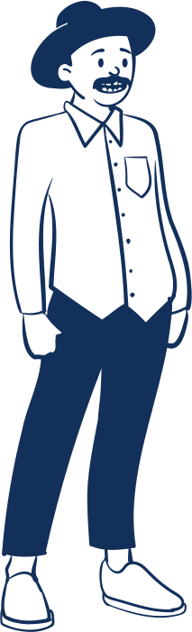
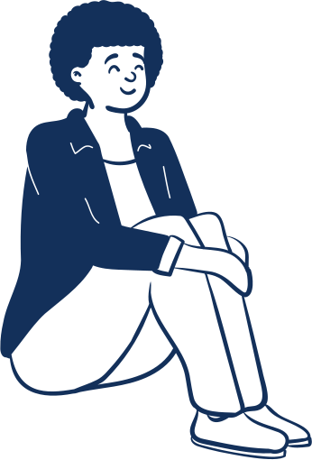

<!-- Generated by scripts/build-page.mjs from page-src/catask.src.html. Do not edit; edit the source and rebuild. -->
<meta charset="utf-8">
<title>catask</title>
<meta name="claude:viewport-fit-sides" content="cover">
<link rel="preconnect" href="https://fonts.googleapis.com">
<link rel="preconnect" href="https://fonts.gstatic.com" crossorigin>
<link rel="stylesheet" href="https://fonts.googleapis.com/css2?family=M+PLUS+Rounded+1c:wght@500;700;800&family=Be+Vietnam+Pro:wght@400;500;600&display=swap">
<style>
:root{--paper: #eef6fd;--ink: #13305a;--soft: #4d6d92;--faint: #8ba6c4;--rule: #cfe1f3;--hover: #e0edfa;--lift: #ffffff;--accent: #2a80d2;--accent-wash: #dbeafb;--over: #c4321b;--over-wash: #fbe6e1;--soon: #9a5d00;--soon-wash: #f9eed8;--sky-top: #3a86cf;--sky-bot: #63a9e4;--cloud: #ffffff;--cloud-shade: #d3e6f8;--cloud-line: #7fb2e3;--sky-line: rgba(255,255,255,.2);--on-sky: #ffffff;--shadow: 0 8px
22px -14px rgba(31, 92, 160, .45);--snack-act: #9fd0ff;--cat-idle: url(mascot/idle.svg);--cat-happy: url(mascot/happy.svg);--cat-sleep: url(mascot/sleep.svg);--cat-alert: url(mascot/alert.svg);--display: "M PLUS Rounded 1c", "Be Vietnam Pro", system-ui, sans-serif;--text: "Be Vietnam Pro", system-ui, -apple-system, "Segoe UI", sans-serif;--ease: cubic-bezier(.2,.7,.2,1)}@media (prefers-color-scheme:
dark){:root:not([data-theme=light]){--paper: #0b1a2e;--ink: #e5f0fb;--soft: #9bb5d2;--faint: #5f7b9b;--rule: #1d3654;--hover: #12294a;--lift: #10233c;--accent: #7cc0ff;--accent-wash: #15345a;--over: #ff8a73;--over-wash: #3a1c16;--soon: #f2b955;--soon-wash: #33270f;--sky-top: #0c2347;--sky-bot: #1b3f73;--cloud: #b9cde6;--cloud-shade: #7f9cc2;--cloud-line: #2f5b92;--sky-line: rgba(180,210,255,.13);--on-sky:
#f2f7ff;--shadow: 0 8px 22px -14px rgba(0, 0, 0, .7);--snack-act: #1d5fa6;color-scheme:dark}}:root[data-theme=dark]{--paper: #0b1a2e;--ink: #e5f0fb;--soft: #9bb5d2;--faint: #5f7b9b;--rule: #1d3654;--hover: #12294a;--lift: #10233c;--accent: #7cc0ff;--accent-wash: #15345a;--over: #ff8a73;--over-wash: #3a1c16;--soon: #f2b955;--soon-wash: #33270f;--sky-top: #0c2347;--sky-bot: #1b3f73;--cloud: #b9cde6;
--cloud-shade: #7f9cc2;--cloud-line: #2f5b92;--sky-line: rgba(180,210,255,.13);--on-sky: #f2f7ff;--shadow: 0 8px 22px -14px rgba(0, 0, 0, .7);--snack-act: #1d5fa6;color-scheme:dark}:root{--add: #1a7f37;--add-wash: #e3f4e8 }@media (prefers-color-scheme: dark){:root:not([data-theme=light]){--add: #5fd38a;--add-wash: #12301f }}:root[data-theme=dark]{--add: #5fd38a;--add-wash: #12301f }*{box-sizing:border-box}
html,body{height:100%}body{background:var(--paper);color:var(--ink);font-family:var(--text);font-size:14px;line-height:1.5;-webkit-font-smoothing:antialiased}button{font:inherit;color:inherit}.app{height:100%;display:flex;flex-direction:column;max-width:1680px;margin:0 auto;padding-block:18px 0;padding-left:max(16px,env(safe-area-inset-left,0px));padding-right:max(16px,env(safe-area-inset-right,0px))}
.mast{position:relative;overflow:hidden;isolation:isolate;display:flex;flex-wrap:wrap;align-items:flex-start;gap:12px 28px;padding:22px 26px 78px;border-radius:22px;background:linear-gradient(var(--sky-top),var(--sky-bot));color:var(--on-sky)}.mast canvas{position:absolute;inset:0;width:100%;height:100%;z-index:-1;display:block}.brand{display:flex;align-items:center;gap:14px;min-width:0}.mascot{width:76px;
height:76px;margin:-6px 0 -10px;flex:none;background:var(--cat-idle) no-repeat center / contain;filter:drop-shadow(0 4px 6px rgba(0,40,90,.28))}.wm{display:inline-flex;align-items:baseline;font-family:var(--display);font-weight:800;letter-spacing:-.01em;line-height:1}.wm-lg{font-size:clamp(36px,4vw,56px);text-shadow:0 3px 0 rgba(0,40,90,.22)}.wm-cat{position:relative;color:#ffd36b}.wm-cat:before,.wm-cat:after{
content:"";position:absolute;top:-.1em;width:0;height:0;border-left:.14em solid transparent;border-right:.14em solid transparent;border-bottom:.24em solid currentColor}.wm-cat:before{left:.06em;transform:rotate(-14deg)}.wm-cat:after{right:.04em;transform:rotate(14deg)}.wm-ask{color:var(--on-sky)}.wm-line{display:flex;flex-wrap:wrap;align-items:baseline;gap:2px 14px;margin:4px 0 6px}.slogan{font-size:14.5px;
font-weight:700;opacity:.9}.brand .kicker{font-size:11.5px;font-weight:700;letter-spacing:.14em;text-transform:uppercase;opacity:.88}.brand h1{margin:2px 0 0;font-family:var(--display);font-weight:800;font-size:clamp(22px,2.4vw,32px);line-height:1.1;letter-spacing:-.01em;text-shadow:0 2px 0 rgba(0,40,90,.2)}.brand h1 em{font-style:normal;opacity:.9}.tally{margin-left:auto;display:flex;flex-wrap:wrap;
gap:22px;font-variant-numeric:tabular-nums}.tally div{display:flex;flex-direction:column;align-items:flex-end}.tally b{font-family:var(--display);font-weight:800;font-size:28px;line-height:1;text-shadow:0 2px 0 rgba(0,40,90,.2)}.tally span{font-size:11.5px;opacity:.9;text-shadow:0 1px 2px rgba(0,30,70,.45)}.mast>.brand,.mast>.tally{position:relative;z-index:1}.tally .is-over b{background:#fff;color:#c4321b;
padding:1px 9px 3px;border-radius:999px;text-shadow:none}nav.tabs{display:flex;align-items:center;gap:6px;padding:8px 0 6px;margin-top:4px;overflow-x:auto;scrollbar-width:none}nav.tabs a{padding:6px 15px;border-radius:999px;color:var(--soft);text-decoration:none;font-weight:700;font-family:var(--display);white-space:nowrap;transition:background .18s,color .18s}.proj-seg{margin:0 0 0 auto;align-self:center;
position:static;padding:3px}nav.tabs .proj-seg{margin:0 0 0 auto}.proj-seg{flex:none}.proj-seg button{padding:3px 12px;font-size:12.5px;white-space:nowrap}.info-btn{margin-left:4px;align-self:center;border:0;background:transparent;color:var(--soft);font-size:12.5px;font-weight:600;line-height:1;cursor:pointer;height:30px;padding:0 10px;border-radius:999px;white-space:nowrap;display:inline-flex;align-items:center;
gap:5px}.ib-ic{display:inline-grid;place-items:center;width:15px;height:15px;flex:none;font-size:14px;line-height:1}.ib-ic svg{width:15px;height:15px;display:block}.info-btn:hover,.info-btn[aria-expanded=true]{background:var(--hover);color:var(--ink)}.howto{position:relative;margin-top:10px;padding:16px 18px;border:1px solid var(--rule);border-radius:16px;background:var(--lift);box-shadow:var(--shadow);
font-size:13px}.howto-grid{display:grid;grid-template-columns:repeat(3,minmax(0,1fr));gap:18px 26px}.howto h3{margin:0 0 6px;font-family:var(--display);font-size:14px;color:var(--accent)}.howto ul{margin:0;padding-left:18px;display:flex;flex-direction:column;gap:4px;color:var(--soft)}.howto b{color:var(--ink)}.howto-close{position:absolute;top:10px;right:12px;border:0;background:transparent;color:var(--soft);
cursor:pointer;font-size:12px}@media (max-width: 900px){.howto-grid{grid-template-columns:1fr}}.demo-btn{align-self:center;border:1.5px dashed var(--accent);background:transparent;color:var(--accent);border-radius:999px;padding:4px 13px;font-size:12.5px;font-weight:600;cursor:pointer;white-space:nowrap}.demo-btn:hover{background:var(--accent-wash)}.howto-foot{display:flex;flex-wrap:wrap;align-items:baseline;
gap:4px 10px;margin-top:14px;padding-top:12px;border-top:1px solid var(--rule);color:var(--soft);font-size:12.5px}.howto-foot[hidden]{display:none}.demo-link{padding:0;border:0;background:transparent;color:var(--accent);font:inherit;font-weight:600;text-decoration:underline;text-underline-offset:2px;cursor:pointer}.demo-link:hover{text-decoration-thickness:2px}nav.tabs a:hover{background:var(--hover);
color:var(--ink)}nav.tabs a[aria-current=page]{background:var(--accent);color:var(--lift)}.status{font-size:12.5px;color:var(--soft);padding:6px 0 0;min-height:24px}.status.warn{color:var(--soon)}.empty{display:flex;align-items:center;gap:10px}.empty:before{content:"";width:54px;height:34px;flex:none;background:var(--cat-sleep) no-repeat center / contain}.empty.happy:before{width:44px;height:44px;
background-image:var(--cat-happy)}.w-over:before{content:"";display:inline-block;width:14px;height:14px;margin:0 4px -3px -3px;background:var(--cat-alert) no-repeat center / contain}@media (prefers-reduced-motion: no-preference){.mascot{animation:bob 4.5s ease-in-out infinite}@keyframes bob{50%{transform:translateY(-5px) rotate(-2deg)}}}.view{flex:1;min-height:0}.label{margin:0 0 10px;display:flex;
align-items:baseline;gap:8px;font-size:11.5px;font-weight:600;letter-spacing:.14em;text-transform:uppercase;color:var(--soft)}.label .n{margin-left:auto;font-variant-numeric:tabular-nums;letter-spacing:0}.label.acc{color:var(--accent)}.scroll{min-height:0;overflow-y:auto;scrollbar-width:thin;scrollbar-color:var(--rule) transparent}.empty{color:var(--faint);font-size:13px;padding:6px 0}a{color:var(--accent)}
:focus-visible{outline:2px solid var(--accent);outline-offset:2px;border-radius:3px}.today{height:100%;display:grid;grid-template-columns:minmax(240px,.8fr) minmax(0,3.2fr)}.rail{padding:16px 24px 28px 0;border-right:1px solid var(--rule)}.three{list-style:none;margin:0;padding:0;counter-reset:k}.three li{counter-increment:k;display:grid;grid-template-columns:44px 1fr 26px;gap:0 8px;align-items:start;
padding:12px 0;border-top:1px solid var(--rule)}.big-check{appearance:none;width:24px;height:24px;margin:2px 0 0;border:2px solid var(--accent);border-radius:50%;background:var(--lift);cursor:pointer;display:grid;place-items:center;transition:background .2s,transform .2s var(--ease)}.big-check:hover{transform:scale(1.08)}.big-check:checked{background:var(--accent)}.big-check:checked:after{content:"";
width:5px;height:10px;margin-top:-3px;border:solid var(--lift);border-width:0 2.5px 2.5px 0;transform:rotate(45deg)}.three li.is-done .tt{text-decoration:line-through;text-decoration-thickness:2px;color:var(--faint)}.three li.is-done:before{color:var(--faint)}.three li:first-child{border-top:0;padding-top:2px}.three li:before{content:counter(k);font-family:var(--display);font-weight:800;font-size:44px;
line-height:.9;color:var(--accent);letter-spacing:-.04em}.three .tt{font-family:var(--display);font-weight:700;font-size:17px;line-height:1.22;text-wrap:balance}.three .sub{margin-top:3px;font-size:12.5px;color:var(--soft);display:flex;flex-wrap:wrap;align-items:center;gap:8px}.rail .block+.block{margin-top:26px}.mini{padding:8px 0;border-top:1px solid var(--rule);font-size:13px}.mini:first-of-type{
border-top:0;padding-top:0}.mini .when{font-weight:600;color:var(--accent);font-variant-numeric:tabular-nums;margin-right:6px}.mini .sm{color:var(--soft);font-size:12.5px}.follow .fl-t{font-weight:600;line-height:1.3}.follow .fl-act{display:flex;flex-wrap:wrap;align-items:center;gap:6px;margin-top:5px}.follow .fl-left{margin-left:auto;color:var(--soft);font-size:11.5px}.follow .fl-more{margin-top:6px;
padding:0;border:0;background:none;color:var(--accent);font:600 12.5px var(--text);cursor:pointer}.board{display:grid;grid-template-columns:repeat(4,minmax(0,1fr));min-height:0}.lane{min-width:0;display:flex;flex-direction:column;min-height:0;padding:16px 14px 0;border-right:1px solid var(--rule);transition:background .15s}.lane:last-child{border-right:0;padding-right:0}.lane.drop{background:var(--accent-wash)}
.lane .scroll{flex:1;padding-bottom:28px;display:flex;flex-direction:column;gap:8px}.card{position:relative;background:var(--lift);border:1px solid var(--rule);border-radius:14px;padding:11px 12px;display:flex;flex-direction:column;gap:4px;cursor:grab;transition:transform .2s var(--ease),box-shadow .2s var(--ease),opacity .2s}.card:hover{box-shadow:var(--shadow);transform:translateY(-1px)}.card.dragging{
opacity:.4}.card.enter{animation:enter .35s var(--ease)}.card .top{display:grid;grid-template-columns:18px 1fr;gap:8px;align-items:start}.card input{appearance:none;width:16px;height:16px;margin:2px 0 0;border:1.5px solid var(--faint);border-radius:6px;cursor:pointer;display:grid;place-items:center}.card input:checked{background:var(--accent);border-color:var(--accent)}.card input:checked:after{content:"";
width:4px;height:8px;margin-top:-2px;border:solid var(--paper);border-width:0 2px 2px 0;transform:rotate(45deg)}.card .tt{font-weight:600;line-height:1.35;overflow-wrap:anywhere}.card.is-done .tt{text-decoration:line-through;color:var(--faint)}.who{font-size:12.5px}.who b{font-weight:600}.why{font-size:12.5px;color:var(--soft);overflow-wrap:anywhere;display:-webkit-box;-webkit-line-clamp:2;-webkit-box-orient:vertical;
overflow:hidden;cursor:pointer}.why.open{-webkit-line-clamp:unset}.meta{display:flex;flex-wrap:wrap;align-items:center;gap:4px 10px;font-size:11.5px;color:var(--soft)}.warn-chip{font-size:11px;font-weight:600;padding:0 7px;line-height:18px;border-radius:999px;white-space:nowrap}.w-over{background:var(--over-wash);color:var(--over)}.w-soon{background:var(--soon-wash);color:var(--soon)}.w-nudge{background:var(--accent-wash);
color:var(--accent)}.due{color:var(--accent);font-weight:600}.due-btn{border:0;background:none;padding:0;cursor:pointer;font:inherit;color:var(--accent);font-weight:600}.due-btn.add{color:var(--faint);font-weight:500}.due-btn:hover{text-decoration:underline}.due-edit{display:inline-flex;flex-wrap:wrap;gap:6px;align-items:center}.due-edit input{width:9.5em;min-width:9.5em;height:26px;line-height:20px;
box-sizing:border-box}.due-edit input,.dlg-due input{font:500 12.5px var(--text);padding:2px 6px;border:1px solid var(--rule);border-radius:7px;background:var(--lift);color:var(--ink);color-scheme:light dark}.due-edit button,.dlg-due button{border:0;background:none;color:var(--accent);cursor:pointer;font:600 12px var(--text);padding:0}.dlg-due{display:flex;gap:8px;align-items:center;margin:10px 0 2px;
font-size:13px;color:var(--soft)}.cal{padding:14px 0 28px}.cal-bar{display:flex;flex-wrap:wrap;align-items:center;gap:8px;margin-bottom:12px}.cal-bar h2{font:800 18px var(--display);margin:0 6px;color:var(--ink)}.cal-nav{border:1px solid var(--rule);background:var(--lift);color:var(--ink);border-radius:999px;padding:4px 12px;font:600 13px var(--text);cursor:pointer}.cal-nav:hover{background:var(--hover)}
.cal-bar .seg{margin:0 0 0 auto;position:static}.cal-grid{display:grid;grid-template-columns:repeat(7,minmax(0,1fr));border:1px solid var(--rule);border-radius:14px;overflow:hidden;background:var(--lift)}.cal-wh{padding:6px 8px;font:700 12px var(--text);color:var(--soft);border-bottom:1px solid var(--rule);border-right:1px solid var(--rule);background:var(--hover)}.cal-day{min-width:0;border-right:1px
solid var(--rule);border-bottom:1px solid var(--rule);padding:6px;display:flex;flex-direction:column;gap:4px}.cal-wh:nth-child(7n),.cal-day:nth-child(7n){border-right:0}.mode-week .cal-day{min-height:340px}.mode-month .cal-day{min-height:108px}.cal-day.today{background:var(--accent-wash)}.cal-day.out{opacity:.45}.cal-day.drop{outline:2px dashed var(--accent);outline-offset:-4px}.cal-dh{font:700 12px
var(--text);color:var(--soft);margin-bottom:2px}.cal-day.today .cal-dh{color:var(--accent)}.cal-it{display:flex;gap:5px;align-items:baseline;font-size:12px;line-height:1.3;padding:3px 6px;border-radius:7px;background:var(--hover);border-left:3px solid var(--accent);min-width:0;cursor:grab}.cal-it .ci-t{min-width:0;overflow:hidden;text-overflow:ellipsis;white-space:nowrap}.mode-week .cal-it .ci-t{white-space:normal;
display:-webkit-box;-webkit-line-clamp:3;-webkit-box-orient:vertical}.cal-it .ci-p,.cal-it .ci-time{flex:none;font:700 10px var(--text);color:var(--soft);font-variant-numeric:tabular-nums}.cal-it.p0{border-left-color:var(--over)}.cal-it.p1{border-left-color:var(--soon)}.cal-it.p3{border-left-color:var(--faint)}.cal-it.over{background:var(--over-wash)}.cal-it.k-plan{background:transparent;border:1px
dashed var(--faint);border-left:3px solid var(--faint)}.cal-it.k-done{opacity:.55;cursor:default}.cal-it.k-done .ci-t{text-decoration:line-through}.cal-it.k-meet{background:transparent;border-left-color:var(--soft);cursor:default}.cal-it.dragging{opacity:.4}.cal-more{border:0;background:none;color:var(--accent);font:600 12px var(--text);padding:0 6px;cursor:pointer;text-align:left}.cal-leg{display:flex;
flex-wrap:wrap;gap:6px 14px;margin-top:10px;font-size:12px;color:var(--soft)}.cal-leg i{display:inline-block;width:14px;height:10px;border-radius:3px;vertical-align:-1px;margin-right:5px;background:var(--hover);border-left:3px solid var(--accent)}.cal-leg i.lg-over{background:var(--over-wash);border-left-color:var(--over)}.cal-leg i.lg-plan{background:transparent;border:1px dashed var(--faint);border-left:3px
solid var(--faint)}.cal-leg i.lg-done{opacity:.55}.cal-leg i.lg-meet{background:transparent;border-left-color:var(--soft)}.cal-hint{margin-left:auto}@media (max-width: 760px){.mode-week .cal-grid{grid-template-columns:1fr}.mode-week .cal-day{min-height:0;border-right:0}.mode-month .cal-day{min-height:70px;padding:3px}.mode-month .cal-it{font-size:10.5px;padding:2px 4px}.mode-month .cal-it .ci-p{display:none}
.cal-bar .seg,.cal-hint{margin-left:0}}.open-link{color:var(--accent);text-decoration:none;font-weight:600}.open-link:hover{text-decoration:underline}.moves{display:flex;gap:4px;flex-wrap:wrap;max-height:0;overflow:hidden;opacity:0;transition:max-height .2s var(--ease),opacity .2s}.card:hover .moves,.card:focus-within .moves{max-height:40px;opacity:1}@media (hover: none){.moves{max-height:none;opacity:1}
.card{cursor:auto}}.moves button{font-size:11px;padding:1px 8px;border:1px solid var(--rule);border-radius:999px;background:transparent;cursor:pointer;color:var(--soft)}.moves button:hover{border-color:var(--ink);color:var(--ink)}.tag{font-size:11px;font-weight:600;padding:0 7px;border-radius:999px;border:1px solid var(--ink);background:transparent;cursor:pointer;line-height:16px}.tag:hover,.tag[aria-expanded=true]{
background:var(--ink);color:var(--paper)}.tag.good{border-color:var(--accent);color:var(--accent)}.tag.good:hover,.tag.good[aria-expanded=true]{background:var(--accent);color:var(--paper)}.note{display:grid;grid-template-rows:0fr;transition:grid-template-rows .28s var(--ease)}.note>div{overflow:hidden;font-size:12px}.note>div>p{margin:4px 0 0;padding:4px 0 2px 9px;border-left:2px solid var(--ink)}
.note.good>div>p{border-left-color:var(--accent)}.note.show{grid-template-rows:1fr}.win{display:grid;grid-template-columns:16px 1fr;gap:8px;padding:8px 2px;border-top:1px solid var(--rule);font-size:13px}.win:first-child{border-top:0}.dot-done{width:14px;height:14px;margin-top:3px;border-radius:50%;background:var(--accent);position:relative}.dot-done:after{content:"";position:absolute;left:4.5px;top:2px;
width:3.5px;height:7px;border:solid var(--paper);border-width:0 1.8px 1.8px 0;transform:rotate(45deg)}.win .sm{color:var(--soft);font-size:12px}.sub-label{margin:12px 0 4px;font-size:11px;font-weight:600;letter-spacing:.1em;text-transform:uppercase;color:var(--faint)}.people{height:100%;padding:14px 0 28px}.seg{display:inline-flex;gap:4px;padding:4px;margin-bottom:14px;border-radius:999px;background:var(--hover);
position:sticky;top:0;z-index:2}.seg button{border:0;background:transparent;padding:5px 14px;border-radius:999px;cursor:pointer;font-weight:700;font-family:var(--display);color:var(--soft);transition:background .18s,color .18s}.seg button span{font-family:var(--text);font-weight:600;font-size:12px;opacity:.8;font-variant-numeric:tabular-nums}.seg button:hover{color:var(--ink)}.seg button[aria-pressed=true]{
background:var(--lift);color:var(--accent);box-shadow:var(--shadow)}.person{display:grid;grid-template-columns:minmax(180px,260px) minmax(0,1fr);gap:24px;padding:18px 0;border-top:1px solid var(--rule)}.person:first-child{border-top:0;padding-top:4px}.av{border-radius:50%;background:var(--accent-wash);border:1.5px solid var(--lift);object-fit:cover;flex:none}.av.xs{width:20px;height:20px;vertical-align:-5px;
margin-right:6px}.av.lg{width:56px;height:56px;border:2px solid var(--accent-wash);box-shadow:var(--shadow)}:root:not([data-theme=light]) .av{background:#dbeafb}.phead{display:flex;align-items:center;gap:12px}.faces{display:inline-flex;margin-right:8px;vertical-align:-5px}.faces .av.xs{margin-right:-7px}.faces .av.xs:last-child{margin-right:0}.peep-ill{float:right;width:76px;height:auto;margin:-6px
0 0 12px;opacity:.95;background:#dbeafb;border-radius:16px;padding:6px}.person h3{margin:0;font-family:var(--display);font-weight:700;font-size:20px;line-height:1.15}.person .role{font-size:12.5px;color:var(--soft)}.ledger{display:flex;gap:18px;margin-top:10px;font-variant-numeric:tabular-nums}.ledger div{display:flex;flex-direction:column}.ledger b{font-family:var(--display);font-size:22px;font-weight:700;
line-height:1}.ledger span{font-size:11.5px;color:var(--soft)}.person .worst{margin-top:8px}.items{display:flex;flex-direction:column}.it{display:grid;grid-template-columns:1fr auto;gap:4px 14px;padding:9px 0;border-top:1px solid var(--rule)}.it:first-child{border-top:0;padding-top:0}.it .tt{font-weight:600}.it .dir{font-size:12px;color:var(--soft)}.it .side{display:flex;flex-direction:column;align-items:flex-end;
gap:6px}.view-msg{font:600 11.5px/18px var(--text);padding:1px 9px 1px 7px;border-radius:999px;border:1.5px solid var(--accent);color:var(--accent);background:var(--lift);cursor:pointer;white-space:nowrap;text-decoration:none;display:inline-flex;align-items:center;gap:4px;flex:none;vertical-align:1px}.view-msg .ic{font-size:11px;line-height:1}.view-msg:hover{background:var(--accent);color:var(--paper)}
.card .who{display:flex;align-items:center;gap:8px;flex-wrap:wrap}.card .who .who-l{min-width:0;flex:1 1 auto}.three .sub .view-msg,.win .view-msg,.ev .view-msg{margin-left:6px}.tt-link{cursor:pointer}.tt-link:hover{text-decoration:underline;text-decoration-color:var(--accent);text-underline-offset:2px}.it{grid-template-columns:18px 1fr auto}.it .chk,.win .chk{appearance:none;width:16px;height:16px;
margin:3px 0 0;border:1.5px solid var(--faint);border-radius:6px;cursor:pointer;display:grid;place-items:center;background:var(--lift)}.it .chk:checked,.win .chk:checked,.ev .chk:checked{background:var(--accent);border-color:var(--accent)}.it .chk:checked:after,.win .chk:checked:after,.ev .chk:checked:after{content:"";width:4px;height:8px;margin-top:-2px;border:solid var(--paper);border-width:0 2px
2px 0;transform:rotate(45deg)}.it.is-done .tt,.win.is-done .wt,.ev.is-done .tt span.tx{text-decoration:line-through;color:var(--faint)}.win.has-chk{grid-template-columns:18px 1fr}.ev .chk{appearance:none;width:15px;height:15px;margin:0 6px -2px 0;border:1.5px solid var(--faint);border-radius:5px;cursor:pointer;display:inline-grid;place-items:center;background:var(--lift);vertical-align:-2px}.pri{font:700
10.5px/16px var(--text);letter-spacing:.02em;padding:0 6px;border-radius:6px;border:1px solid transparent;cursor:pointer;white-space:nowrap;flex:none;font-variant-numeric:tabular-nums}.pri[disabled]{cursor:default}.pri.p0{background:var(--over);color:#fff}.pri.p1{background:var(--soon-wash);color:var(--soon);border-color:var(--soon)}.pri.p2{background:var(--accent-wash);color:var(--accent)}.pri.p3{
background:transparent;color:var(--faint);border-color:var(--rule)}.pri:not([disabled]):hover{outline:1.5px solid var(--ink);outline-offset:1px}.card .top{grid-template-columns:18px 1fr auto}.three .tt .pri,.it .tt .pri{margin-right:6px;vertical-align:2px}.flag{font-size:10.5px;font-weight:600;padding:0 6px;line-height:16px;border-radius:999px;border:1px solid var(--accent);color:var(--accent);white-space:nowrap}
.pri-legend{display:flex;flex-wrap:wrap;gap:6px 14px;align-items:center;margin-top:12px;font-size:12px;color:var(--soft)}.pri-legend .pri{cursor:default}.dlg-back{position:fixed;inset:0;z-index:50;background:#08162c73;display:grid;place-items:center;padding:16px}.dlg-back[hidden]{display:none}.dlg{width:min(520px,100%);max-height:min(80vh,640px);overflow:auto;background:var(--lift);color:var(--ink);
border:1px solid var(--rule);border-radius:18px;box-shadow:0 20px 50px -20px #0000008c;padding:18px 20px 16px;position:relative}.dlg h2{margin:0 34px 4px 0;font-family:var(--display);font-size:17px;line-height:1.25}.dlg .dlg-meta{font-size:12.5px;color:var(--soft);display:flex;flex-wrap:wrap;gap:4px 10px}.dlg blockquote{margin:14px 0 10px;padding:10px 14px;border-left:3px solid var(--accent);background:var(--accent-wash);
border-radius:0 10px 10px 0;white-space:pre-wrap;overflow-wrap:anywhere;font-size:13.5px}.dlg .dlg-note{font-size:11.5px;color:var(--faint)}.dlg .dlg-ctx{margin:14px 0 2px;font-size:11px;font-weight:600;letter-spacing:.1em;text-transform:uppercase;color:var(--soft)}.dlg .dlg-why{margin:0 0 10px;font-size:13.5px;overflow-wrap:anywhere;white-space:pre-wrap}.dlg .dlg-sig{margin:-2px 0 12px}.dlg .dlg-sig
h3{margin:0 0 6px;font-size:11px;font-weight:600;letter-spacing:.1em;text-transform:uppercase;color:var(--soft)}.dlg .dlg-tags{display:flex;flex-wrap:wrap;gap:6px}.dlg .dlg-tags .tag{cursor:default;display:inline-block}.dlg .dlg-tags .tag:hover{background:transparent;color:inherit}.dlg .dlg-tags .tag.good:hover{color:var(--accent)}.dlg .dlg-sig ul{list-style:none;margin:8px 0 0;padding:0;display:grid;
gap:4px}.dlg .dlg-sig li{font-size:12.5px;padding:2px 0 2px 9px;border-left:2px solid var(--ink);overflow-wrap:anywhere}.dlg .dlg-sig li.good{border-left-color:var(--accent)}.dlg .dlg-sig li.good b{color:var(--accent)}.dlg .dlg-actions{display:flex;justify-content:flex-end;gap:8px;margin-top:14px}.dlg .dlg-open{padding:6px 14px;border-radius:999px;background:var(--accent);color:var(--lift);text-decoration:none;
font-weight:600}.dlg .dlg-x{position:absolute;top:10px;right:10px;width:32px;height:32px;border:0;border-radius:50%;background:transparent;cursor:pointer;font-size:16px;color:var(--soft)}.dlg .dlg-x:hover{background:var(--hover);color:var(--ink)}@media (max-width: 560px){.dlg-back{place-items:end stretch;padding:0}.dlg{width:100%;border-radius:18px 18px 0 0;max-height:85vh}}.dlg .dlg-actions{flex-wrap:wrap;
align-items:center}.ai-btn,.ai-chip{font:600 11.5px/18px var(--text);padding:1px 9px;border-radius:999px;cursor:pointer;white-space:nowrap;flex:none;display:inline-flex;align-items:center;gap:4px;vertical-align:1px}.ai-btn{border:1.5px dashed var(--faint);color:var(--soft);background:var(--lift)}.ai-btn:hover{border-style:solid;border-color:var(--accent);color:var(--accent)}.ai-chip{border:1.5px solid
transparent}.ai-chip.ai-queued{background:var(--hover);color:var(--soft);border-color:var(--rule)}.ai-chip.ai-running{background:var(--accent-wash);color:var(--accent)}.ai-chip.ai-needs_review{background:var(--accent);color:var(--lift);font-weight:700;box-shadow:var(--shadow)}.ai-chip.ai-error{background:var(--over-wash);color:var(--over);border-color:var(--over)}.ai-chip.ai-accepted,.ai-chip.ai-cancelled{
background:transparent;color:var(--faint);border-color:var(--rule)}.ai-chip.ai-cancelled,.dlg-meta .ai-chip{cursor:default}.ai-chip:not(.ai-cancelled):hover{outline:1.5px solid var(--ink);outline-offset:1px}.dlg-meta .ai-chip:hover{outline:none}.three .sub .ai-btn,.three .sub .ai-chip,.dlg-actions .ai-btn,.dlg-actions .ai-chip{margin-left:6px}@media (prefers-reduced-motion: no-preference){.ai-chip.ai-running{
animation:ai-pulse 1.8s ease-in-out infinite}@keyframes ai-pulse{50%{opacity:.55}}}.tally .tally-ai{display:flex;flex-direction:column;align-items:flex-end;border:0;background:transparent;color:inherit;cursor:pointer;padding:0;font:inherit}.tally .tally-ai b{background:#fff;color:#2a80d2;padding:1px 9px 3px;border-radius:999px;text-shadow:none}.tally .tally-ai:hover span{text-decoration:underline}
.ai-kinds{border:0;margin:12px 0 0;padding:0;display:flex;flex-direction:column;gap:6px}.ai-kinds legend{padding:0;margin-bottom:6px;font-size:11px;font-weight:600;letter-spacing:.1em;text-transform:uppercase;color:var(--soft)}.ai-kind{display:grid;grid-template-columns:18px 1fr;gap:10px;align-items:start;padding:8px 10px;border:1px solid var(--rule);border-radius:12px;cursor:pointer}.ai-kind:hover{
background:var(--hover)}.ai-kind input{margin:3px 0 0;accent-color:var(--accent)}.ai-kind small{display:block;font-size:12px;color:var(--soft)}.ai-note-l{display:block;margin:12px 0 4px;font-size:12.5px;color:var(--soft)}.ai-count{float:right;font-variant-numeric:tabular-nums;color:var(--faint)}.ai-read{display:grid;grid-template-columns:17px 1fr;gap:10px;align-items:start;margin-top:10px;font-size:13px;
cursor:pointer}.ai-read input{margin-top:2px}.ai-read small{display:block;font-size:12px;color:var(--soft)}.ai-safe{margin:10px 0 0;font-size:12.5px;font-weight:600;color:var(--soon)}.ai-hint{margin:6px 0 0;font-size:12px;color:var(--faint)}.ai-steps{list-style:none;margin:0;padding:0 0 0 12px;border-left:2px solid var(--rule);display:grid;gap:4px;font-size:12.5px}.ai-steps time{color:var(--soft);
font-variant-numeric:tabular-nums;margin-right:6px}.ai-res-h{display:flex;align-items:baseline;justify-content:space-between;gap:8px;margin:14px 0 6px}.ai-res-h .dlg-ctx{margin:0}.ai-copy{padding:3px 12px;font-size:12.5px}.ai-result{margin:0;padding:10px 14px;border:1px solid var(--rule);border-left:3px solid var(--accent);border-radius:0 10px 10px 0;background:var(--paper);white-space:pre-wrap;overflow-wrap:anywhere;
font-size:13.5px;line-height:1.55}.ai-copied{display:block;min-height:16px;font-size:12px;color:var(--accent)}.ai-src{list-style:none;margin:0;padding:0;display:flex;flex-direction:column;gap:2px;font-size:12.5px}.ai-err{margin:10px 0 0;padding:8px 12px;border-radius:10px;background:var(--over-wash);color:var(--over);font-size:12.5px;overflow-wrap:anywhere}.ai-chip.ai-approved{background:var(--accent-wash);
color:var(--accent);border-color:var(--accent)}.ai-chip.ai-applied{background:transparent;color:var(--accent);border-color:var(--accent-wash)}.ai-kick{font-size:11px;font-weight:600;letter-spacing:.1em;text-transform:uppercase;color:var(--soft);margin:0 34px 2px 0}.ai-known{margin:8px 0 0;border:1px solid var(--rule);border-radius:12px;background:var(--paper);font-size:12.5px}.ai-known summary{cursor:pointer;
padding:7px 12px;font-weight:600;color:var(--soft)}.ai-known summary .ai-count{float:none;margin-left:8px;font-weight:400}.ai-known dl{margin:0;padding:0 12px 4px;display:grid;grid-template-columns:max-content minmax(0,1fr);gap:4px 12px}.ai-known dt{color:var(--soft)}.ai-known dd{margin:0;overflow-wrap:anywhere}.ai-known q{font-style:italic}.ai-known .ak-by{color:var(--soft)}.ai-known .ai-hint{padding:0
12px 8px}.ai-kchips{display:flex;flex-wrap:wrap;gap:6px}.ai-kc{position:relative;cursor:pointer}.ai-kc input{position:absolute;opacity:0;width:1px;height:1px;margin:0}.ai-kc span{display:inline-block;padding:5px 12px;border:1.5px solid var(--rule);border-radius:999px;font-size:13px;font-weight:600;color:var(--ink);background:var(--lift)}.ai-kc:hover span{background:var(--hover)}.ai-kc input:checked+
span{background:var(--accent);border-color:var(--accent);color:var(--lift)}.ai-kc input:focus-visible+span{outline:2px solid var(--ink);outline-offset:2px}.ai-modes{margin-top:14px}textarea.ai-ctx{min-height:110px}textarea.ai-after{min-height:180px;font-size:13px;line-height:1.5}.ai-sp{width:8em}.ai-foot{position:sticky;bottom:-16px;margin:14px -20px -16px;padding:10px 20px 14px;background:var(--lift);
border-top:1px solid var(--rule);z-index:1}.ai-before{margin:0;padding:8px 12px;border:1px dashed var(--rule);border-radius:10px;background:var(--paper);color:var(--soft);white-space:pre-wrap;overflow-wrap:anywhere;font-size:12.5px;max-height:220px;overflow:auto}.ai-before-d summary,.ai-ctx-d summary{cursor:pointer;font-size:12.5px;color:var(--soft);margin:4px 0}.ai-empty{margin:0;font-size:12.5px;
color:var(--faint)}.ai-tag{font-weight:400;text-transform:none;letter-spacing:0;color:var(--accent)}.ai-warn{margin:10px 0 0;padding:8px 12px;border-radius:10px;background:var(--soon-wash);color:var(--soon);font-size:12.5px;overflow-wrap:anywhere}.ai-ok{margin:10px 0 0;padding:8px 12px;border-radius:10px;background:var(--accent-wash);color:var(--accent);font-size:13px;font-weight:600}.ai-confirm{margin:12px
0 0;padding:10px 12px;border:1.5px solid var(--accent);border-radius:12px;background:var(--accent-wash)}.ai-confirm.is-warn{border-color:var(--soon);background:var(--soon-wash)}.ai-confirm p{margin:0 0 6px;font-size:13px}.ai-confirm .dlg-actions{margin-top:8px}.ai-note-r{border-left-color:var(--rule);font-size:12.5px}@media (max-width: 560px){.ai-known dl{grid-template-columns:minmax(0,1fr);gap:0}
.ai-known dd{margin-bottom:4px}.ai-foot .btn-pri,.ai-foot .btn-sec{flex:1 1 auto}}.week{height:100%;display:grid;grid-template-columns:minmax(0,1.1fr) minmax(0,1fr);gap:0}.week>section{padding:18px 26px 28px 0}.week>section+section{padding:18px 0 28px 26px;border-left:1px solid var(--rule)}.big{display:flex;flex-wrap:wrap;gap:30px;margin-bottom:26px}.big div{display:flex;flex-direction:column}.big
b{font-family:var(--display);font-weight:800;font-size:48px;line-height:.95;letter-spacing:-.03em;font-variant-numeric:tabular-nums}.big b.acc{color:var(--accent)}.big span{font-size:12.5px;color:var(--soft)}.heatwrap{display:flex;flex-wrap:wrap;align-items:stretch;gap:18px 28px}.heatcol{flex:1 1 300px;max-width:460px;min-width:0}.heatside{flex:1 1 200px;min-width:0;display:flex;gap:14px;align-items:flex-end;
padding:14px 16px;border-radius:18px;background:var(--hover)}.heatside img{width:84px;height:auto;flex:none}.heatside dl{margin:0;display:flex;flex-direction:column;gap:10px}.heatside dt{font-size:11.5px;color:var(--soft)}.heatside dd{margin:0;font-family:var(--display);font-weight:800;font-size:20px;line-height:1.1}.heat{display:grid;grid-template-columns:48px repeat(5,minmax(0,1fr));gap:6px;align-items:center;
font-size:11.5px;color:var(--soft)}.heat .cell{aspect-ratio:1;max-width:100%;border-radius:5px;background:var(--hover);display:grid;place-items:center;font-variant-numeric:tabular-nums;font-weight:600;color:var(--ink);font-size:12px;transition:transform .15s}.heat .cell:hover{transform:scale(1.08)}.heat .cell.today{outline:2px solid var(--ink);outline-offset:1px}.legend{display:flex;align-items:center;
gap:6px;margin-top:10px;font-size:11.5px;color:var(--soft)}.legend i{width:12px;height:12px;border-radius:3px;display:inline-block}.sigrow{display:flex;flex-wrap:wrap;gap:8px;margin-top:8px}.sigrow span{font-size:12px;padding:2px 10px;border:1px solid var(--rule);border-radius:999px}.dayhead{margin:18px 0 4px;font-size:12px;font-weight:600;color:var(--soft)}.dayhead:first-child{margin-top:0}.day{height:100%;
display:grid;grid-template-columns:minmax(0,1.4fr) minmax(0,1fr)}.day>section{padding:16px 26px 28px 0}.day>section+section{padding:16px 0 28px 26px;border-left:1px solid var(--rule)}.chips{display:flex;flex-wrap:wrap;gap:6px;margin-bottom:16px}.chips button{padding:3px 11px;border-radius:999px;border:1px solid var(--rule);background:transparent;cursor:pointer;font-size:12.5px;font-variant-numeric:tabular-nums}
.chips button[aria-pressed=true]{background:var(--ink);color:var(--paper);border-color:var(--ink)}.line{position:relative;list-style:none;margin:0;padding:0 0 0 76px}.line:before{content:"";position:absolute;left:62px;top:6px;bottom:6px;width:1px;background:var(--rule)}.ev{position:relative;padding:0 0 16px}.ev .t{position:absolute;left:-76px;width:52px;text-align:right;font-variant-numeric:tabular-nums;
font-weight:600;font-size:12.5px}.ev:before{content:"";position:absolute;left:-18px;top:6px;width:9px;height:9px;border-radius:50%;background:var(--paper);border:2px solid var(--faint)}.ev.k-done:before{background:var(--accent);border-color:var(--accent)}.ev.k-meeting:before{border-color:var(--ink);background:var(--ink)}.ev.k-ai:before{border-color:var(--accent)}.ev .kind{font-size:11px;font-weight:600;
letter-spacing:.08em;text-transform:uppercase;color:var(--soft)}.ev.k-done .kind{color:var(--accent)}.ev .tt{font-weight:600}.ev .sm{font-size:12.5px;color:var(--soft)}.bar{height:4px;border-radius:2px;background:var(--accent-wash);margin-top:5px;max-width:100%}.bar i{display:block;height:100%;border-radius:2px;background:var(--accent)}.pbars{display:flex;flex-direction:column;gap:10px;margin-bottom:8px}
.pb{display:grid;grid-template-columns:minmax(90px,160px) minmax(0,1fr) auto;gap:10px;align-items:center;font-size:13px}.pb .nm{font-weight:600;overflow:hidden;text-overflow:ellipsis;white-space:nowrap}.pb .track{height:10px;border-radius:0 4px 4px 0;background:var(--hover);position:relative}.pb .fill{position:absolute;inset:0 auto 0 0;border-radius:0 4px 4px 0;background:var(--accent);transition:width
.5s var(--ease)}.pb .val{font-variant-numeric:tabular-nums;color:var(--ink);white-space:nowrap;min-width:92px;text-align:right}.pb .val span{color:var(--soft)}.pb:hover .track{outline:1px solid var(--rule)}.ptable-wrap{overflow-x:auto;margin-top:14px}.ptable{border-collapse:collapse;font-size:12.5px;font-variant-numeric:tabular-nums;min-width:100%}.ptable th,.ptable td{padding:6px 8px;border-bottom:1px
solid var(--rule);text-align:right;white-space:nowrap}.ptable th:first-child,.ptable td:first-child{text-align:left;padding-left:0}.ptable th{font-size:11px;font-weight:600;letter-spacing:.08em;text-transform:uppercase;color:var(--soft)}.ptable tfoot td{font-weight:600;border-bottom:0}.ptable td.z{color:var(--faint)}.note-sm{font-size:12px;color:var(--faint);margin-top:6px}.set-back{position:fixed;
inset:0;z-index:60;background:#08162c73;display:flex;justify-content:flex-end}.set-back[hidden]{display:none}.set-panel{width:min(460px,100%);height:100%;display:flex;flex-direction:column;background:var(--paper);color:var(--ink);border-left:1px solid var(--rule);border-radius:18px 0 0 18px;box-shadow:-20px 0 50px -30px #0000008c;overflow:hidden;outline:none}.set-head{display:flex;align-items:center;
gap:10px;padding:16px 20px 12px;border-bottom:1px solid var(--rule)}.set-head h2{flex:1;min-width:0;margin:0;font-family:var(--display);font-size:19px;line-height:1.2}.set-x{flex:none;width:32px;height:32px;border:0;border-radius:50%;background:transparent;cursor:pointer;font-size:16px;color:var(--soft)}.set-x:hover{background:var(--hover);color:var(--ink)}.set-body{flex:1;min-height:0;overflow-y:auto;
overscroll-behavior:contain;padding:0 20px 20px;scrollbar-width:thin;scrollbar-color:var(--rule) transparent}.set-intro{margin:12px 0 4px;font-size:12.5px;color:var(--soft)}.set-note{margin:10px 0 0;padding:8px 12px;border-radius:10px;background:var(--soon-wash);color:var(--soon);font-size:12.5px}.set-sec{padding:16px 0;border-top:1px solid var(--rule);min-width:0}.set-sec:first-of-type{border-top:0}
.set-sec h3{margin:0 0 10px;font-size:11.5px;font-weight:600;letter-spacing:.14em;text-transform:uppercase;color:var(--soft)}.set-hint{display:block;margin:6px 0 0;font-size:12px;color:var(--faint);overflow-wrap:anywhere}.set-err{margin:8px 0 0;font-size:12.5px;color:var(--over)}.set-id{margin:0;display:grid;grid-template-columns:auto minmax(0,1fr);gap:4px 14px;font-size:13px}.set-id dt{color:var(--soft)}
.set-id dd{margin:0;font-weight:600;overflow-wrap:anywhere}.set-seg{position:static;margin:0}.set-row{display:flex;flex-wrap:wrap;gap:8px;align-items:flex-end}.set-field{flex:1 1 140px;min-width:0;display:flex;flex-direction:column;gap:4px;font-size:12.5px;color:var(--soft)}.set-field.wide{flex-basis:100%}.set-in{width:100%;min-width:0;font:inherit;font-size:14px;color:var(--ink);background:var(--lift);
border:1px solid var(--rule);border-radius:10px;padding:7px 10px}textarea.set-in{min-height:70px;resize:vertical}.set-in:focus-visible{outline:2px solid var(--accent);outline-offset:1px}.set-in[disabled],.set-panel button[disabled],.set-panel input[disabled]{opacity:.55;cursor:default}.set-checks{list-style:none;margin:0;padding:0;display:flex;flex-direction:column;gap:8px}.set-checks label{display:flex;
align-items:center;gap:10px;cursor:pointer}.set-cb{flex:none;width:17px;height:17px;margin:0;accent-color:var(--accent)}.set-days{display:flex;flex-wrap:wrap;gap:6px;margin-top:12px}.set-days button{min-width:42px;padding:4px 8px;border-radius:999px;border:1px solid var(--rule);background:transparent;cursor:pointer;font-size:12.5px;font-weight:600}.set-days button[aria-pressed=true]{background:var(--accent);
border-color:var(--accent);color:var(--lift)}.chips-ed{list-style:none;margin:0 0 10px;padding:0;display:flex;flex-wrap:wrap;gap:6px}.chips-ed li{max-width:100%;display:inline-flex;align-items:center;gap:2px;padding:2px 3px 2px 11px;border-radius:999px;background:var(--accent-wash);font-size:12.5px}.chips-ed li>span{min-width:0;overflow-wrap:anywhere}.chips-ed small{color:var(--soft);font-size:12px}
.chip-x{flex:none;width:24px;height:24px;border:0;border-radius:50%;background:transparent;cursor:pointer;color:var(--soft);font-size:11px}.chip-x:hover{background:var(--lift);color:var(--ink)}.set-add{flex:none;padding:7px 14px;border-radius:999px;border:1.5px solid var(--accent);background:transparent;color:var(--accent);font-weight:600;cursor:pointer}.set-add:hover{background:var(--accent-wash)}
.set-switch{display:grid;grid-template-columns:minmax(0,1fr) auto;gap:0 14px;align-items:start;padding:6px 0;cursor:pointer}.set-switch+.set-switch{margin-top:8px}.sw{appearance:none;position:relative;width:38px;height:22px;margin:2px 0 0;border-radius:999px;background:var(--rule);cursor:pointer;transition:background .2s}.sw:after{content:"";position:absolute;top:3px;left:3px;width:16px;height:16px;
border-radius:50%;background:var(--lift);box-shadow:0 1px 2px #00000040;transition:transform .2s var(--ease)}.sw:checked{background:var(--accent)}.sw:checked:after{transform:translate(16px)}.set-foot{display:flex;flex-wrap:wrap;align-items:center;gap:8px;padding:12px 20px calc(12px + env(safe-area-inset-bottom,0px));border-top:1px solid var(--rule);background:var(--lift)}.set-dirty{flex:1 1 140px;
min-width:0;font-size:12.5px;color:var(--soft)}.set-dirty.on{color:var(--soon);font-weight:600}.set-dirty.on:before{content:"●";margin-right:6px}.btn-pri{padding:7px 18px;border:0;border-radius:999px;background:var(--accent);color:var(--lift);font-weight:700;cursor:pointer}.btn-sec{padding:7px 14px;border:1px solid var(--rule);border-radius:999px;background:transparent;font-weight:600;cursor:pointer}
.btn-sec:hover{background:var(--hover)}@media (max-width: 560px){.set-panel{width:100%;border-radius:0;border-left:0}.set-head,.set-body,.set-foot{padding-left:16px;padding-right:16px}}.snack{position:fixed;z-index:70;left:max(16px,env(safe-area-inset-left,0px));right:max(16px,env(safe-area-inset-right,0px));bottom:calc(16px + env(safe-area-inset-bottom,0px));margin:0 auto;width:fit-content;max-width:min(440px,calc(100vw
- 32px));min-height:44px;display:flex;align-items:center;gap:8px;padding:6px 6px 6px 16px;border-radius:999px;overflow:hidden;white-space:nowrap;background:var(--ink);color:var(--paper);box-shadow:var(--shadow),0 18px 40px -16px #0000008c;font-size:13.5px;line-height:20px;opacity:1;transition:opacity .15s ease,display .15s allow-discrete}.snack[hidden]{display:none;opacity:0}.snack-ic{flex:none;width:16px;
text-align:center;font-weight:700}.snack-ic:not(.pri){color:var(--snack-act)}.snack-ic.pri{width:auto;cursor:default;outline:0!important}.snack-msg{flex:1 1 auto;min-width:0;display:flex;align-items:baseline;gap:6px}.snack-v{flex:none}.snack-t{min-width:0;overflow:hidden;text-overflow:ellipsis;white-space:nowrap;font-weight:700}.snack-undo{flex:none;height:32px;padding:0 12px;border:0;border-radius:999px;
background:transparent;color:var(--snack-act);font:inherit;font-weight:700;cursor:pointer}.snack-kbd{flex:none;margin-left:-4px;font:600 11px/1 var(--text);color:var(--paper);opacity:.6}.snack-x{flex:none;width:28px;height:28px;padding:0;border:0;border-radius:50%;background:transparent;color:var(--paper);opacity:.6;font-size:12px;line-height:28px;cursor:pointer}.snack-undo:hover,.snack-x:hover{background:color-mix(in
srgb,var(--paper) 14%,transparent);opacity:1}.snack :focus-visible{outline-color:var(--snack-act)}.snack-bar{position:absolute;left:0;right:0;bottom:0;height:2px;background:var(--snack-act);opacity:.85;transform-origin:left center;pointer-events:none}.snack.paused .snack-bar{animation-play-state:paused}@media (hover: none),(max-width: 599px){.snack-kbd{display:none}}@media (max-width: 599px){.snack{
width:auto;max-width:none}}@media (prefers-reduced-motion: no-preference){.snack:not([hidden]){animation:snack-in .18s var(--ease)}.snack-bar{animation:snack-count linear forwards}}@media (prefers-reduced-motion: reduce){.snack:not([hidden]){animation:snack-fade .18s ease}}@keyframes snack-in{0%{opacity:.001;transform:translateY(8px)}to{opacity:1;transform:none}}@keyframes snack-fade{0%{opacity:.001}to{
opacity:1}}@keyframes snack-count{0%{transform:scaleX(1)}to{transform:scaleX(0)}}@keyframes enter{0%{opacity:.001;transform:translateY(6px)}to{opacity:1;transform:none}}@media (prefers-reduced-motion: no-preference){.view.anim .three li{animation:enter .55s var(--ease) both}.view.anim .three li:nth-child(2){animation-delay:.08s}.view.anim .three li:nth-child(3){animation-delay:.16s}.view.anim>*{animation:enter
.3s var(--ease)}}@media (prefers-reduced-motion: reduce){*,*:before,*:after{animation:none!important;transition:none!important}}.three .sub .view-msg,.three .sub .ai-btn,.three .sub .ai-chip{margin-left:0}.it .side .cp-id{align-self:flex-end}.cp-id{flex:none;width:26px;height:22px;padding:0;border:1px solid var(--rule);border-radius:7px;background:var(--lift);color:var(--soft);font-size:13px;line-height:1;
cursor:pointer;display:inline-grid;place-items:center}.cp-id:hover{border-color:var(--accent);color:var(--accent)}.flash{animation:flash 2.4s var(--ease)}@keyframes flash{0%,45%{box-shadow:0 0 0 3px var(--accent)}to{box-shadow:0 0 0 0 transparent}}.today-main{min-width:0;min-height:0;display:flex;flex-direction:column}.today-main>.board{flex:1}.aistrip{position:relative;min-width:0;border-bottom:1px
solid var(--rule);background:var(--paper);z-index:3}.aisecs-wrap{display:grid;transition:grid-template-rows .26s cubic-bezier(.2,.8,.2,1),opacity .2s ease}.fold-clip{overflow:hidden;min-height:0}.aisecs-wrap{grid-template-rows:1fr;opacity:1}.aisecs-wrap .aisecs{transition:transform .26s cubic-bezier(.2,.8,.2,1)}.aistrip.is-col .aisecs-wrap{grid-template-rows:0fr;opacity:0}.aistrip.is-col .aisecs-wrap
.aisecs{transform:translateY(-8px)}.aisecs{display:flex;gap:4px 24px;padding:16px 40px 12px 14px;min-width:0}.aisec{flex:1 1 0;min-width:0}.aisec-list{display:flex;gap:8px;overflow-x:auto;padding-bottom:4px;scrollbar-width:thin;scrollbar-color:var(--rule) transparent}.aisec-list>.aq{flex:0 0 260px}.aisum{display:flex;width:100%;align-items:center;gap:8px;padding:8px 40px 8px 0;border:0;background:transparent;
color:var(--ink);font:600 13px/1.3 var(--text);text-align:left;cursor:pointer}.aistrip.is-col{border-bottom-color:transparent}.aistrip.is-col .strip-chev{display:none}.strip-chev{position:absolute;top:8px;right:6px;width:28px;height:28px;border:1px solid var(--rule);border-radius:50%;background:var(--lift);color:var(--soft);cursor:pointer;font-size:12px;line-height:1}.strip-chev:hover{color:var(--ink);
border-color:var(--ink)}.strip-chev span{display:inline-block;transition:transform .26s cubic-bezier(.2,.8,.2,1)}.aistrip.is-col .strip-chev span{transform:rotate(180deg)}.aistrip.is-col .strip-chev{top:50%;margin-top:-14px}.board-top{display:block;position:relative;height:0}.page-top{position:absolute;top:0;left:0;width:1px;height:1px;pointer-events:none}html.hero-fold .bt-s{bottom:calc(56px + var(--tabs-h,
0px))}.bt-s{position:absolute;left:0;bottom:0;width:1px;height:100000px;pointer-events:none;visibility:hidden}.lane .scroll{position:relative}.lane-top{position:absolute;top:0;left:0;width:1px;height:1px;pointer-events:none}@media (max-width: 640px){.aisecs{flex-direction:column;padding-left:0}.aisec-list{flex-direction:column;overflow-x:visible}.aisec-list>.aq{flex:none}.aisum{padding-left:0}}.aq{
background:var(--lift);border:1px solid var(--rule);border-radius:12px;padding:9px 11px;display:flex;flex-direction:column;gap:6px;min-width:0}.aq-top{display:grid;grid-template-columns:18px 1fr auto;gap:8px;align-items:start}.aq .tt{font-weight:600;line-height:1.35;overflow-wrap:anywhere}.aq-meta{display:flex;flex-wrap:wrap;align-items:center;gap:8px;font-size:12px;color:var(--soft)}.aq-sub{min-width:0;
flex:1 1 60px;overflow:hidden;text-overflow:ellipsis;white-space:nowrap}.aq .chk{appearance:none;width:16px;height:16px;margin:2px 0 0;border:1.5px solid var(--faint);border-radius:6px;cursor:pointer;display:grid;place-items:center;background:var(--lift)}.aq .chk:checked{background:var(--accent);border-color:var(--accent)}.ai-only{margin:-4px 0 8px;align-self:flex-start;padding:2px 11px;border-radius:999px;
border:1px solid var(--rule);background:transparent;color:var(--soft);cursor:pointer;font-size:12px;font-weight:600}.ai-only[aria-pressed=true]{background:var(--accent);border-color:var(--accent);color:var(--lift)}.flag.by-ai{background:var(--accent-wash)}.sug{margin:7px 0 1px;padding:5px 6px 6px 9px;border-radius:8px;background:var(--add-wash);font-size:12px;line-height:1.4}.sug-h{display:flex;align-items:center;
gap:6px;flex-wrap:wrap}.sug-lab{margin-right:auto;font-weight:700;color:var(--add);white-space:nowrap}.sug-btn{flex:none;font:600 11.5px/18px var(--text);padding:1px 9px;border-radius:999px;border:1.5px solid var(--add);background:var(--lift);color:var(--add);cursor:pointer;white-space:nowrap}.sug-btn.yes{background:var(--add);color:var(--lift)}.sug-btn:hover{outline:1.5px solid var(--ink);outline-offset:1px}
.sug-ev{margin-top:3px;color:var(--soft);overflow-wrap:anywhere}.sug-ev a{color:var(--add);font-weight:600;text-decoration:none;white-space:nowrap}.sug-ev a:hover{text-decoration:underline;text-underline-offset:2px}.sug-chip{align-self:flex-start;margin:-4px 0 8px;padding:2px 11px;border-radius:999px;border:1px solid var(--add);background:var(--add-wash);color:var(--add);cursor:pointer;font-size:12px;
font-weight:600;font-variant-numeric:tabular-nums;white-space:nowrap}.sug-chip[aria-pressed=true]{background:var(--add);color:var(--lift)}.sug-chip:hover{outline:1.5px solid var(--ink);outline-offset:1px}.aq .sug{margin-top:6px}.ai-chip.ai-plan_review{background:var(--soon-wash);color:var(--soon);border-color:var(--soon);font-weight:700}.ai-chip.ai-push_approved{background:var(--accent-wash);color:var(--accent)}
.ai-chip.ai-mr_open{background:transparent;color:var(--accent);border-color:var(--accent)}.ai-kc.is-off span{border-style:dashed;color:var(--faint)}.dlg.dlg-wide{width:min(780px,100%);max-height:min(88vh,920px)}select.set-in{appearance:auto}.mono,.cd-files code,.cd-branch code,.cd-commits code,.df summary code,.rn-cmd,.rn-log pre,.df-b{font-family:ui-monospace,SFMono-Regular,Menlo,Consolas,monospace;
font-size:12px}.cd-steps li{display:flex;gap:6px;align-items:baseline}.st-ic{flex:none;width:14px;text-align:center;color:var(--soft)}.st-ic.done{color:var(--add)}.st-ic.fail{color:var(--over)}.spin{display:inline-block;width:10px;height:10px;border:2px solid var(--accent-wash);border-top-color:var(--accent);border-radius:50%;vertical-align:-1px}@media (prefers-reduced-motion: no-preference){.spin{
animation:spin .8s linear infinite}@keyframes spin{to{transform:rotate(360deg)}}}.risk{display:inline-block;margin-left:6px;font:600 11px/18px var(--text);padding:0 8px;border-radius:999px;text-transform:none;letter-spacing:0}.risk-low{background:var(--add-wash);color:var(--add)}.risk-medium{background:var(--soon-wash);color:var(--soon)}.risk-high{background:var(--over-wash);color:var(--over)}.cd-files{
list-style:none;margin:0;padding:0;display:grid;gap:4px;font-size:12.5px}.cd-files li{display:flex;flex-wrap:wrap;gap:2px 10px}.cd-files span{color:var(--soft)}.cd-qs ul{margin:4px 0 0;padding-left:18px}.cd-branch{margin:12px 0 4px;display:flex;flex-wrap:wrap;align-items:center;gap:6px;font-size:13px}.cd-stat{margin:0 0 4px;font-size:13px;font-variant-numeric:tabular-nums}.add{color:var(--add);font-weight:600}
.del{color:var(--over);font-weight:600}.cd-checks,.cd-commits{list-style:none;margin:0;padding:0;display:grid;gap:3px;font-size:12.5px;overflow-wrap:anywhere}.ck-ok{color:var(--add);font-weight:700}.ck-bad{color:var(--over);font-weight:700}.cd-diff{display:grid;gap:6px;max-height:46vh;overflow:auto;border:1px solid var(--rule);border-radius:10px;padding:6px;background:var(--paper)}.df{min-width:0}
.df summary{cursor:pointer;display:flex;gap:8px;align-items:baseline;padding:4px 6px;font-size:12.5px}.df summary code{flex:1 1 auto;min-width:0;overflow-wrap:anywhere}.df-b{margin:0;padding:4px 0;overflow-x:auto;line-height:1.45;background:var(--lift);border-radius:6px}.df-b span{display:block;white-space:pre;padding:0 8px;min-width:max-content}.dl-a{background:var(--add-wash);color:var(--add)}.dl-d{
background:var(--over-wash);color:var(--over)}.dl-h{color:var(--soft);background:var(--hover)}.rn-cmd{display:block;margin:6px 0 0;padding:8px 10px;border-radius:8px;background:var(--lift);border:1px solid var(--rule);white-space:pre-wrap;overflow-wrap:anywhere;user-select:all;color:var(--ink)}.rn-log{margin-top:8px;font-size:12.5px}.rn-log summary{cursor:pointer;color:var(--soft)}.rn-log pre{margin:4px
0 0;padding:8px 10px;max-height:180px;overflow:auto;white-space:pre-wrap;overflow-wrap:anywhere;background:var(--paper);border:1px solid var(--rule);border-radius:8px}.disp-chip{align-self:center;padding:2px 10px;border-radius:999px;background:var(--add-wash);color:var(--add);font:600 11.5px/18px var(--text);white-space:nowrap;cursor:help}.disp-chip[hidden],.disp-ban[hidden]{display:none}.disp-ban{
margin:4px 0 6px}.disp-line{margin:0}.set-sub{margin:-2px 0 2px 26px;padding:6px 0 2px 12px;border-left:2px solid var(--rule)}.set-modes{border:0;margin:14px 0 0;padding:0;display:grid;gap:8px;min-width:0}.set-modes legend{padding:0;margin-bottom:6px;font-size:12.5px;font-weight:600;color:var(--soft)}.set-mode{display:flex;align-items:flex-start;gap:8px}.set-mode-l{flex:1;min-width:0;display:flex;
gap:10px;align-items:flex-start;padding:8px 10px;border:1px solid var(--rule);border-radius:12px;background:var(--lift);cursor:pointer;font-size:13px}.set-mode-l input{margin:3px 0 0;accent-color:var(--accent)}.help-btn{flex:none;width:24px;height:24px;margin-top:7px;border-radius:50%;border:1.5px solid var(--accent);background:transparent;color:var(--accent);font:800 12px/1 var(--text);cursor:pointer}
.help-btn[aria-expanded=true]{background:var(--accent);color:var(--lift)}.set-help{margin:-2px 0 4px 26px;padding:8px 12px;border-left:2px solid var(--accent);font-size:12.5px;color:var(--soft)}.set-help ul{margin:0 0 4px;padding-left:16px;display:grid;gap:3px}.set-help .set-row{margin-top:6px}.rn-pill{display:inline-block;margin-left:4px;padding:0 8px;border-radius:999px;font:600 11px/18px var(--text);
white-space:nowrap;vertical-align:1px}.rn-ok{background:var(--add-wash);color:var(--add)}.rn-outside{background:var(--accent-wash);color:var(--accent)}.rn-diag.rn-info{background:var(--hover)}.rn-more{margin-top:4px}.inst p{margin:0 0 6px}.rn-manual{margin:4px 0 8px}.rn-manual summary{cursor:pointer;font-size:12.5px;color:var(--soft)}.rn-more summary{cursor:pointer;font-size:12px;color:var(--soft)}
.rn-wait{background:var(--soon-wash);color:var(--soon)}.rn-off{background:var(--over-wash);color:var(--over)}.rn-chk{background:var(--hover);color:var(--soft)}.repo-row.off{opacity:.7}.repo-on{margin:3px 0 0}.repo-body{min-width:0;display:flex;flex-direction:column;gap:6px}.repo-head{display:flex;flex-wrap:wrap;align-items:baseline;gap:2px 8px;min-width:0}.repo-path{color:var(--soft);min-width:0;overflow-wrap:anywhere}
.repo-meta{display:flex;flex-wrap:wrap;align-items:center;gap:6px;font-size:12px;color:var(--soft)}.repo-key{padding:0 8px;border-radius:999px;border:1px solid var(--accent);background:transparent;color:var(--accent);font:600 11px/18px var(--text);cursor:pointer}.repo-key[aria-pressed=true]{background:var(--accent);color:var(--lift)}.repo-acts{position:absolute;top:6px;right:6px;display:flex;gap:4px;
align-items:center}.repo-ed{padding:2px 10px;font-size:12px}.repo-foot{margin-top:4px}@media (max-width: 560px){.repo-row{padding-right:12px}.repo-acts{position:static;grid-column:1 / -1;justify-content:flex-end}}.repo-sum{margin-top:12px;display:flex;flex-wrap:wrap;align-items:center;justify-content:space-between;gap:8px;padding:10px 12px;border:1px solid var(--rule);border-radius:12px;background:var(--lift);
font-size:13px}.repo-back{font-size:22px;line-height:1}.repo-tabs{display:flex;flex-wrap:wrap;margin:10px 0 8px;position:static}.repo-tabs button{padding:3px 12px;font-size:12.5px;white-space:nowrap}.repo-bulk{margin-bottom:4px}.repo-bulk .btn-sec{padding:4px 12px;font-size:12.5px}.rn-diag{margin-top:8px;padding:8px 12px;border-radius:10px;background:var(--over-wash);font-size:12.5px}.rn-code{font-family:ui-monospace,SFMono-Regular,Menlo,Consolas,monospace;
font-size:11.5px;color:var(--over)}.rn-diag .set-hint{margin:4px 0 0;color:var(--soft)}.rn-diag .set-row{margin-top:6px}.repo-list{list-style:none;margin:12px 0 10px;padding:0;display:grid;gap:10px}.repo-row{position:relative;display:grid;grid-template-columns:18px minmax(0,1fr);gap:8px 10px;padding:10px 104px 10px 12px;border:1px solid var(--rule);border-radius:12px;background:var(--lift)}.repo-row
.set-field{flex:1 1 120px}.repo-row .set-field.wide{flex-basis:100%}.repo-row .set-in.mono{font-size:12.5px}@media (max-width: 1180px){.aisecs,.aisum{padding-left:0}}.mast-c{position:absolute;left:0;right:0;bottom:0;height:56px;z-index:2;pointer-events:none}.mc-bg{position:absolute;inset:0;background:linear-gradient(90deg,var(--sky-top) 0,var(--sky-top) 30%,transparent 70%);opacity:0}.mc-in{position:relative;
height:100%;display:flex;align-items:center;gap:12px;padding:0 18px;color:var(--on-sky);opacity:0}.mc-home{display:flex;align-items:center;gap:10px;min-width:0;padding:0;border:0;background:transparent;color:inherit;font:inherit;cursor:pointer}.mc-logo{flex:none;width:36px;height:36px;border-radius:50%;background:#ffffff2e var(--cat-idle) no-repeat center / 32px}.mc-home b{white-space:nowrap;padding-top:3px;
font-family:var(--display);font-weight:800;font-size:26px;line-height:1;letter-spacing:-.01em;text-shadow:0 2px 0 rgba(0,40,90,.2)}.mc-date{font-size:12.5px;opacity:.8;white-space:nowrap;overflow:hidden;text-overflow:ellipsis}.mc-chips{margin-left:auto;display:flex;gap:6px;min-width:0;overflow:hidden}.mc-chip{flex:none;padding:1px 10px;border:0;border-radius:999px;background:#ffffff29;color:var(--on-sky);
font:600 12px/20px var(--text);white-space:nowrap}.mc-chip.warn{background:#fff;color:#c4321b}button.mc-chip{cursor:pointer}button.mc-chip:hover{background:#ffffff47}html.hero-fold .mc-bg{opacity:clamp(0,calc((var(--mp, 0) - .5) * 2),1)}html.hero-fold .mc-in{opacity:clamp(0,calc((var(--mp, 0) - .72) / .28),1);transform:translateY(calc((1 - var(--mp, 0)) * 8px))}html.hero-fold.mast-done .mast-c{pointer-events:auto}
@media (max-width: 640px){.mc-chips>:nth-child(n+3){display:none}.mc-date{display:none}.mc-in{padding:0 14px}}html.hero-fold .mast{position:sticky;top:calc(56px - var(--mast-h, 200px));z-index:20}html.hero-fold nav.tabs{position:sticky;top:56px;z-index:19;background:var(--paper)}.mast .brand,.mast .tally{transition:none;will-change:transform,opacity}html.hero-fold .mast .brand,html.hero-fold .mast
.tally{opacity:clamp(0,calc(1 - var(--mp, 0) * 1.6),1);transform:translateY(calc(var(--mp, 0) * -20px))}html.hero-fold .mast .mascot{transform:scale(calc(1 - var(--mp, 0) * .45))}html.hero-fold .mast canvas{transform-origin:50% 100%;opacity:calc(1 - var(--mp, 0) * .55);transform:translateY(calc(var(--mp, 0) * 6px)) scale(calc(1 - var(--mp, 0) * .18))}html.hero-fold.mast-done .mast{box-shadow:none}
html.hero-fold.mast-done:not(.ai-fold) nav.tabs{box-shadow:0 8px 12px -12px #0000008c}.ai-bar[hidden]{display:none}.ai-bar{display:grid;grid-template-rows:0fr;opacity:0;background:var(--paper);transition:grid-template-rows .26s cubic-bezier(.2,.8,.2,1),opacity .2s ease}.ai-bar.on{grid-template-rows:1fr;opacity:1;border-bottom:1px solid var(--rule);box-shadow:0 8px 12px -12px #0000008c}.ai-bar-in{position:relative;
min-height:0;overflow:hidden;display:flex;align-items:center;gap:8px;padding:0 40px 0 0}.ai-bar.on .ai-bar-in{padding:6px 40px 6px 0}html.hero-fold .ai-bar{position:sticky;top:calc(56px + var(--tabs-h, 0px));z-index:18}.ai-bar .aisum{padding:4px 0}.ai-bar .strip-chev{top:50%;margin-top:-14px}.ai-bar .strip-chev span{transform:rotate(180deg)}@media (prefers-reduced-motion: reduce){.aisecs-wrap,.ai-bar{
transition:opacity .2s ease!important}html.hero-fold .mast .brand,html.hero-fold .mast .tally,html.hero-fold .mast canvas,html.hero-fold .mast .mascot,html.hero-fold .mc-in{transform:none}}html.page-scroll,html.page-scroll body,html.page-scroll .app{height:auto}html.page-scroll .view{flex:none}html.page-scroll .today{height:auto;align-items:start;min-height:calc(100vh - 56px - var(--tabs-h, 0px) +
1px)}html.page-scroll .today .scroll{overflow:visible}html.page-scroll .today .rail.scroll{position:sticky;top:calc(56px + var(--tabs-h, 0px));max-height:calc(100vh - 56px - var(--tabs-h, 0px));overflow-y:auto}html.ai-fold{--aibar-h: 41px }@media (min-width: 1181px){html.page-scroll .today .lane .scroll{overflow-y:auto;max-height:calc(100vh - 56px - var(--tabs-h, 0px) - var(--aibar-h, 0px) - 46px)}
.lane .scroll.fade-t{-webkit-mask-image:linear-gradient(transparent,#000 18px);mask-image:linear-gradient(transparent,#000 18px)}.lane .scroll.fade-b{-webkit-mask-image:linear-gradient(#000 calc(100% - 22px),transparent);mask-image:linear-gradient(#000 calc(100% - 22px),transparent)}.lane .scroll.fade-t.fade-b{-webkit-mask-image:linear-gradient(transparent,#000 18px,#000 calc(100% - 22px),transparent);
mask-image:linear-gradient(transparent,#000 18px,#000 calc(100% - 22px),transparent)}}@media (max-width: 1180px){html.page-scroll .today .rail.scroll{position:static;max-height:none;overflow:visible}}@media (max-width: 1180px){html,body,.app{height:auto}.view{min-height:0}.today{grid-template-columns:1fr}.rail{border-right:0;padding-right:0;display:grid;grid-template-columns:1fr 1fr;gap:24px}.rail
.block+.block{margin-top:0}.board{grid-template-columns:repeat(2,minmax(0,1fr));border-top:1px solid var(--rule)}.lane{border-bottom:1px solid var(--rule)}.lane:nth-child(2){border-right:0}.lane:last-child{padding-right:14px}.scroll{overflow:visible}}@media (max-width: 760px){.rail,.board{grid-template-columns:1fr}.lane{border-right:0;padding-left:0;padding-right:0!important}.person{grid-template-columns:1fr;
gap:10px}.week,.day{grid-template-columns:1fr}.week>section,.day>section{padding:16px 0!important;border-left:0!important}.week>section+section,.day>section+section{border-top:1px solid var(--rule)}.tally{margin-left:0;gap:16px}.tally div{align-items:flex-start}.big b{font-size:38px}}
</style>
<i class="page-top" id="pageTop" aria-hidden="true"></i>
<div class="app">
<header class="mast" id="mast"><canvas id="sky" aria-hidden="true"></canvas><div class="mast-c" id="mastC"><span class="mc-bg" aria-hidden="true"></span><div class="mc-in"><button type="button" class="mc-home" id="mastHome" tabindex="-1"><span class="mc-logo" aria-hidden="true"></span><b id="mastCT"></b><span class="mc-date" id="mastCD"></span></button><span class="mc-chips"
id="mastChips"></span></div></div><div class="brand"><span class="mascot" aria-hidden="true"></span><div><div class="wm-line"><span class="wm wm-lg" id="wm" aria-label="catask"></span><span class="slogan" id="slogan"></span></div><div class="kicker" id="kicker"></div><h1 id="title"></h1></div></div><div class="tally" id="tally"></div></header>
<nav class="tabs" data-i18n-aria="tabsAria" aria-label="">
<a href="#hom-nay" data-tab="hom-nay" data-i18n="tabToday"></a>
<a href="#theo-nguoi" data-tab="theo-nguoi" data-i18n="tabPeople"></a>
<a href="#tuan" data-tab="tuan" data-i18n="tabWeek"></a>
<a href="#lich" data-tab="lich" data-i18n="tabCal"></a>
<a href="#ngay" data-tab="ngay" data-i18n="tabDay"></a>
<a href="#chi-phi" data-tab="chi-phi" data-i18n="tabCost"></a>
<span class="seg proj-seg" id="projBar" role="group" data-i18n-aria="projAria" aria-label="" hidden></span>
<button type="button" class="info-btn" id="infoBtn" aria-expanded="false" aria-controls="howto" data-i18n="infoBtn" data-ib></button>
<button type="button" class="info-btn" id="setBtn" aria-haspopup="dialog" aria-expanded="false" aria-controls="setPanel" data-i18n="setBtn" data-ib></button>
<button type="button" class="demo-btn" id="demoBack" data-i18n="demoBack" hidden></button>
<span class="disp-chip" id="dispChip" hidden></span>
</nav>
<div class="ai-bar" id="aiBar" hidden></div>
<section class="howto" id="howto" hidden data-i18n-aria="howtoAria" aria-label="">
<div class="howto-grid" id="howtoGrid"></div>
<div class="howto-foot" id="howtoDemo" hidden>
<button type="button" class="demo-link" id="demoOpen" data-i18n="demoBtn"></button>
<span class="howto-hint" data-i18n="demoHint"></span>
</div>
<button type="button" class="howto-close" id="howtoClose" data-i18n="howtoClose"></button>
</section>
<div class="status" id="status" role="status"></div>
<div class="disp-ban" id="dispBan" hidden></div>
<main class="view" id="view"></main>
</div>
<div class="dlg-back" id="msgBack" hidden>
<div class="dlg" id="msgDlg" role="dialog" aria-modal="true" aria-labelledby="msgTitle" tabindex="-1"></div>
</div>
<div class="set-back" id="setBack" hidden>
<div class="set-panel" id="setPanel" role="dialog" aria-modal="true" aria-labelledby="setTitle" tabindex="-1"></div>
</div>
<div class="snack" id="snack" role="status" aria-live="polite" hidden></div>
<script>
(function(){var la=["Jan","Feb","Mar","Apr","May","Jun","Jul","Aug","Sep","Oct","Nov","Dec"];function oe(e,t,n){return e+" "+(e===1?t:n)}var ca={vi:{brand:"catask",slogan:"Không sót việc nào.",mastTop:"Về đầu trang",kickerOwner:function(e){return e||""},kickerDigest:"bản tin {0} lúc {1}",kickerNone:"chưa có bản tin",tabsAria:"Các mục",tabToday:"Hôm nay",tabPeople:"Theo người",
tabWeek:"Tuần",tabCal:"Lịch",tabDay:"Ngày",tabCost:"Chi phí",dueAdd:"+ Hạn",dueEditAria:"Đặt hạn: {0}",dueClear:"Xoá hạn",dueCancel:"Huỷ",dueLblToday:"Hôm nay",dueLblTomorrow:"Mai",dlgDue:"Hạn",snDue:"Hạn mới: {0}",snDueClear:"Đã xoá hạn",calWeek:"Tuần",calMonth:"Tháng",calToday:"Hôm nay",calPrev:"Trước",calNext:"Sau",calMonthTitle:function(e,t){return"Tháng "+
e+"/"+t},calMore:"+{0} nữa",calLegDue:"Có hạn",calLegOver:"Quá hạn",calLegPlan:"Dự kiến làm (chưa có hạn)",calLegDone:"Đã xong",calLegMeet:"Họp",calHint:"Kéo task sang ngày khác để đổi hạn.",calAria:"Lịch",projAria:"Lọc theo dự án",infoBtn:"ⓘ Cách hoạt động",demoBtn:"Xem bản demo",demoBack:"← Về catask của tôi",demoHint:"Dữ liệu mẫu, đúng như\
 người khác thấy khi mở link này. Thử tick, kéo thả, hoàn tác thoải mái — không lưu gì.",howtoAria:"Cách catask hoạt động",howtoClose:"Đóng",loading:"Đang mở catask…",howto:[["Khi nào chạy",["<b>{T}, {D}</b> (lệch vài phút để chia tải). Đổi giờ ở ⚙ Cài đặt.","Chỉ chạy khi app Claude đang mở; nếu tắt máy lúc {T}, mở app lên sẽ chạy bù.",
'Chạy tay bất cứ lúc nào: Scheduled → task "Bản tin tối…" của bạn → Run now.',"Mỗi lần quét từ lúc lần trước chạy xong tới hiện tại; thứ Hai gồm cả cuối tuần."]],["Đọc những gì",["<b>Teams:</b> khoảng 25–40 chat có tin mới nhất (1-1, nhóm, chat họp), chia cho các subagent, mỗi subagent ~5 chat.","Mỗi chat đọc 50 tin gần nhất\
, giữ lại tin trong khoảng cần quét.","Bỏ qua chat họp quá đông người, trừ khi có người tag tôi. Không có subagent thì chỉ đọc 10 chat sôi nổi nhất.",'<b>Outlook:</b> mail trong khoảng quét (mail Jira "mentioned you" là nguồn việc chính) và lịch tới ngày làm việc kế tiếp.',"<b>Claude Code:</b> chỉ tên session và giờ, để dựng dòng thời gi\
an và giờ theo project."]],["Ghi vào đâu",["Cập nhật <b>đúng trang này</b>, không tạo trang mới. Dữ liệu nằm trong kho của trang, chỉ chủ trang đọc được.","Việc tôi đã kéo/tick ở đây là đúng nhất: bản tin không mở lại việc đã xong.","Người khác mở link chỉ thấy bản demo dữ liệu mẫu.","Mỗi lần chạy ghi thêm một dòng ch\
i phí token ở tab Chi phí (nếu app hỗ trợ đo).","Nhãn <b>P0–P3</b> là độ nghiêm trọng (P0 sự cố/chặn người khác, P3 để biết). Bấm nhãn để đổi; bản tin sẽ không ghi đè mức bạn đã chọn.","Thứ tự: quá hạn/hạn hôm nay → có hạn gần nhất → P0 đến P3 → việc cũ hơn.","<b>Xem tin</b> mở đoạn trích tin gốc (lưu trong k\
ho riêng của trang, tự xoá 30 ngày sau khi xong) và link mở trong Teams/Outlook.",'<b>🤖 Giao AI</b> trên một việc: AI soạn nháp trả lời hoặc tóm tắt bối cảnh khi bạn chạy "xử lý việc giao AI". AI chỉ đọc và soạn nháp, không gửi gì thay bạn.']]],WD:["Chủ Nhật","Thứ Hai","Thứ Ba","Thứ Tư","Thứ Năm","Thứ Sáu","Thứ Bảy"],WDS:[
"CN","T2","T3","T4","T5","T6","T7"],dm:function(e,t){return(e<10?"0":"")+e+"/"+(t<9?"0":"")+(t+1)},dec:",",locale:"vi-VN",tokM:" tr",tokK:" k",openLink:"Mở ↗",unknown:"Không rõ",SRC:{teams:"Teams",outlook:"Outlook",calendar:"Lịch",jira:"Jira",other:"Khác"},WHO:{ask:function(e){return e+" nhờ tôi"},question:function(e){return e+" đang chờ tôi trả lời"},promise:function(e){return"\
Tôi đã hứa với "+e},review:function(e){return e+" nhờ tôi review"},deadline:function(e){return"Deadline do "+e+" đặt"},prep:function(){return"Chuẩn bị trước buổi họp"},followup:function(e){return"Tôi đang chờ "+e}},SIG:{gaslighting:"Gaslighting",silent_treatment:"Silent treatment",passive_aggressive:"Passive-aggressive",scope_creep:"Scope creep",false_urgency:"Gấp ảo",
last_minute:"Phút chót",after_hours:"Ngoài giờ",blame_shifting:"Đổ lỗi",hot_potato:"Đá bóng",micromanaging:"Micromanage",vague_ask:"Yêu cầu mơ hồ",credit_taking:"Nhận công",public_callout:"Nhắc trước nhóm",kudos:"Được ghi nhận"},overDays:"Quá hạn {0} ngày",dueToday:"Hạn hôm nay",daysLeft:"Còn {0} ngày",waitNudge:"Chờ {0} ngày, nên nhắc",stale:"Treo \
{0} ngày",projAll:"Tất cả",projOther:"Khác",projWork:"Công việc",tOver:"quá hạn / hạn hôm nay",tToday:"làm hôm nay",tWait:"đang chờ",tDone:"đã xong hôm nay",laneToday:"Hôm nay",laneTomorrow:"Mai",laneWaiting:"Đang chờ",laneDone:"Xong",doneToday:"Xong hôm nay",moveDone:"✓ Xong",moveTo:"→ {0}",markDone:"Đánh dấu xong: {0}",whyTitle:"Bấm để đọc đủ",first:"\
Làm trước",top3Empty:"Ba việc ưu tiên đã xong hết.",meetings:"Lịch họp",prep:"Chuẩn bị: {0}",noMeetings:"Không có lịch họp.",highlights:"Tin nổi bật",noHighlights:"Không có tin đáng chú ý.",following:"Đang theo dõi",followHint:"Việc của người khác, bạn chỉ cần biết. Không tính vào việc cần làm.",followOwner:"{0} đang lo",followNoOwner:"\
Chưa rõ ai nhận",followMatched:"khớp: {0}",followLeft:"còn {0} ngày",followLastDay:"ẩn sau hôm nay",followMore:"+ {0} mục khác",followLess:"Thu gọn",followClaim:"Nhận",followDrop:"Bỏ",followClaimAria:"Nhận việc này: {0}",followDropAria:"Bỏ theo dõi: {0}",snFollowClaim:"Đã chuyển vào việc của bạn",snFollowDrop:"Đã bỏ theo dõi",fromDigest:"Từ bản tin hôm n\
ay",olderDone:"{0} việc xong những ngày trước nằm ở tab Tuần.",dropHere:"Kéo việc vào đây khi xong.",emptyToday:"Không còn việc cho hôm nay.",emptyTomorrow:function(e){return"Chưa dời việc nào sang "+e.toLowerCase()+"."},emptyWaiting:"Không chờ ai.",oweAria:"Lọc theo chiều nợ",oweAll:"Tất cả",oweMine:"Tôi nợ",oweTheirs:"Nợ tôi",peopleEmptyAll:"Khôn\
g ai đang chờ tôi, tôi cũng không chờ ai.",peopleEmptyMine:"Tôi không nợ ai việc gì.",peopleEmptyTheirs:"Không ai đang nợ tôi việc gì.",ledgerMine:"tôi nợ",ledgerTheirs:"nợ tôi",ledgerOldest:"ngày, việc cũ nhất",dirMine:"Tôi cần làm",dirTheirs:"Tôi đang chờ",viewMsg:"Xem tin",viewMsgAria:"Xem tin nhắn gốc: {0}",openIn:"Mở trong {0} ↗",dlgClose:"Đ\
óng",quotedAt:"Trích lúc {0}",quoteStale:"Tin gốc có thể đã được sửa sau đó, mở link để xem bản mới nhất.",dlgContext:"Bối cảnh",dlgSignals:"Tín hiệu giao tiếp",noExcerpt:"Chưa có trích đoạn — bản tin tối nay sẽ lưu đoạn tin gốc.",PRI:{P0:"P0 · Nghiêm trọng: sự cố production, đang chặn người khác hoặc release, bảo mật, sếp/VIP leo thang",
P1:"P1 · Quan trọng: trễ sẽ ảnh hưởng thật",P2:"P2 · Bình thường",P3:"P3 · Có thì tốt / để biết"},priCycle:"{0}. Bấm để đổi mức ưu tiên.",priSet:"Đã đổi ưu tiên thành {0}.",priMine:"Bạn đã chọn mức này",markUndone:"Bỏ đánh dấu xong: {0}",markedUndone:"Đã mở lại việc.",flagVip:"Người quan trọng",flagVipTitle:"Người này nằm\
 trong danh sách người quan trọng của bạn",flagKey:"Chat theo dõi",flagKeyTitle:"Từ một chat bạn luôn theo dõi",followsUp:"tiếp theo của: {0}",followsUpTitle:"Việc mới sinh ra từ một việc bạn đang chờ",noBlocks:"Chưa có block làm việc nào được ghi.",barTitle:function(e,t,n,o){return e+": "+t+" giờ ("+n+" phút), "+o+"% thời gian"},hours:"{0} giờ",
nTasks:"{0} việc",none:"Chưa có",bestDay:"Ngày làm được nhiều nhất",avgDay:"Trung bình mỗi ngày làm việc",activeDays:"Ngày có việc xong · từ {0}",colProject:"Project",colTotal:"Tổng",rowHours:"Giờ làm (không trùng)",bigDoneWeek:"việc xong tuần này",bigNew:"việc mới phát sinh",bigAi:"giờ làm cùng AI",bigStreak:"ngày liền có việc xong",heatLabel:"\
6 tuần gần nhất · việc xong mỗi ngày",cellTitle:"{0}: {1} việc xong",less:"Ít",more:"Nhiều",projHoursWeek:"Giờ làm theo project · tuần này",projNoteWeek:"Tính từ các block làm việc với Claude Code, chưa gồm giờ họp và giờ code không dùng AI. % là tỷ lệ trên tổng giờ các project.",sigWeek:"Tín hiệu giao tiếp tuần này",weekWins:"Thành t\
ích tuần",noWeekDone:"Chưa có việc nào xong trong tuần.",KIND:{meeting:"Họp",ai:"Làm với AI",done:"Xong",chat:"Teams",mail:"Mail",todo:"Việc mới"},noDays:"Chưa có ngày nào được ghi lại.",until:"đến {0}",minutes:"{0} phút",noEvents:"Ngày này chưa có mốc nào.",bigDone:"việc xong",bigHours:"giờ làm (không trùng)",bigProjects:"project",bigMeetings:"cuộc h\
ọp",projHours:"Giờ làm theo project",projNoteDay:"Từ các block Claude Code trong ngày; hai session mở song song chỉ tính một lần.",summary:"Tóm tắt",scope:"Phạm vi",aiPrivacy:"Mốc làm với AI chỉ ghi tên session và giờ, không lưu nội dung chat.",timelineOf:"Dòng thời gian · {0}",costEmpty:"Chưa có lần chạy nào được ghi chi phí. Bản tin {0} hôm nay sẽ ghi lầ\
n đầu.",eqTok:"{0} token quy đổi",pctWeek:"{0}% tuần",running:"(đang chạy)",bigEq:"token quy đổi / lần (TB)",bigTok:"token xử lý / lần (TB)",bigQuota:"quota tuần / lần (TB)",bigRuns:"lần chạy đã ghi",eqByRun:"Token quy đổi theo từng lần chạy",eqNote:"Quy đổi = đầu vào + cache đọc × 0,1 + cache ghi × 1,25 + sinh ra × 5, theo tỷ lệ giá so với token đầu vào thư\
ờng. Dùng để so các lần chạy, không phải hoá đơn.",detail:"Chi tiết · lần mới nhất {0}",costCols:["Lần chạy","Phút","Model","Lượt gọi","Subagent","Cache đọc","Cache ghi","Đầu vào","Sinh ra","Quy đổi","Quota tuần"],quotaNote:'"Quota tuần" là số Weekly · all models đọc lúc bắt đầu và lúc kết thúc lần chạy. Nếu bạn dùng Claude song song lúc đó, chênh lệ\
ch sẽ gồm cả phần của bạn.',emptyLedger:"Sổ còn trống. Bản tin lúc {0}, {1} sẽ tự đổ việc vào đây.",demoMoved:"Bản demo: đã chuyển thử, không lưu lại.",ownerOnly:"Chỉ chủ sổ mới đổi được việc.",markedDone:"Đã đánh dấu xong.",movedTo:"Đã chuyển sang {0}.",err:"lỗi",saveFail:"Chưa lưu được thay đổi ({0}). Tải lại trang để thấy \
trạng thái thật.",noConn:"Chưa kết nối được dữ liệu. Kiểm tra mạng hoặc đăng nhập claude.ai.",demoDefault:"Bản demo: dữ liệu mẫu để xem giao diện. Kéo thả và tick thử được, nhưng không lưu.",demoNoClaude:"Bản demo: mở trên claude.ai để xem catask thật của bạn.",demoSelf:'Bạn đang xem thử bản demo, đúng như người khác thấy. Bấm "← \
Về catask của tôi" hoặc tải lại trang để quay về.',lostTodos:"Mất kết nối danh sách việc ({0}).",lostRuns:"Mất kết nối dữ liệu chi phí ({0}).",lostDays:"Mất kết nối bản tin ngày ({0}).",setBtn:"⚙ Cài đặt",setTitle:"Cài đặt bản tin",setClose:"Đóng cài đặt",setIntro:"Thay đổi ở đây áp dụng từ bản tin tới. Ngôn ngữ và tín hiệu giao tiếp đ\
ổi ngay trên trang.",setWho:"Hồ sơ",setName:"Tên",setTz:"Múi giờ",setIdHint:'Đổi tên, email, múi giờ và project bằng cách gõ "cập nhật hồ sơ" với Claude.',secLang:"Ngôn ngữ",langVi:"Tiếng Việt",langEn:"Tiếng Anh",secCh:"Kênh theo dõi",CH:{teamsChats:"Chat Teams (1-1, nhóm, chat họp)",teamsChannelMentions:"Lượt tag tôi trong channel Teams",outlookMail:"\
Mail Outlook",jiraMail:"Mail thông báo Jira",calendar:"Lịch họp"},secWh:"Giờ làm",whStart:"Bắt đầu",whEnd:"Kết thúc",whDays:"Ngày làm việc",dgTime:"Giờ chạy bản tin",dgAuto:"Tự động (hết giờ làm + 1 tiếng)",dgAutoIs:"Tự động: {0}",dgPhrase:"đổi giờ bản tin theo cài đặt",dgNote:'Lịch chạy trên app desktop không tự đổi theo. Nói với Claude: "đổi\
 giờ bản tin theo cài đặt" để cập nhật lịch.',dgCopy:"📋 Chép câu này",dsWindow:"Lịch AI chạy trong giờ làm: {0}–{1}, {2}.",dgDigest:"Bản tin {0}",dRange:"{0} đến {1}",secVip:"Người quan trọng",vipName:"Tên",vipWhy:"Vì sao (không bắt buộc)",vipEmpty:"Chưa có ai.",vipHint:"Việc họ nhờ ít nhất là P1. Email (nếu có) chỉ nằm trong config trên máy.",
secChat:"Chat theo dõi",chatEmpty:"Chưa có chat nào.",chatHint:'Thêm chat bằng cách gõ "cập nhật hồ sơ" với Claude (trang không tự tìm được mã chat).',secXChat:"Chat bỏ qua",xchatEmpty:"Không bỏ qua chat nào.",xchatHint:'Các chat này không bao giờ được đọc (vd nhóm tán gẫu, gắn kết). Chat vừa theo dõi vừa bỏ qua thì vẫn được đọc. Thêm chat bằng cách gõ "cập nhật hồ\
 sơ" với Claude.',secWChat:"Chat canh gác",wchatEmpty:"Chưa canh gác chat nào.",wchatHint:'Đọc lướt bằng model rẻ, chỉ giữ tin báo động: @nhắc bạn, người ngoài công ty, lỗi/sự cố/gấp, câu hỏi hoặc quyết định về mảng của bạn. Chat bỏ qua thắng chat canh gác; chat theo dõi thắng tất cả. Thêm chat bằng cách gõ "cập nhật hồ sơ" với Claude.',
coldPolicy:"Nhóm lâu bạn không nhắn",cpWatch:"Canh gác — khuyên dùng",cpSkip:"Bỏ qua",cpFull:"Đọc đầy đủ",coldDays:"Coi là lâu sau (ngày)",coldHint:"Chat bạn không nhắn gì trong số ngày này sẽ theo lựa chọn trên. PO/PM/lead hay làm với đối tác nên để canh gác để không lỡ tin báo động.",secKw:"Từ khoá",kwLabel:"Từ khoá mới",kwPh:"\
VD: MOB-, tên dự án",kwEmpty:"Chưa có từ khoá.",kwHint:"Mã ticket, tên dự án, tên tính năng. Có thể gõ nhiều từ, cách nhau bằng dấu phẩy.",secSm:"Model đọc chat",smSonnet:"Sonnet — khuyên dùng",smHaiku:"Haiku — rẻ nhất, có thể bỏ sót",smOpus:"Opus — đắt nhất",smInherit:"Như phiên chính (inherit)",smHint:"Model cho các subagent đọc chat T\
eams trong bản tin tối. Việc đánh giá, ưu tiên và ghi todo luôn do model chính làm. Haiku có thể bỏ sót lời nhờ gián tiếp.",secJira:"Bảng Jira",jiraCheck:"Kiểm tra ticket Jira trong bản tin tối",jiraCheckHint:"Chỉ đọc các ticket gắn với việc đang mở và đã đổi từ bản tin trước, bằng connector Atlassian của chính bạn. Không bao giờ ghi lên Jira.",
jpKey:"Mã dự án",jpName:"Tên (không bắt buộc)",jpPh:"VD: MOB",jpEmpty:"Chưa có bảng nào. Bản tin tạm dùng tiền tố trong từ khoá (VD MOB-).",jpHint:"Để nhận ra mã ticket trơn như MOB-123 trong chat và mail. Bỏ tick để tạm bỏ qua một bảng.",jpOn:"Theo dõi {0}",errJpKey:"Mã dự án gồm chữ in hoa và số, bắt đầu bằng chữ, ít nhất 2 ký tự (VD MOB).",
secRole:"Vai trò và việc đang làm",role:"Vai trò",currentWork:"Việc đang làm",secAi:"Trợ lý AI (thử nghiệm)",aiAgent:"Cho phép giao việc cho AI",aiAgentHint:'Hiện nút "🤖 Giao AI" trên việc. AI chỉ soạn nháp hoặc tóm tắt từ dữ liệu trong sổ, không gửi gì thay bạn. Cần chạy "xử lý việc giao AI" (tay hoặc theo lịch) và tốn thêm token. Bật/tắt là thấy ngay; dữ liệu cũ vẫn được gi\
ữ.',secPriv:"Quyền riêng tư",csd:"Hỏi đánh dấu xong khi tôi làm việc với Claude ở chỗ khác",csdHint:"Tên các việc đang mở được đưa vào các phiên Claude Code trên máy bạn. Khi bạn làm xong việc khớp, Claude hỏi trước, không tự đóng.",sq:"Lưu đoạn trích tin",sqHint:'Cho nút "Xem tin". Chỉ bạn đọc được, khoảng 50 KB, là bản chụp lúc qué\
t nên tin gốc có thể đã sửa.',sig:"Tín hiệu giao tiếp",sigHint:'Nhãn như "Gấp ảo", "Ngoài giờ" trên việc và tin nổi bật. Bật/tắt là thấy ngay trên trang.',add:"Thêm",rm:"Bỏ {0}",save:"Lưu",cancel:"Huỷ",saving:"Đang lưu…",dirty:"Có thay đổi chưa lưu",clean:"Chưa có thay đổi",setSaved:"Đã lưu. Áp dụng từ bản tin tới.",setSaveFail:"\
Chưa lưu được cài đặt ({0}). Thử lại sau.",demoSetSaved:"Bản demo: không lưu.",setExt:"Có thay đổi mới từ bản tin. Bấm Lưu sẽ ghi đè; bấm Huỷ để xem bản mới.",setRO:"Chỉ xem: trang này không ghi được cài đặt.",setMissing:'Trang chưa có cài đặt. Bản tin tới sẽ tạo, hoặc gõ "cập nhật hồ sơ" với Claude.',errTime:"Giờ \
kết thúc phải sau giờ bắt đầu.",errCh:"Chọn ít nhất một kênh.",errDays:"Chọn ít nhất một ngày làm việc.",errName:"Nhập tên trước đã.",errDup:"Đã có trong danh sách.",snDone:"Đã xong",snUndone:"Đã mở lại",snMoved:"Sang {0}",snPri:"Ưu tiên {0} → {1}",undo:"Hoàn tác",snClose:"Đóng thông báo",undoneMsg:"Đã hoàn tác",undoFail:"Chưa hoàn t\
ác được ({0}). Tải lại trang để thấy trạng thái thật.",aiBtn:"🤖 Giao AI",aiBtnAria:"Giao AI: {0}",aiChipAria:"{0}: {1}. Bấm để xem.",AIC:{queued:"⏳ Chờ AI",running:"🤖 AI đang làm",needs_review:"✨ AI xong — xem",approved:"✅ Đã duyệt",error:"⚠ AI lỗi",accepted:"✓ Đã dùng bản AI",cancelled:"Đã huỷ giao AI",applied:"🔗 Đã cập nhật Jira",
plan_review:"📝 Chờ duyệt plan",push_approved:"⏫ Chờ push",mr_open:"🔀 Chờ merge"},AIS:{queued:"Đang chờ AI nhận",running:"AI đang làm",needs_review:"Chờ bạn xem",approved:"Đã duyệt (bản cũ)",error:"AI gặp lỗi",accepted:"Đã dùng",cancelled:"Đã huỷ",applied:"Đã cập nhật Jira",plan_review:"Chờ bạn duyệt plan",push_approved:"Đã duyệt, chờ push",
mr_open:"Chờ merge"},AIK:{jira_description:["Viết description","Soạn description cho ticket: bối cảnh, phạm vi, việc cần làm, phụ thuộc."],jira_ac:["Viết acceptance criteria","Liệt kê tiêu chí nghiệm thu ngắn gọn, kiểm thử được."],jira_estimate:["Ước lượng story point","Đề xuất số point kèm 1–2 dòng lý do."],summary:["Tóm tắt bối cảnh",
"Ai hỏi gì, hạn khi nào, đang ở đâu, bước tiếp theo."],draft_reply:["Soạn trả lời","AI viết sẵn câu trả lời; bạn đọc lại rồi tự gửi."],draft_nudge:["Soạn tin nhắc","Tin nhắc nhẹ nhàng để hỏi tiến độ; bạn tự gửi."],meeting_prep:["Chuẩn bị nội dung họp","Ý chính, câu hỏi cần chốt, tài liệu cần mang theo."],code:[
"💻 Code luôn","AI lên plan, code trên nhánh riêng trong repo của bạn, chạy kiểm tra rồi chờ bạn duyệt."],custom:["Khác…","Ghi rõ bạn muốn AI làm gì (chỉ đọc và soạn, không gửi gì)."],draft:["Soạn nháp trả lời","AI viết sẵn câu trả lời; bạn đọc lại rồi tự gửi."]},AIP:{jira_description:"Viết lại description cho ticket: bối cả\
nh, phạm vi, việc cần làm, phụ thuộc.",jira_ac:"Viết acceptance criteria ngắn gọn, kiểm thử được.",jira_estimate:"Ước lượng story point, kèm 1–2 dòng lý do.",summary:"Tóm tắt: ai cần gì, hạn khi nào, đang ở đâu, bước tiếp theo.",draft_reply:"Soạn câu trả lời ngắn, đúng giọng cuộc trò chuyện.",draft_nudge:"Soạn tin nhắc nhẹ nh\
àng, hỏi tiến độ và hạn mới.",meeting_prep:"Chuẩn bị ý chính, câu hỏi cần chốt và tài liệu cần mang theo.",custom:"",code:""},AIR:{jira_description:"Description đề xuất",jira_ac:"Acceptance criteria đề xuất",jira_estimate:"Ước lượng đề xuất",summary:"Tóm tắt",draft_reply:"Bản nháp",draft_nudge:"Tin nhắc",meeting_prep:"Nội dung họp",custom:"\
Kết quả",draft:"Bản nháp",code:"Kết quả code"},AIF:{description:"mô tả",ac:"acceptance criteria",storyPoints:"story point"},aiReqTitle:"🤖 Giao AI",aiKindLegend:"AI làm gì?",aiSumTicket:"Tóm tắt ticket",aiSumThread:"Tóm tắt thread",aiKnown:"AI đã biết",aiKnownN:"{0} mục",aiKnownHint:"Lấy từ catask, không cần gõ lại.",akWhy:"Vì sao",akQuote:"Trích tin",akSrc:"\
Nguồn",akRef:"Ticket / link",akPri:"Ưu tiên",akDue:"Hạn",aiNote:"Hướng dẫn",aiNoteReq:'Hướng dẫn (bắt buộc với "Khác…")',aiNotePh:"VD: trả lời ngắn, hẹn gửi trước thứ Sáu",aiNoteErr:'Chọn "Khác…" thì cần ghi rõ yêu cầu.',aiCtx:"Ngữ cảnh thêm (không bắt buộc)",aiCtxPh:"Dán yêu cầu của đối tác, link tài liệu SDK, phạm vi thay đổi…",
aiCtxShow:"Ngữ cảnh thêm ({0} ký tự)",aiOut:"Kết quả",aiModeDraft:"Chỉ soạn nháp",aiModeApply:"Soạn để cập nhật lên Jira ({0} · {1})",aiModeApplySub:"AI soạn → bạn duyệt trên trang → bấm “Duyệt & cập nhật Jira” và xác nhận thì trang mới ghi lên Jira.",aiSubmitDraft:"Giao soạn nháp",aiSubmitApply:"Giao soạn để cập nhật",aiCancelForm:"\
Huỷ",aiRead:"Đọc lại tin gốc để có thêm bối cảnh (tốn token hơn)",aiReadHint:"Mặc định AI dùng dữ liệu đã có trong sổ: nhanh và rẻ hơn.",aiReadOn:"Đọc lại tin gốc",aiSafe:"AI chỉ soạn nháp — bạn tự gửi.",aiSafeApply:"AI không tự ghi lên Jira. Chỉ khi bạn bấm “Duyệt & cập nhật Jira” và xác nhận, trang mới cập nhật đúng một trường bằng tài \
khoản Atlassian của bạn.",aiWhen:'AI làm ở lần chạy "xử lý việc giao AI" tiếp theo (chạy tay hoặc theo lịch).',aiAsk:"Yêu cầu",aiProgress:"Tiến độ",aiSources:"Nguồn",aiAttempt:"Lần {0}",aiStepQueued:"Đã giao AI",aiStepDone:"AI làm xong",aiStepApplied:"Đã cập nhật lên Jira",aiCopy:"📋 Chép",aiCopyAria:"Chép kết quả AI",aiCopied:"Đã chép vào bộ\
 nhớ tạm.",aiCopyFail:"Chưa chép được, hãy bôi đen đoạn trên để chép.",aiBefore:"Hiện tại trên Jira",aiBeforeLive:"vừa đọc lại",aiBeforeEmpty:"(đang trống)",aiBeforeShow:"Xem nội dung hiện tại ({0} ký tự)",aiAfter:"Nội dung mới",aiAfterEdit:"Nội dung mới (sửa được trước khi duyệt)",aiNoteR:"Ghi chú của AI",aiDriftSeen:'Jira đã đổi \
từ lúc AI đọc. Phần "Hiện tại" ở trên là bản mới nhất; cân nhắc Làm lại.',aiApply:"Duyệt & cập nhật Jira",aiAcceptHand:"Dùng, tự cập nhật tay",aiConfirmQ:"Ghi đè {0} của {1} bằng nội dung này?",aiConfirmSp:"Đặt story point của {0} thành {1}?",aiConfirmOk:"Xác nhận cập nhật",aiDriftQ:"{0} đã bị sửa từ lúc AI đọc. Vẫn ghi đè?",
aiDriftNow:"Nội dung đang có trên Jira",aiDriftForce:"Vẫn ghi đè",aiApplying:"Đang cập nhật Jira…",aiAppliedAt:"Đã cập nhật lên Jira lúc {0}.",aiOpenJira:"Mở {0} ↗",aiMedia:"Mô tả hiện có ảnh/định dạng đặc biệt — chép bản nháp và cập nhật tay.",aiApplyFieldNo:"Trường này chưa cập nhật được từ trang — chép bản nháp và cập nhật tay.",
aiNoMcp:"Kết nối Atlassian trên claude.ai để cập nhật từ trang — hoặc chép bản nháp.",aiMcpReauth:"Kết nối Atlassian đã hết hạn: kết nối lại trong claude.ai → Settings → Connectors — hoặc chép bản nháp.",aiMcpSelect:"Bạn có nhiều kết nối Atlassian: chọn một khi claude.ai hỏi — hoặc chép bản nháp.",aiMcpDenied:"Trang chưa được\
 phép dùng Atlassian cho bạn — chép bản nháp và cập nhật tay.",aiApplyToolErr:"Jira từ chối: {0}",aiApplyConsent:"Cần bạn cho phép trang dùng Atlassian. Bấm lại để claude.ai hỏi.",aiApplyUnknown:"Không rõ Jira đã cập nhật chưa. Mở ticket kiểm tra trước khi thử lại.",aiApplyReadErr:"Chưa đọc được Jira ({0}). Thử lại sau.",aiAfterEmpty:"\
Nội dung mới đang trống.",aiSpNum:"Story point phải là một số, VD 3 hoặc 0.5.",aiAccept:"Tôi tự copy",aiWriteJira:"Ghi lên Jira",aiDraftReading:"Đang đọc mô tả hiện tại trên Jira…",aiDraftReplace:"Mô tả hiện tại trên Jira (ở trên) sẽ bị thay hoàn toàn bằng nội dung mới.",aiDraftReplaceAc:"Mô tả mới = mô tả hiện tại (ở trên) + mục Acceptance \
criteria (thay mục cũ nếu có).",aiRedo:"Làm lại",aiCancel:"Huỷ",aiCancelAria:"Huỷ việc giao AI",aiRetry:"Thử lại",aiRedoNote:"Ghi chú cho lần làm lại (không bắt buộc)",aiErr:"Lỗi: {0}",tAi:"✨ AI xong",tAiAria:"{0} việc AI đã làm xong, bấm để xem việc đầu tiên",snAi:"Đã giao AI",snAiAccept:"Đã dùng bản AI",snAiRedo:"Giao AI làm lại",snAiRetry:"\
Giao AI thử lại",snAiCancel:"Đã huỷ giao AI",snAiApplied:"Đã cập nhật {0} trên Jira",cpTitle:"Chép mã việc",cpAria:"Chép mã việc: {0}",cpDone:"Đã chép",cpLink:"Đã chép link",cpFail:"Chưa chép được, thử lại",mcToday:"{0} hôm nay",mcOver:"{0} quá hạn",mcRev:"👀 {0} chờ duyệt",sugLab:"Có vẻ đã xong?",sugYes:"✓ Xong",sugNo:"✗ Chưa",sugYesAria:"\
Xác nhận đã xong: {0}",sugNoAria:"Chưa xong, giữ lại: {0}",sugOpen:"Xem nguồn",sugChip:"{0} việc có vẻ đã xong",sugChipAria:"Chỉ hiện {0} việc có vẻ đã xong để xác nhận",snSugNo:"Giữ lại, chưa xong",sugNone:"Không có việc chờ xác nhận ở đây.",stripWork:"🤖 {0} đang làm",stripRev:"👀 {0} chờ bạn duyệt",stripClose:"Thu gọn mục AI",
stripOpen:"Mở rộng mục AI",secAiWork:"🤖 AI đang làm",secAiReview:"👀 Chờ bạn duyệt",byAi:"AI làm · bạn duyệt",byAiTitle:"AI code, bạn duyệt diff và MR",aiOnly:"Chỉ việc AI",aiOnlyEmpty:"Hôm nay chưa có việc AI làm xong.",CST:{queued:"Đang chờ",plan:"Lên plan",code:"Đang code",push:"Đang push",running:"Đang chạy",plan_review:"Chờ duyệt plan",needs_review:"\
Chờ duyệt diff",push_approved:"Chờ push",mr_open:"Chờ merge",error:"Lỗi",cancelled:"Đã huỷ",applied:"Đã xong"},PHASE:{plan:"Lên plan",code:"Đang code",push:"Đang push"},RISK:{low:"thấp",medium:"vừa",high:"cao"},cdRepo:"Repo",cdPickRepo:"Chọn repo…",cdBase:"Nhánh gốc",cdBasePh:"tự tìm: nhánh có sẵn chứa {0}, không có thì tạo feature/ từ nhánh sprint",cdSkip:"\
Bỏ qua duyệt plan nếu việc nhỏ (≤3 file, rủi ro thấp)",cdNote:"Hướng dẫn (không bắt buộc)",cdNotePh:"VD: chỉ sửa phía mobile, giữ API cũ",cdExplain:"AI code trên nhánh riêng và commit trên máy bạn. Chỉ push + tạo draft MR khi bạn duyệt.",cdSubmit:"Giao code",cdNoRepo:"Thêm repo cho dự án {0} trong ⚙ Cài đặt",cdOpenSet:"Mở cài đặt",cdNeedRepo:"\
Chọn repo trước đã.",cdRound:"Vòng {0}",cdPlan:"Plan",cdRisk:"Rủi ro {0}",cdFiles:"File sẽ sửa · {0}",cdQs:"AI cần bạn trả lời",cdPlanFb:"Góp ý cho plan",cdPlanFix:"Sửa plan",cdPlanOk:"Duyệt, code đi",cdFbNeed:"Ghi góp ý trước đã.",cdReused:"nhánh có sẵn",cdFilesN:"{0} file",cdChecks:"Kiểm tra",cdCommits:"Commit",cdDiff:"Thay đổi",cdNoDiff:"Chưa có dif\
f.",cdTrunc:"Diff quá dài nên chỉ hiện một phần. Xem đủ trên máy: git diff {0}...{1}",cdFixFb:'Cần sửa gì (cho "Yêu cầu sửa")',cdFix:"Yêu cầu sửa",cdDrop:"Bỏ",cdPush:"Push + tạo draft MR",cdPushQ:"Push nhánh {0} lên remote và tạo draft MR vào {1}?",cdPushOk:"Xác nhận push",cdPushNote:"Runner trên máy sẽ push và tạo MR ở dạng draft. Không merge gì.",
cdMrWait:"Chờ merge",cdMrOpen:"Mở MR {0} ↗",cdMrNote:"Bản tin tối sẽ tự chuyển sang Xong khi MR được merge.",cdRetry:"Giao lại",rnCalling:"Đang gọi runner trên máy…",rnOk:"Runner trên máy đã nhận việc. Tiến độ hiện ở đây.",rnFail:"Chưa gọi được runner trên máy. Dán vào Claude Code:",rnNone:"Runner chưa nhận việc này. Gọi lại, hoặc dán vào \
Claude Code:",rnCmd:"làm task {0}",rnCopy:"📋 Chép lệnh",rnRetry:"Gọi lại runner",rnDemo:"Bản demo: runner được giả lập, không chạy gì trên máy.",rnDemoStep:"Runner (demo) đã nhận việc",rnLog:"Log runner · {0} dòng cuối",snCode:"Đã giao code",snPlanOk:"Đã duyệt plan",snPlanFix:"Đã gửi góp ý plan",snCodeFix:"Đã gửi yêu cầu sửa",snPush:"Đã duy\
ệt push",snCodeDrop:"Đã bỏ bản code",secDev:"Lập trình",devMode:"Tôi là dev",devModeHint:'Hiện "💻 Code luôn" khi giao AI một ticket Jira. AI code trong repo trên máy bạn, khai báo bên dưới.',repoProj:"Mã dự án",repoName:"Tên repo",repoPath:"Đường dẫn trên máy",repoBase:"Nhánh gốc (gợi ý)",repoAdd:"+ Thêm repo",repoRm:"Bỏ repo {0}",repoEmpty:"Chưa\
 có repo nào.",repoPhProj:"VD: SF",repoPhName:"VD: app-mobile",repoPhPath:"/Users/ten-ban/code/app-mobile",repoPhBase:"VD: develop",errRepo:"Repo đang tick cần mã dự án (chữ in hoa, VD SF); mọi repo cần đường dẫn tuyệt đối (bắt đầu bằng /).",rnDesktop:"Đang chờ lượt chạy kế tiếp của app desktop (thường 2–5 phút).",modeLegend:"Cách AI chạy việc c\
ode",modeRunner:"⚡ Tức thì — runner trên máy (khuyên dùng)",modeDesktop:"🖥 Desktop — lịch chạy trong app Claude",helpAria:"Giải thích: {0}",helpRunner:['Một tiến trình nhỏ trên máy bạn nhận việc ngay khi bạn bấm "Giao code", thường bắt đầu sau 5–15 giây.',"Cần app Claude desktop đang mở trang này. Kết quả được đồng bộ vào sổ khi trang đang mở. G\
iao từ trình duyệt: để AI tự chạy, mở sẵn trang này trong app Claude desktop (ghim ở khung artifact, chạy nền được)."],helpDesktop:["Không cần runner: lịch chạy trong app Claude desktop nhận các việc code đang chờ.","Lịch không chạy nhanh hơn 1 phút và app còn trễ thêm vài phút, nên thường mất 2–5 phút mới bắt đầu.","Mỗi lần c\
hạy đều tốn token, kể cả khi không có việc.","Cài: nói câu dưới đây với Claude trong app desktop."],desktopPhrase:"bật chế độ desktop cho AI code",devAskQ:"Bật lập trình? AI sẽ tìm các repo bạn hay code trên máy để bạn chọn.",devAskOk:"Bật và tìm repo",devAskNo:"Thôi",discLoading:"Đang tìm repo… ~20 giây",discOff:'Chưa gọi được runner đ\
ể tự tìm repo. Thêm tay, hoặc nói với Claude: "cập nhật hồ sơ" để AI dò repo.',discDone:"Tìm thấy {0} repo. Tick những repo AI được code.",discAgain:"Dò lại repo",repoSum:"Repo cho AI code",repoSumN:"{0} đang bật / {1}",repoManage:"Quản lý repo ›",repoTitle:"Quản lý repo",repoBack:"Về cài đặt",repoIntro:"Tick những repo AI được code. Thay đổi lưu \
cùng cài đặt (nút Lưu bên dưới).",repoTabsAria:"Lọc repo theo dự án",repoAllOn:"Bật hết",repoAllOff:"Tắt hết",repoGroup:"Dự án",rnRetry2:"Thử lại",rnGrant:"Cấp quyền",rnClaimed:"AI đã nhận việc. Tiến độ hiện ở đây.",rnQueuedWait:"Đã xếp hàng — trang catask đang mở trong app Claude desktop sẽ tự chạy.",rnAppIdle:"App Claude đang mở\
 nhưng chưa nhận việc — mở trang trong app và bấm Thử lại.",rnNoDisp:"Không thấy app Claude desktop nào đang mở trang này. Mở trang trong app (để nó tự chạy), hoặc dán lệnh vào Claude Code:",rnCopied:"Đã chép lệnh",dispChip:"⚡ Đang trực",dispChipTip:"Trang này đang mở trong app Claude desktop và tự chạy việc code được giao (cả từ trình duyệt). Khô\
ng tốn token khi không có việc.",rnOpening:"Đang mở trang trong app Claude để AI chạy…",openApp:"Mở trong app Claude",dispNeed:"Bấm để cho phép AI tự chạy việc từ trình duyệt",rnMore:"Chi tiết",rnHintOutside:"Bạn đang mở trang ngoài app Claude desktop. Giao code vẫn vào hàng đợi; mở trang trong app để AI chạy ngay, hoặc dán lệnh vào Claude Code.",
instPhrase:"cài runner catask",instManual:"Cài tay (nếu cần)",instStep1:"1. App Claude desktop: thêm catask-runner vào mcpServers trong ~/Library/Application Support/Claude/claude_desktop_config.json, rồi thoát hẳn app (⌘Q) và mở lại.",instNode:"command là đường dẫn node — xem bằng which node.",instStep2:"2. Mở terminal, chạy claude rồi gõ /login (một lần).",
instOpt:"Tuỳ chọn: cho phiên Claude Code thấy runner",pillReady:"Runner: đã kết nối · đang trực",pillOk:"Runner: đã kết nối",pillOkTip:"Khi giao việc, trang sẽ tự mở app Claude để AI chạy.",pillNone:"Runner: chưa cài",pillErr:"Runner: lỗi",instTell:"Nói với Claude Code:",rdTip:"Mẹo: để trang mở sẵn trong app (khung artifact) thì không phải mở app mỗi lần.",
rnConnWait:"Runner: chờ bạn cho phép",rnConnect:"Kết nối runner",rnHintWait:"App Claude sẽ hỏi cho phép trang dùng catask-runner — chọn Cho phép.",rnHintGrant:'Trang chưa được phép gọi runner trên máy. Bấm "Cấp quyền".',rnHintManifest:"Trang này chưa khai báo runner. Nhờ Claude cập nhật lại trang catask.",repoCommits:"{0} commit/30 ngày",repoUse:"Dùn\
g repo {0}",repoEdit:"Sửa",repoEditAria:"Sửa repo {0}",repoKeyAria:"Dùng mã {0}"},en:{brand:"catask",slogan:"Nothing slips through.",mastTop:"Back to top",kickerOwner:function(e){return e||""},kickerDigest:"digest {0} at {1}",kickerNone:"no digest yet",tabsAria:"Sections",tabToday:"Today",tabPeople:"People",tabWeek:"Week",tabCal:"Calendar",tabDay:"Day",tabCost:"Cost",dueAdd:"+ Due date",dueEditAria:"\
Set due date: {0}",dueClear:"Clear",dueCancel:"Cancel",dueLblToday:"Today",dueLblTomorrow:"Tomorrow",dlgDue:"Due",snDue:"Due {0}",snDueClear:"Due date cleared",calWeek:"Week",calMonth:"Month",calToday:"Today",calPrev:"Previous",calNext:"Next",calMonthTitle:function(e,t){return la[e-1]+" "+t},calMore:"+{0} more",calLegDue:"Due",calLegOver:"Overdue",calLegPlan:"Planned (no due date)",calLegDone:"Don\
e",calLegMeet:"Meeting",calHint:"Drag a task to another day to change its due date.",calAria:"Calendar",projAria:"Filter by project",infoBtn:"ⓘ How it works",demoBtn:"View demo",demoBack:"← Back to my catask",demoHint:"Sample data, exactly what others see when they open this link. Tick, drag and undo freely — nothing is saved.",howtoAria:"How catask works",howtoClose:"Close",loading:"Opening\
 catask…",howto:[["When it runs",["<b>{T}, {D}</b> (offset by a few minutes to spread the load). Change it in ⚙ Settings.","Runs only while the Claude app is open; if your computer is off at {T}, it catches up when you open the app.",'Run it by hand any time: Scheduled → your "Evening digest…" task → Run now.',"Each run covers from the end of the previous run until now; Monday includes t\
he weekend."]],["What it reads",["<b>Teams:</b> about 25–40 chats with the newest messages (1:1, group, meeting chats), split across subagents, about 5 chats each.","Each chat: the 50 latest messages, keeping the ones inside the window.","Very large meeting chats are skipped unless someone tagged me. Without subagents, only the 10 busiest chats are read.",'<b>Outlook:</b> mail in the window (Jir\
a "mentioned you" mails are a main source of tasks) and the calendar through the next working day.',"<b>Claude Code:</b> session titles and times only, for the timeline and hours by project."]],["Where it writes",["Updates <b>this page</b>; it never creates a new one. The data lives in the page’s own store, readable only by the owner.","What I drag or tick here wins: the digest never reopens a f\
inished task.","Anyone else who opens the link sees demo data only.","Each run adds a token-cost row to the Cost tab (if the app can measure it).","<b>P0–P3</b> badges are criticality (P0 incident/blocking others, P3 FYI). Click a badge to change it; the digest never overrides your choice.","Order: overdue/due today → nearest due date → P0 to P3 → oldest first.","<b>View message</b> shows \
a snippet of the source message (kept in the page’s private store, removed 30 days after the task is done) and a link to open it in Teams/Outlook.",'<b>🤖 Hand to AI</b> on a task: AI drafts a reply or summarizes the context when you run "process AI queue". AI only reads and drafts; it never sends anything for you.']]],WD:["Sunday","Monday","Tuesday","Wednesday","Thursday","Friday","Saturday"],
WDS:["Sun","Mon","Tue","Wed","Thu","Fri","Sat"],dm:function(e,t){return la[t]+" "+e},dec:".",locale:"en-US",tokM:" M",tokK:" k",openLink:"Open ↗",unknown:"Unknown",SRC:{teams:"Teams",outlook:"Outlook",calendar:"Calendar",jira:"Jira",other:"Other"},WHO:{ask:function(e){return e+" asked me"},question:function(e){return e+" is waiting for my answer"},promise:function(e){return"I promised "+e},review:function(e){
return e+" asked me to review"},deadline:function(e){return"Deadline set by "+e},prep:function(){return"Prep before the meeting"},followup:function(e){return"I’m waiting on "+e}},SIG:{gaslighting:"Gaslighting",silent_treatment:"Silent treatment",passive_aggressive:"Passive-aggressive",scope_creep:"Scope creep",false_urgency:"False urgency",last_minute:"Last minute",after_hours:"After hours",blame_shifting:"\
Blame shifting",hot_potato:"Hot potato",micromanaging:"Micromanaging",vague_ask:"Vague ask",credit_taking:"Credit taking",public_callout:"Public callout",kudos:"Kudos"},overDays:function(e){return"Overdue "+oe(e,"day","days")},dueToday:"Due today",daysLeft:function(e){return oe(e,"day","days")+" left"},waitNudge:function(e){return"Waiting "+oe(e,"day","days")+", nudge"},stale:function(e){return"St\
uck "+oe(e,"day","days")},projAll:"All",projOther:"Other",projWork:"Work",tOver:"overdue / due today",tToday:"to do today",tWait:"waiting",tDone:"done today",laneToday:"Today",laneTomorrow:"Tomorrow",laneWaiting:"Waiting",laneDone:"Done",doneToday:"Done today",moveDone:"✓ Done",moveTo:"→ {0}",markDone:"Mark done: {0}",whyTitle:"Click to read in full",first:"Do first",top3Empty:"All three prior\
ities are done.",meetings:"Meetings",prep:"Prep: {0}",noMeetings:"No meetings.",highlights:"Highlights",noHighlights:"Nothing notable.",following:"Following",followHint:"Someone else’s work you only need to know about. Not counted as your tasks.",followOwner:"{0} has it",followNoOwner:"No owner yet",followMatched:"matches: {0}",followLeft:function(e){return oe(e,"day","days")+" left"},followLastDay:"\
hides after today",followMore:function(e){return"+ "+e+" more"},followLess:"Show less",followClaim:"Take it",followDrop:"Drop",followClaimAria:"Take this on: {0}",followDropAria:"Stop following: {0}",snFollowClaim:"Moved to your tasks",snFollowDrop:"Stopped following",fromDigest:"From today’s digest",olderDone:function(e){return oe(e,"task","tasks")+" finished on earlier days are in the Week tab\
."},dropHere:"Drag tasks here when they’re done.",emptyToday:"Nothing left for today.",emptyTomorrow:function(e){return"Nothing moved to "+e+" yet."},emptyWaiting:"Not waiting on anyone.",oweAria:"Filter by who owes whom",oweAll:"All",oweMine:"I owe",oweTheirs:"Owed to me",peopleEmptyAll:"Nobody is waiting on me, and I’m not waiting on anyone.",peopleEmptyMine:"I don’t owe anyone anything.",
peopleEmptyTheirs:"Nobody owes me anything.",ledgerMine:"I owe",ledgerTheirs:"owed to me",ledgerOldest:"days, oldest item",dirMine:"I need to do this",dirTheirs:"I’m waiting",viewMsg:"View message",viewMsgAria:"View the source message: {0}",openIn:"Open in {0} ↗",dlgClose:"Close",quotedAt:"Quoted at {0}",quoteStale:"The original may have been edited since; open the link for the latest version.",
dlgContext:"Context",dlgSignals:"Communication signals",noExcerpt:"No excerpt yet — tonight’s digest will save the original message.",PRI:{P0:"P0 · Critical: production incident, blocking others or a release, security, boss/VIP escalation",P1:"P1 · Important: real impact if it slips",P2:"P2 · Normal",P3:"P3 · Nice to have / FYI"},priCycle:"{0}. Click to change priority.",priSet:"Priority s\
et to {0}.",priMine:"You set this",markUndone:"Mark not done: {0}",markedUndone:"Reopened.",flagVip:"Key person",flagVipTitle:"This person is on your important-people list",flagKey:"Key chat",flagKeyTitle:"From a chat you always follow",followsUp:"follows up: {0}",followsUpTitle:"A new task that came out of one you were waiting on",noBlocks:"No work blocks recorded yet.",barTitle:function(e,t,n,o){
return e+": "+t+" h ("+n+" min), "+o+"% of time"},hours:"{0} h",nTasks:function(e){return typeof e=="number"?oe(e,"task","tasks"):e+" tasks"},none:"None yet",bestDay:"Best day",avgDay:"Average per working day",activeDays:"Days with something done · since {0}",colProject:"Project",colTotal:"Total",rowHours:"Hours (no overlap)",bigDoneWeek:"done this week",bigNew:"new tasks",bigAi:"hours with AI",bigStreak:"\
day streak",heatLabel:"Last 6 weeks · tasks done per day",cellTitle:"{0}: {1} done",less:"Less",more:"More",projHoursWeek:"Hours by project · this week",projNoteWeek:"Counted from Claude Code work blocks; meetings and coding without AI are not included. % is the share of total project hours.",sigWeek:"Communication signals this week",weekWins:"This week’s wins",noWeekDone:"Nothing finished thi\
s week yet.",KIND:{meeting:"Meeting",ai:"With AI",done:"Done",chat:"Teams",mail:"Mail",todo:"New task"},noDays:"No days recorded yet.",until:"until {0}",minutes:"{0} min",noEvents:"No milestones on this day.",bigDone:"done",bigHours:"hours (no overlap)",bigProjects:"projects",bigMeetings:"meetings",projHours:"Hours by project",projNoteDay:"From the day’s Claude Code blocks; two sessions open at on\
ce count once.",summary:"Summary",scope:"Coverage",aiPrivacy:"AI milestones store only session titles and times, never chat content.",timelineOf:"Timeline · {0}",costEmpty:"No runs recorded yet. Today’s {0} digest will record the first one.",eqTok:"{0} equivalent tokens",pctWeek:"{0}% weekly",running:"(running)",bigEq:"equiv. tokens / run (avg)",bigTok:"tokens processed / run (avg)",bigQuota:"w\
eekly quota / run (avg)",bigRuns:"runs recorded",eqByRun:"Equivalent tokens per run",eqNote:"Equivalent = input + cache read × 0.1 + cache write × 1.25 + output × 5, weighted by price relative to plain input tokens. For comparing runs, not a bill.",detail:"Details · latest run {0}",costCols:["Run","Min","Model","Calls","Subagents","Cache read","Cache write","Input","Output","Equiv.","Weekly qu\
ota"],quotaNote:'"Weekly quota" is the Weekly · all models figure read at the start and the end of the run. If you used Claude at the same time, the difference includes your usage too.',emptyLedger:"Nothing here yet. The digest at {0}, {1}, will fill it automatically.",demoMoved:"Demo: moved, but nothing is saved.",ownerOnly:"Only the owner can change tasks.",markedDone:"Marked done.",movedTo:"Mo\
ved to {0}.",err:"error",saveFail:"Couldn’t save the change ({0}). Reload the page to see the real state.",noConn:"Couldn’t connect to the data. Check your network or sign in to claude.ai.",demoDefault:"Demo: sample data to show the layout. You can drag and tick, but nothing is saved.",demoNoClaude:"Demo: open this page on claude.ai to see your real catask.",demoSelf:'You are viewing the demo \
exactly as others see it. Click "← Back to my catask" or reload the page to return.',lostTodos:"Lost connection to the task list ({0}).",lostRuns:"Lost connection to cost data ({0}).",lostDays:"Lost connection to daily digests ({0}).",setBtn:"⚙ Settings",setTitle:"Digest settings",setClose:"Close settings",setIntro:"Changes here take effect from the next digest run. Language and communication \
signals change on this page right away.",setWho:"Profile",setName:"Name",setTz:"Time zone",setIdHint:'Change your name, email, time zone and projects by saying "update my profile" to Claude.',secLang:"Language",langVi:"Vietnamese",langEn:"English",secCh:"Channels to watch",CH:{teamsChats:"Teams chats (1:1, group, meeting)",teamsChannelMentions:"My @mentions in Teams channels",outlookMail:"Outlook \
mail",jiraMail:"Jira notification mail",calendar:"Calendar"},secWh:"Working hours",whStart:"Start",whEnd:"End",whDays:"Working days",dgTime:"Digest run time",dgAuto:"Automatic (end of work + 1 hour)",dgAutoIs:"Automatic: {0}",dgPhrase:"update the digest time from my settings",dgNote:'The desktop app’s schedule doesn’t follow this by itself. Tell Claude: "update the digest time from my settings" to\
 update it.',dgCopy:"📋 Copy this line",dsWindow:"The AI schedule runs during working hours: {0}–{1}, {2}.",dgDigest:"Digest {0}",dRange:"{0} to {1}",secVip:"Important people",vipName:"Name",vipWhy:"Why (optional)",vipEmpty:"Nobody yet.",vipHint:"Their asks are at least P1. Emails (if any) stay in the config on your computer.",secChat:"Key chats",chatEmpty:"No chats yet.",chatHint:'Add a chat \
by saying "update my profile" to Claude (the page can’t look up chat ids).',secXChat:"Skipped chats",xchatEmpty:"No chats skipped.",xchatHint:'These chats are never read (e.g. social or team-bonding groups). A chat that is also a key chat is still read. Add one by saying "update my profile" to Claude.',secWChat:"Watched chats",wchatEmpty:"No watched chats.",wchatHint:'Skimmed by a cheap model th\
at keeps only alarms: @mentions of you, people outside your company, bugs/incidents/urgent words, questions or decisions about your areas. Skipped beats watched; key chats beat everything. Add one by saying "update my profile" to Claude.',coldPolicy:"Chats you haven’t posted in for a while",cpWatch:"Watch — recommended",cpSkip:"Skip",cpFull:"Read fully",coldDays:"Quiet after (days)",coldHint:"\
Chats where you haven’t posted for this many days follow the choice above. PO/PM/leads and partner-facing roles should keep watch so alarms aren’t missed.",secKw:"Keywords",kwLabel:"New keyword",kwPh:"e.g. MOB-, a project name",kwEmpty:"No keywords yet.",kwHint:"Ticket prefixes, project or feature names. Separate several with commas.",secSm:"Chat-reading model",smSonnet:"Sonnet — recommended",
smHaiku:"Haiku — cheapest, may miss asks",smOpus:"Opus — most expensive",smInherit:"Same as the main run (inherit)",smHint:"Model for the subagents that read your Teams chats in the evening digest. Judging, prioritizing and writing todos always stay on the main model. Haiku may miss indirect asks.",secJira:"Jira boards",jiraCheck:"Check Jira tickets in the evening digest",jiraCheckHint:"Reads \
only tickets linked to your open tasks that changed since the last digest, with your own Atlassian connector. Never writes to Jira.",jpKey:"Project key",jpName:"Name (optional)",jpPh:"e.g. MOB",jpEmpty:"No boards yet. Until then the digest uses the prefixes in your keywords (e.g. MOB-).",jpHint:"Used to recognise bare ticket keys like MOB-123 in chats and mail. Untick a board to skip it for now.",
jpOn:"Watch {0}",errJpKey:"A project key is capital letters and digits, starting with a letter, at least 2 long (e.g. MOB).",secRole:"Role and current work",role:"Role",currentWork:"Current work",secAi:"AI assistant (beta)",aiAgent:"Allow handing tasks to AI",aiAgentHint:'Shows a "🤖 Hand to AI" button on tasks. AI only drafts or summarizes from catask data and never sends anything for you. Needs \
"process AI queue" to run (by hand or on a schedule) and uses extra tokens. Applies right away; existing data is kept.',secPriv:"Privacy",csd:"Ask to mark done when I finish matching work in other Claude sessions",csdHint:"Open task titles are given to Claude Code sessions on your own machine. When you finish a matching one, Claude asks first and never closes it by itself.",sq:"Store message snipp\
ets",sqHint:'For "View message". Only you can read them, about 50 KB, a snapshot taken at scan time, so the original may have changed.',sig:"Communication signals",sigHint:'Badges like "False urgency" or "After hours" on tasks and highlights. Shows or hides on the page right away.',add:"Add",rm:"Remove {0}",save:"Save",cancel:"Cancel",saving:"Saving…",dirty:"Unsaved changes",clean:"No changes",setSaved:"\
Saved. Takes effect from the next digest.",setSaveFail:"Couldn’t save settings ({0}). Try again later.",demoSetSaved:"Demo: not saved.",setExt:"New changes arrived from the digest. Save overwrites them; Cancel shows the new version.",setRO:"Read only: this page can’t save settings.",setMissing:'No settings on the page yet. The next digest creates them, or say "update my profile" to Claude.',errTime:"\
End time must be after the start time.",errCh:"Pick at least one channel.",errDays:"Pick at least one working day.",errName:"Enter a name first.",errDup:"Already in the list.",snDone:"Done",snUndone:"Reopened",snMoved:"Moved to {0}",snPri:"Priority {0} → {1}",undo:"Undo",snClose:"Dismiss",undoneMsg:"Undone",undoFail:"Couldn’t undo ({0}). Reload the page to see the real state.",aiBtn:"🤖 Hand t\
o AI",aiBtnAria:"Hand to AI: {0}",aiChipAria:"{0}: {1}. Click to view.",AIC:{queued:"⏳ Waiting for AI",running:"🤖 AI working",needs_review:"✨ AI done — view",approved:"✅ Approved",error:"⚠ AI error",accepted:"✓ AI result used",cancelled:"AI request cancelled",applied:"🔗 Updated in Jira",plan_review:"📝 Plan to review",push_approved:"⏫ Push queued",mr_open:"🔀 Awaiting merge"},
AIS:{queued:"Waiting for AI",running:"AI is working",needs_review:"Ready for your review",approved:"Approved (older version)",error:"AI hit an error",accepted:"Used",cancelled:"Cancelled",applied:"Updated in Jira",plan_review:"Plan ready for your review",push_approved:"Approved, waiting to push",mr_open:"Awaiting merge"},AIK:{jira_description:["Write the description","A ticket description: context\
, scope, tasks, dependencies."],jira_ac:["Write acceptance criteria","Short, testable acceptance criteria."],jira_estimate:["Estimate story points","A point estimate with a 1–2 line rationale."],summary:["Summarize the context","Who asked what, the deadline, where it stands, the next step."],draft_reply:["Draft a reply","AI writes the reply; you read it and send it yourself."],draft_nudge:["Draf\
t a nudge","A friendly follow-up asking for progress; you send it."],meeting_prep:["Prepare for the meeting","Key points, open questions, what to bring."],code:["💻 Code it","AI plans and codes on its own branch in your repo, runs the checks, then waits for your review."],custom:["Other…","Say what you want (read and draft only, nothing is sent)."],draft:["Draft a reply","AI writes the reply; \
you read it and send it yourself."]},AIP:{jira_description:"Rewrite the ticket description: context, scope, tasks, dependencies.",jira_ac:"Write short, testable acceptance criteria.",jira_estimate:"Estimate story points with a 1–2 line rationale.",summary:"Summarize: who needs what, by when, where it stands, the next step.",draft_reply:"Draft a short reply in the tone of the thread.",draft_nudge:"\
Draft a friendly nudge asking for progress and a new date.",meeting_prep:"Prepare the key points, open questions and what to bring.",custom:"",code:""},AIR:{jira_description:"Proposed description",jira_ac:"Proposed acceptance criteria",jira_estimate:"Proposed estimate",summary:"Summary",draft_reply:"Draft",draft_nudge:"Nudge",meeting_prep:"Meeting notes",custom:"Result",draft:"Draft",code:"Code re\
sult"},AIF:{description:"description",ac:"acceptance criteria",storyPoints:"story points"},aiReqTitle:"🤖 Hand to AI",aiKindLegend:"What should AI do?",aiSumTicket:"Summarize the ticket",aiSumThread:"Summarize the thread",aiKnown:"AI already knows",aiKnownN:"{0} items",aiKnownHint:"From catask; no need to type it again.",akWhy:"Why",akQuote:"Quote",akSrc:"Source",akRef:"Ticket / link",akPri:"Pri\
ority",akDue:"Due",aiNote:"Instruction",aiNoteReq:'Instruction (required for "Other…")',aiNotePh:"e.g. keep it short, promise it by Friday",aiNoteErr:'Pick "Other…" only with an instruction saying what you want.',aiCtx:"Extra context (optional)",aiCtxPh:"Paste the partner’s request, SDK doc links, the scope of the change…",aiCtxShow:"Extra context ({0} characters)",aiOut:"Output",aiModeDraft:"\
Draft only",aiModeApply:"Draft for a Jira update ({0} · {1})",aiModeApplySub:"AI drafts → you review it on the page → click “Approve & update Jira” and confirm, and only then the page writes to Jira.",aiSubmitDraft:"Hand over: draft",aiSubmitApply:"Hand over: draft for Jira",aiCancelForm:"Cancel",aiRead:"Re-read the source message for more context (uses more tokens)",aiReadHint:"By defaul\
t AI uses what is already in catask: faster and cheaper.",aiReadOn:"Re-reads the source",aiSafe:"AI only drafts — you send it yourself.",aiSafeApply:"AI never writes to Jira itself. Only when you click “Approve & update Jira” and confirm does the page update that one field, with your own Atlassian account.",aiWhen:'AI picks it up on the next "process AI queue" run (by hand or on a schedule).',
aiAsk:"Request",aiProgress:"Progress",aiSources:"Sources",aiAttempt:"Attempt {0}",aiStepQueued:"Handed to AI",aiStepDone:"AI finished",aiStepApplied:"Updated in Jira",aiCopy:"📋 Copy",aiCopyAria:"Copy the AI result",aiCopied:"Copied to the clipboard.",aiCopyFail:"Couldn’t copy; select the text above to copy it.",aiBefore:"Current in Jira",aiBeforeLive:"just re-read",aiBeforeEmpty:"(empty)",aiBeforeShow:"\
Show the current content ({0} characters)",aiAfter:"New content",aiAfterEdit:"New content (editable before you approve)",aiNoteR:"AI’s note",aiDriftSeen:'Jira changed since AI read it. "Current" above is the latest; consider Redo.',aiApply:"Approve & update Jira",aiAcceptHand:"Use it, update by hand",aiConfirmQ:"Overwrite the {0} of {1} with this content?",aiConfirmSp:"Set the story points of {0\
} to {1}?",aiConfirmOk:"Confirm update",aiDriftQ:"{0} was edited after AI read it. Overwrite anyway?",aiDriftNow:"What Jira has now",aiDriftForce:"Overwrite anyway",aiApplying:"Updating Jira…",aiAppliedAt:"Updated in Jira at {0}.",aiOpenJira:"Open {0} ↗",aiMedia:"The current description has images or special formatting — copy the draft and update it by hand.",aiApplyFieldNo:"This field can’t\
 be updated from the page — copy the draft and update it by hand.",aiNoMcp:"Connect Atlassian on claude.ai to update from the page — or copy the draft.",aiMcpReauth:"Your Atlassian connection expired: reconnect it in claude.ai → Settings → Connectors — or copy the draft.",aiMcpSelect:"You have more than one Atlassian connection: pick one when claude.ai asks — or copy the draft.",aiMcpDenied:"\
This page isn’t allowed to use Atlassian for you — copy the draft and update it by hand.",aiApplyToolErr:"Jira refused: {0}",aiApplyConsent:"The page needs your permission to use Atlassian. Click again and claude.ai will ask.",aiApplyUnknown:"Not sure whether Jira was updated. Open the ticket and check before trying again.",aiApplyReadErr:"Couldn’t read Jira ({0}). Try again later.",aiAfterEmpty:"\
The new content is empty.",aiSpNum:"Story points must be a number, e.g. 3 or 0.5.",aiAccept:"I'll copy it myself",aiWriteJira:"Write to Jira",aiDraftReading:"Reading the current description in Jira…",aiDraftReplace:"The current Jira description (shown above) will be fully replaced by the new content.",aiDraftReplaceAc:"New description = the current one (shown above) plus an Acceptance criteria s\
ection (replacing the old one if any).",aiRedo:"Redo",aiCancel:"Cancel",aiCancelAria:"Cancel the AI request",aiRetry:"Try again",aiRedoNote:"Note for the redo (optional)",aiErr:"Error: {0}",tAi:"✨ AI ready",tAiAria:"{0} AI results ready, click to view the first one",snAi:"Handed to AI",snAiAccept:"AI result used",snAiRedo:"Sent back to AI",snAiRetry:"Retrying with AI",snAiCancel:"AI request canc\
elled",snAiApplied:"Updated {0} in Jira",cpTitle:"Copy task id",cpAria:"Copy task id: {0}",cpDone:"Copied",cpLink:"Copied link",cpFail:"Couldn’t copy, try again",mcToday:"{0} today",mcOver:"{0} overdue",mcRev:"👀 {0} to review",sugLab:"Looks done?",sugYes:"✓ Done",sugNo:"✗ Not yet",sugYesAria:"Confirm done: {0}",sugNoAria:"Not done yet, keep it: {0}",sugOpen:"Source",sugChip:function(e){return e+
(e===1?" task looks done":" tasks look done")},sugChipAria:function(e){return"Show only the "+e+(e===1?" task":" tasks")+" that look done"},snSugNo:"Kept open",sugNone:"No tasks to confirm here.",stripWork:"🤖 {0} working",stripRev:"👀 {0} waiting for you",stripClose:"Collapse the AI sections",stripOpen:"Expand the AI sections",secAiWork:"🤖 AI working",secAiReview:"👀 Waiting for you",byAi:"\
AI did · you reviewed",byAiTitle:"AI coded it; you reviewed the diff and the MR",aiOnly:"AI tasks only",aiOnlyEmpty:"No AI-done tasks today yet.",CST:{queued:"Queued",plan:"Planning",code:"Coding",push:"Pushing",running:"Running",plan_review:"Plan to review",needs_review:"Diff to review",push_approved:"Push queued",mr_open:"Awaiting merge",error:"Error",cancelled:"Cancelled",applied:"Done"},PHASE:{
plan:"Planning",code:"Coding",push:"Pushing"},RISK:{low:"low",medium:"medium",high:"high"},cdRepo:"Repo",cdPickRepo:"Pick a repo…",cdBase:"Base branch",cdBasePh:"auto: an existing branch with {0}, else a new feature/ branch off the sprint branch",cdSkip:"Skip plan review for small changes (≤3 files, low risk)",cdNote:"Instruction (optional)",cdNotePh:"e.g. mobile only, keep the old API",cdExplain:"\
AI codes on its own branch and commits on your machine. It pushes and opens a draft MR only after you approve.",cdSubmit:"Hand over: code",cdNoRepo:"Add a repo for project {0} in ⚙ Settings",cdOpenSet:"Open settings",cdNeedRepo:"Pick a repo first.",cdRound:"Round {0}",cdPlan:"Plan",cdRisk:"{0} risk",cdFiles:"Files to change · {0}",cdQs:"AI needs your answer",cdPlanFb:"Feedback on the plan",cdPlanFix:"\
Revise plan",cdPlanOk:"Approve, start coding",cdFbNeed:"Write your feedback first.",cdReused:"existing branch",cdFilesN:function(e){return oe(e,"file","files")},cdChecks:"Checks",cdCommits:"Commits",cdDiff:"Changes",cdNoDiff:"No diff yet.",cdTrunc:"The diff is long, so only part of it is shown. See it all on your machine: git diff {0}...{1}",cdFixFb:'What to change (for "Request changes")',cdFix:"\
Request changes",cdDrop:"Discard",cdPush:"Push + open draft MR",cdPushQ:"Push branch {0} to the remote and open a draft MR into {1}?",cdPushOk:"Confirm push",cdPushNote:"The runner on your machine pushes and opens a draft MR. Nothing gets merged.",cdMrWait:"Awaiting merge",cdMrOpen:"Open MR {0} ↗",cdMrNote:"The evening digest moves it to Done once the MR is merged.",cdRetry:"Hand over again",rnCalling:"\
Calling the runner on your machine…",rnOk:"The runner on your machine took the task. Progress shows here.",rnFail:"Couldn’t reach the runner on your machine. Paste this into Claude Code:",rnNone:"The runner hasn’t picked this up. Call it again, or paste this into Claude Code:",rnCmd:"do task {0}",rnCopy:"📋 Copy command",rnRetry:"Call the runner again",rnDemo:"Demo: the runner is simulated\
; nothing runs on your machine.",rnDemoStep:"Runner (demo) took the task",rnLog:"Runner log · last {0} lines",snCode:"Handed over to code",snPlanOk:"Plan approved",snPlanFix:"Plan feedback sent",snCodeFix:"Change request sent",snPush:"Push approved",snCodeDrop:"Code discarded",secDev:"Development",devMode:"I’m a developer",devModeHint:'Shows "💻 Code it" when handing a Jira ticket to AI. AI cod\
es in a repo on your machine, listed below.',repoProj:"Project key",repoName:"Repo name",repoPath:"Local path",repoBase:"Base branch (hint)",repoAdd:"+ Add repo",repoRm:"Remove repo {0}",repoEmpty:"No repos yet.",repoPhProj:"e.g. SF",repoPhName:"e.g. app-mobile",repoPhPath:"/Users/you/code/app-mobile",repoPhBase:"e.g. develop",errRepo:"A ticked repo needs a project key (capitals, e.g. SF); every r\
epo needs an absolute path (starting with /).",rnDesktop:"Waiting for the desktop app’s next scheduled run (usually 2–5 minutes).",modeLegend:"How AI runs code tasks",modeRunner:"⚡ Instant — runner on this machine (recommended)",modeDesktop:"🖥 Desktop — scheduled run in the Claude app",helpAria:"Explain: {0}",helpRunner:['A small process on your machine picks the task up as soon as yo\
u click "Hand over: code", usually within 5–15 seconds.',"Needs the Claude desktop app open on this page. Results sync into catask while the page is open. Handing over from a browser: to have AI start by itself, keep this page open in the Claude desktop app (pin it in the artifact pane; it runs in the background)."],helpDesktop:["No runner needed: a scheduled task in the Claude desktop app picks\
 up queued code tasks.","The schedule can’t run more often than every minute and the app adds a few minutes, so expect 2–5 minutes before it starts.","Every run costs tokens, even when there is nothing to do.","Setup: say the line below to Claude in the desktop app."],desktopPhrase:"turn on desktop mode for AI code",devAskQ:"Turn on developer mode? AI will look for the repos you code in on thi\
s machine so you can pick.",devAskOk:"Turn on and find repos",devAskNo:"Not now",discLoading:"Looking for repos… ~20 seconds",discOff:'Couldn’t reach the runner to find repos. Add them by hand, or tell Claude "update my profile" to scan for repos.',discDone:function(e){return"Found "+oe(e,"repo","repos")+". Tick the ones AI may code in."},discAgain:"Scan for repos again",repoSum:"Repos for AI \
code",repoSumN:"{0} on / {1}",repoManage:"Manage repos ›",repoTitle:"Manage repos",repoBack:"Back to settings",repoIntro:"Tick the repos AI may code in. Changes save with the settings (Save below).",repoTabsAria:"Filter repos by project",repoAllOn:"Turn all on",repoAllOff:"Turn all off",repoGroup:"Project",rnRetry2:"Try again",rnGrant:"Grant access",rnClaimed:"AI picked up the task. Progress sho\
ws here.",rnQueuedWait:"Queued — a catask page open in the Claude desktop app will start it.",rnAppIdle:"The Claude app is open but hasn’t picked the task up — open the page in the app and click Try again.",rnNoDisp:"No Claude desktop app has this page open. Open the page in the app (it starts tasks by itself), or paste this into Claude Code:",rnCopied:"Command copied",dispChip:"⚡ On duty",
dispChipTip:"This page is open in the Claude desktop app and starts handed-over code tasks by itself (also ones handed from a browser). No tokens while idle.",rnOpening:"Opening the page in the Claude app so AI can start…",openApp:"Open in the Claude app",dispNeed:"Click to let AI start tasks handed from the browser",rnMore:"Details",rnHintOutside:"You opened this page outside the Claude desktop\
 app. Code tasks still go into the queue; open the page in the app to run them right away, or paste the command into Claude Code.",instPhrase:"install catask runner",instManual:"Install by hand (if needed)",instStep1:"1. Claude desktop app: add catask-runner under mcpServers in ~/Library/Application Support/Claude/claude_desktop_config.json, then quit the app fully (⌘Q) and reopen it.",instNode:"\
command is the path to node — see which node.",instStep2:"2. Open a terminal, run claude and type /login (once).",instOpt:"Optional: let Claude Code sessions see the runner",pillReady:"Runner: connected · on duty",pillOk:"Runner: connected",pillOkTip:"When you hand over a task, the page opens the Claude app so AI can run.",pillNone:"Runner: not installed",pillErr:"Runner: error",instTell:"Tell \
Claude Code:",rdTip:"Tip: keep the page open in the app (artifact pane) so it doesn’t have to open the app each time.",rnConnWait:"Runner: waiting for your permission",rnConnect:"Connect runner",rnHintWait:"The Claude app will ask whether this page may use catask-runner — choose Allow.",rnHintGrant:'This page isn’t allowed to call the runner yet. Click "Grant access".',rnHintManifest:"This p\
age doesn’t declare the runner yet. Ask Claude to update the catask page.",repoCommits:function(e){return oe(e,"commit","commits")+"/30 days"},repoUse:"Use repo {0}",repoEdit:"Edit",repoEditAria:"Edit repo {0}",repoKeyAria:"Use key {0}"}};function on(){try{return/^vi\b/i.test(navigator.language||"")?"vi":"en"}catch{return"en"}}var te=on();function T(e){var t=ca[te][e];return t==null?ca.en[e]:t}function r(e){
var t=T(e),n=[].slice.call(arguments,1);return t==null?e:typeof t=="function"?t.apply(null,n):String(t).replace(/\{(\d+)\}/g,function(o,s){return n[s]==null?"":n[s]})}var a={proj:function(){try{return localStorage.getItem("proj-filter")||""}catch{return""}}(),allTodos:[],owe:function(){try{return localStorage.getItem("owe-filter")||"all"}catch{return"all"}}(),runs:[],todos:[],days:[],dayPick:null,
aiOnly:function(){try{return localStorage.getItem("ai-only")==="1"}catch{return!1}}(),stripManual:function(){try{return localStorage.getItem("ai-strip")||null}catch{return null}}(),runner:{},loaded:!1,canWrite:!0,ownerDemo:!1,settings:null,setExists:!1,setOpen:!1,setDraft:null,setBase:null,setIn:{vipName:"",vipWhy:"",kw:""},setErr:{},setExt:!1,setSaving:!1,baseLang:null};typeof window.__cataskTestHook==
"function"&&window.__cataskTestHook({S:a,setSignals:function(e){I.signals=e},applyProj:function(){Pe()}});var k=document.getElementById("view"),ua=document.getElementById("status"),N=null,da={"ⓘ":'<circle cx="12" cy="12" r="10"/><path d="M12 16v-4M12 8h.01"/>',"⚙":'<circle cx="12" cy="12" r="3"/><path d="M19.4 15a1.65 1.65 0 0 0 .33 1.82l.06.06a2 2 0 0 1 0 2.83 2 2 0 0 1-2.83 0l-.06-.06a1.65 1\
.65 0 0 0-1.82-.33 1.65 1.65 0 0 0-1 1.51V21a2 2 0 0 1-4 0v-.09A1.65 1.65 0 0 0 9 19.4a1.65 1.65 0 0 0-1.82.33l-.06.06a2 2 0 0 1-2.83-2.83l.06-.06a1.65 1.65 0 0 0 .33-1.82 1.65 1.65 0 0 0-1.51-1H3a2 2 0 0 1 0-4h.09A1.65 1.65 0 0 0 4.6 9a1.65 1.65 0 0 0-.33-1.82l-.06-.06a2 2 0 0 1 2.83-2.83l.06.06a1.65 1.65 0 0 0 1.82.33H9a1.65 1.65 0 0 0 1-1.51V3a2 2 0 0 1 4 0v.09a1.65 1.65 0 0 0 1 1.51 1.65 1.65 \
0 0 0 1.82-.33l.06-.06a2 2 0 0 1 2.83 2.83l-.06.06a1.65 1.65 0 0 0-.33 1.82V9a1.65 1.65 0 0 0 1.51 1H21a2 2 0 0 1 0 4h-.09a1.65 1.65 0 0 0-1.51 1z"/>'};function sn(){try{document.documentElement.lang=te}catch{}document.title=r("brand"),document.querySelectorAll("[data-i18n]").forEach(function(e){var t=r(e.getAttribute("data-i18n")),n;e.textContent=t,e.hasAttribute&&e.hasAttribute("data-ib")&&(n=/^(\S+)\s+([\s\S]*)$/.
exec(t))&&(e.innerHTML='<span class="ib-ic" aria-hidden="true">'+(da[n[1]]?'<svg viewBox="0 0 24 24" fill="none" stroke="currentColor" stroke-width="2" stroke-linecap="round" stroke-linejoin="round">'+da[n[1]]+"</svg>":i(n[1]))+"</span><span>"+i(n[2])+"</span>")}),document.querySelectorAll("[data-i18n-aria]").forEach(function(e){e.setAttribute("aria-label",r(e.getAttribute("data-i18n-aria")))}),Te()}
function rt(e){var t=String(e||"").split(":");return(+t[0]||0)*60+(+t[1]||0)}function ot(e){return e=Math.max(0,Math.min(23*60+30,e)),se(Math.floor(e/60))+":"+se(e%60)}function st(e){return ot(Math.round((rt(/^\d\d:\d\d$/.test(e||"")?e:"18:00")+60)/30)*30)}function ar(){return typeof At=="function"&&At()||null}function He(){var e=ar()||{},t=e.workHours||{},n=/^([01]\d|2[0-3]):[0-5]\d$/.test(e.digestTime||
"")?e.digestTime:"";return{time:n||st(t.end),auto:!n,start:t.start||"09:00",end:t.end||"18:00",days:Array.isArray(t.days)&&t.days.length?t.days:[1,2,3,4,5]}}function ln(e){var t=e.map(Number).filter(function(l){return l>=1&&l<=7}).sort(function(l,c){return l-c}),n=T("WD");function o(l){var c=n[l%7];return te==="vi"?c.replace(/^Thứ/,"thứ"):c}if(!t.length)return"";if(t.length===1)return o(t[0]);
var s=t.every(function(l,c){return!c||l===t[c-1]+1});return s?r("dRange",o(t[0]),o(t[t.length-1])):t.map(o).join(", ")}function Te(){var e=document.getElementById("howtoGrid");if(e){var t=He(),n=i(t.time),o=i(ln(t.days));e.innerHTML=T("howto").map(function(s){return"<div><h3>"+s[0]+"</h3><ul>"+s[1].map(function(l){return"<li>"+l.replace(/\{T\}/g,n).replace(/\{D\}/g,o)+"</li>"}).join("")+"</ul></di\
v>"}).join("")}}function lt(e){return e=e==="vi"||e==="en"?e:on(),e===te?!1:(te=e,sn(),!0)}function i(e){return String(e==null?"":e).replace(/[&<>"]/g,function(t){return{"&":"&amp;","<":"&lt;",">":"&gt;",'"':"&quot;"}[t]})}function se(e){return(e<10?"0":"")+e}function Me(e){return e.getFullYear()+"-"+se(e.getMonth()+1)+"-"+se(e.getDate())}function G(e){var t=e.split("-");return new Date(+t[0],+t[1]-
1,+t[2])}var v=Me(new Date);function W(e,t){var n=G(e);return n.setDate(n.getDate()+t),Me(n)}function Pt(e){var t=G(e);do t.setDate(t.getDate()+1);while(t.getDay()===0||t.getDay()===6);return Me(t)}function _e(e,t){return Math.round((G(e)-G(t))/864e5)}function ge(e){return T("WD")[G(e).getDay()]}function Fe(e){return T("WDS")[G(e).getDay()]}function B(e){var t=G(e);return T("dm")(t.getDate(),t.getMonth())}
function cn(e){return e?'<a class="open-link" href="'+i(e)+'" target="_blank" rel="noopener">'+i(r("openLink"))+"</a>":""}function jt(e){return T("SRC")[e]||e||""}function xe(e){return(e.person||e.from||"").replace(/\s*\(.*\)\s*$/,"").trim()||r("unknown")}function ir(e){for(var t=0,n=0;n<e.length;n++)t=t*31+e.charCodeAt(n)>>>0;return t%16+1}function ct(e,t){return''}function rr(e){var t=/\(([^)]+)\)/.exec(e.from||"");return t?t[1]:""}function or(e,t){var n=T("WHO");return(n[e]||n.ask)("<b>"+i(t)+"</b>")}function un(e){return T("SIG")[e]||e}function ut(e){return e.kind==="followup"||e.status==="waiting"||e.status==="done"&&e.prevStatus==="waiting"}function x(e){return a.allTodos.filter(function(t){return t.id===
e})[0]||null}var We=["P0","P1","P2","P3"];function ue(e){return We.indexOf(e.priority)>=0?e.priority:{now:"P1",week:"P2",watch:"P3"}[e.tier]||"P2"}function pa(e){return r("priCycle",T("PRI")[ue(e)])+(e.priorityBy==="user"?" ("+r("priMine")+")":"")}function Ke(e){var t=ue(e),n=pa(e);return'<button type="button" class="pri p'+t.charAt(1)+'" data-pri="'+i(e.id)+'" title="'+i(n)+'" aria-label="'+i(n)+
'">'+t+"</button>"}function ha(e){if(k.querySelectorAll){var t=ue(e),n=pa(e);[].forEach.call(k.querySelectorAll('[data-pri="'+CSS.escape(e.id)+'"]'),function(o){o.className="pri p"+t.charAt(1),o.textContent=t,o.title=n,o.setAttribute("aria-label",n)})}}function It(e){return(e.vip?'<span class="flag" title="'+i(r("flagVipTitle"))+'">'+i(r("flagVip"))+"</span>":"")+(e.keyChat?'<span class="flag" tit\
le="'+i(r("flagKeyTitle"))+'">'+i(r("flagKey"))+"</span>":"")+sr(e)}function sr(e){var t=e&&e.followsUp;if(!t||typeof t!="string")return"";var n=(a.allTodos||a.todos||[]).filter(function(s){return s&&s.id===t})[0];if(!n||!n.title)return"";var o=String(n.title);return o.length>48&&(o=o.slice(0,47)+"…"),'<span class="flag fu" title="'+i(r("followsUpTitle"))+'">↳ '+i(r("followsUp",o))+"</span>"}function z(e){
return/^\d{4}-\d{2}-\d{2}$/.test(e.due||"")?e.due:""}function dn(e,t){var n=z(e),o=z(t),s=n&&n<=v?0:1,l=o&&o<=v?0:1;if(s!==l)return s-l;if(!!n!=!!o)return n?-1:1;if(n&&o&&n!==o)return n<o?-1:1;var c=We.indexOf(ue(e)),u=We.indexOf(ue(t));return c!==u?c-u:String(e.firstSeen||"9999").localeCompare(String(t.firstSeen||"9999"))}function Je(e,t){var n=e.status==="done";return'<input type="checkbox" clas\
s="'+(t||"chk")+'" data-check="'+i(e.id)+'"'+(n?" checked":"")+' aria-label="'+i(r(n?"markUndone":"markDone",e.title))+'">'}function pn(e){return!!(e&&e.quote&&e.quote.text)}function Et(e){return!!e&&(pn(e)||!!e.url||!!e.why)}function dt(e){return Et(e)?'<button type="button" class="view-msg" data-view="'+i(e.id)+'" aria-haspopup="dialog" aria-label="'+i(r("viewMsgAria",e.title))+'"><span class="i\
c" aria-hidden="true">&#x1F4AC;</span>'+i(r("viewMsg"))+"</button>":""}function De(e){return Et(e)?'<span class="tt-link" data-view="'+i(e.id)+'">'+i(e.title)+"</span>":i(e.title)}function pt(e){var t=String(e.title||"").trim(),n=ie(e);return t.length>80&&(t=t.slice(0,79).replace(/\s+$/,"")+"…"),"catask#"+e.id+" · "+t+(n&&String(e.title||"").indexOf(n)<0?" · "+n:"")}function me(e){return'<butt\
on type="button" class="cp-id" data-cp-id="'+i(e.id)+'" title="'+i(r("cpTitle"))+'" aria-label="'+i(r("cpAria",e.title))+'">&#x29C9;</button>'}function lr(){try{return String(location.href||"").split("#")[0]}catch{return""}}function Lt(e,t){function n(){var o=!1;try{var s=document.createElement("textarea");s.value=e,s.setAttribute("readonly",""),s.style.position="fixed",s.style.opacity="0",document.
body.appendChild(s),s.select(),o=document.execCommand("copy"),document.body.removeChild(s)}catch{}t(!!o)}try{navigator.clipboard&&navigator.clipboard.writeText?navigator.clipboard.writeText(e).then(function(){t(!0)},n):n()}catch{n()}}function fa(e,t){var n=x(e);if(n){var o=pt(n),s=t?lr()+"#catask-"+encodeURIComponent(n.id):o;Lt(s,function(l){Ve(l?{kind:"copy",verb:r(t?"cpLink":"cpDone"),title:t?s:
o}:{verb:r("cpFail")},null)})}}function cr(){var e=/^#catask-(.+)$/.exec(location.hash||""),t;if(e){try{t=decodeURIComponent(e[1])}catch{t=e[1]}a.flashed!==t&&(a.flashed=t,setTimeout(function(){var n=k.querySelector&&k.querySelector('[data-id="'+CSS.escape(t)+'"]');if(n){try{n.scrollIntoView({block:"center",behavior:"smooth"})}catch{}n.classList&&(n.classList.remove("flash"),n.classList.add("flash"),
setTimeout(function(){n.classList.remove("flash")},2600))}},60))}}var ga=["queued","running","needs_review","approved","error","cancelled","accepted","applied","plan_review","push_approved","mr_open"],ma=["queued","running","needs_review","approved","error","plan_review","push_approved","mr_open"];function O(e){var t=e&&e.ai;return t&&typeof t=="object"&&ga.indexOf(t.status)>=0?t:null}function va(e){
var t=O(e);return!!t&&ma.indexOf(t.status)>=0}function Nt(e){return!!e&&e.status!=="done"&&(a.demo||!!N&&a.canWrite)}function Y(e){return!!e&&e.kind==="code"}function ya(e){var t=T("CST");return e.status==="running"?t[e.phase]||t.running:t[e.status]||e.status}function ba(e){var t=O(e),n=Y(t),o=n?"💻 "+ya(t):T("AIC")[t.status];return'<button type="button" class="ai-chip ai-'+t.status+(n?" ai-code":
"")+'" data-ai-open="'+i(e.id)+'" aria-haspopup="dialog" aria-label="'+i(r("aiChipAria",o,e.title))+'">'+i(o)+"</button>"}function Bt(e){return X()?va(e)||O(e)&&(O(e).status==="applied"||O(e).status==="accepted")?ba(e):Nt(e)?'<button type="button" class="ai-btn" data-ai-req="'+i(e.id)+'" aria-haspopup="dialog" aria-label="'+i(r("aiBtnAria",e.title))+'">'+i(r("aiBtn"))+"</button>":"":""}function Oe(e){
e=e||new Date;var t=-e.getTimezoneOffset(),n=t>=0?"+":"-";return t=Math.abs(t),Me(e)+"T"+se(e.getHours())+":"+se(e.getMinutes())+":"+se(e.getSeconds())+n+se(Math.floor(t/60))+":"+se(t%60)}function ht(e){return e.status==="done"?"done":e.status==="waiting"?"waiting":e.plannedFor&&e.plannedFor>v?"tomorrow":"today"}var ur={now:1,week:2,watch:1},dr={now:1,week:2,watch:4};function Rt(e){if(e.status==="\
done")return null;var t=e.tier||"week";if(e.due){var n=_e(e.due,v);if(n<0)return{lvl:"over",rank:3,text:r("overDays",-n)};if(n===0)return{lvl:"over",rank:3,text:r("dueToday")};if(n<=ur[t])return{lvl:"soon",rank:2,text:r("daysLeft",n)}}var o=e.firstSeen?_e(v,e.firstSeen):0;return o>dr[t]?ut(e)?{lvl:"nudge",rank:1,text:r("waitNudge",o)}:{lvl:"soon",rank:2,text:r("stale",o)}:null}function hn(e){return e?
'<span class="warn-chip w-'+e.lvl+'">'+i(e.text)+"</span>":""}function ka(e,t){var n="",o="";return ft()?((e||[]).forEach(function(s,l){var c=s.type==="kudos"?" good":"",u="n-"+t+"-"+l;n+='<button type="button" class="tag'+c+'" aria-expanded="false" aria-controls="'+u+'">'+i(un(s.type))+"</button>",o+='<div class="note'+c+'" id="'+u+'"><div><p>'+i(s.note)+"</p></div></div>"}),{tags:n,notes:o}):{tags:n,
notes:o}}function pr(e){if(!ft()||!e||!e.length)return"";var t="",n="";return e.forEach(function(o){var s=o.type==="kudos"?" good":"",l=i(un(o.type));t+='<span class="tag'+s+'">'+l+"</span>",n+="<li"+(s?' class="good"':"")+"><b>"+l+"</b>"+(o.note?": "+i(o.note):"")+"</li>"}),'<section class="dlg-sig" aria-labelledby="dlgSigH"><h3 id="dlgSigH">'+i(r("dlgSignals"))+'</h3><div class="dlg-tags">'+t+"<\
/div><ul>"+n+"</ul></section>"}function wa(){return a.days[0]||null}var Aa={displayName:"",defaultProject:"work",projects:[{id:"work",label:"",match:[]}],signals:!1},I=Aa;function Ca(e){e=e||{};var t=Array.isArray(e.projects)&&e.projects.length?e.projects.filter(function(n){return n&&n.id}):Aa.projects;I={displayName:String(e.displayName||""),defaultProject:String(e.defaultProject||t[0].id),projects:t,
signals:e.signals===!0,aiAgent:e.aiAgent===!0,language:e.language},lt(a.setOpen&&a.setDraft?a.setDraft.language:e.language)}function ne(){return I.defaultProject}function ft(){return(a.setOpen&&a.setDraft?a.setDraft.signals:I.signals)===!0}function X(){return(a.setOpen&&a.setDraft?a.setDraft.aiAgent:I.aiAgent)===!0}function fn(e){if(e==="all")return r("projAll");if(e==="khac")return r("projOther");
var t=I.projects.filter(function(n){return n.id===e})[0];return t?t.label||(t.id==="work"?r("projWork"):t.id):e}function gn(e){if(e=String(e||"").toLowerCase().trim(),!e)return ne();var t=null;return I.projects.forEach(function(n){if(!t){if(String(n.id).toLowerCase()===e){t=n.id;return}(n.match||[]).forEach(function(o){!t&&o&&e.indexOf(String(o).toLowerCase())>=0&&(t=n.id)})}}),t||"khac"}function Sa(e){
return gn(e.project||ne())}function mn(){return a.proj||ne()}function ve(e){return a.demo||mn()==="all"||mn()===e}function gt(e){return e&&ve(ne())?e.done||[]:[]}var Ta=4;function Ma(e){return!!(e&&e.following&&typeof e.following=="object")}function qt(e){var t=e.following||{};return String(t.lastSeen||e.firstSeen||v).slice(0,10)}function xa(e){return Ma(e)&&e.status!=="done"&&(e.following.state||
"open")==="open"&&_e(v,qt(e))<=Ta}function Pe(){var e=a.allTodos.filter(function(t){return ve(Sa(t))});a.todos=e.filter(function(t){return!Ma(t)}),a.follow=e.filter(xa).sort(function(t,n){return qt(n).localeCompare(qt(t))||String(n.firstSeen||"").localeCompare(String(t.firstSeen||""))})}function hr(){var e={};return e[ne()]=1,a.allTodos.forEach(function(t){e[Sa(t)]=1}),a.days.forEach(function(t){(t.
timeline||[]).forEach(function(n){n.kind==="ai"&&!qa(n)&&(e[Sn(n)]=1)})}),Object.keys(e).sort(function(t,n){return t===ne()?-1:n===ne()?1:t.localeCompare(n)}).concat("all")}function fr(){var e=document.getElementById("projBar");if(e){var t=hr();if(a.demo||t.length<=2){e.hidden=!0;return}e.hidden=!1,e.innerHTML=t.map(function(n){return'<button type="button" data-proj="'+i(n)+'" aria-pressed="'+(mn()===
n)+'">'+i(fn(n))+"</button>"}).join("")}}function Ht(e){return a.todos.filter(function(t){return t.status==="done"&&t.doneAt===e})}var Da='<span class="wm-cat" aria-hidden="true">cat</span><span class="wm-ask" aria-hidden="true">ask</span>';function gr(){var e=wa();document.getElementById("kicker").textContent=[r("kickerOwner",I.displayName),e?r("kickerDigest",B(e.date),(e.generatedAt||"").slice(11,
16)):r("kickerNone")].filter(Boolean).join(" · "),document.getElementById("wm").innerHTML=Da,document.getElementById("slogan").textContent=r("slogan"),document.getElementById("title").innerHTML=i(ge(v))+", <em>"+i(B(v))+"</em>",document.getElementById("mastCT").innerHTML=Da,document.getElementById("mastCD").textContent=ge(v)+", "+B(v);var t=document.getElementById("mastHome");t.setAttribute&&t.setAttribute(
"aria-label",r("mastTop"));var n=a.todos.filter(function(m){return m.status!=="done"}),o=n.filter(function(m){var h=Rt(m);return h&&h.lvl==="over"}).length,s=n.filter(function(m){return ht(m)==="today"}).length,l=n.filter(function(m){return ht(m)==="waiting"}).length,c=Ht(v).length+(e&&e.date===v?gt(e).length:0);document.getElementById("tally").innerHTML='<div class="'+(o?"is-over":"")+'"><b>'+o+"\
</b><span>"+i(r("tOver"))+"</span></div><div><b>"+s+"</b><span>"+i(r("tToday"))+"</span></div><div><b>"+l+"</b><span>"+i(r("tWait"))+'</span></div><div class="is-acc"><b>'+c+"</b><span>"+i(r("tDone"))+"</span></div>"+vr();var u=0,d=0;a.todos.forEach(function(m){var h=bn(m);h==="work"?u++:h==="rev"&&d++}),document.getElementById("mastChips").innerHTML='<span class="mc-chip">'+i(r("mcToday",s))+"</s\
pan>"+(o?'<span class="mc-chip warn">'+i(r("mcOver",o))+"</span>":"")+(u?'<button type="button" class="mc-chip" data-mc-ai tabindex="-1">'+i(r("stripWork",u))+"</button>":"")+(d?'<button type="button" class="mc-chip" data-mc-ai tabindex="-1">'+i(r("mcRev",d))+"</button>":"")}function mr(){return Ue(a.todos.filter(function(e){var t=O(e);return t&&!Y(t)&&(t.status==="needs_review"||t.status==="appro\
ved")}))}function vr(){var e=X()?mr():[];return e.length?'<div><button type="button" class="tally-ai" data-ai-open="'+i(e[0].id)+'" aria-haspopup="dialog" aria-label="'+i(r("tAiAria",e.length))+'"><b>'+e.length+"</b><span>"+i(r("tAi"))+"</span></button></div>":""}var vn=Pt(v);function yn(){return vn===W(v,1)?r("laneTomorrow"):ge(vn)+" "+B(vn)}function Oa(){return[["today",r("laneToday")],["tomorro\
w",yn()],["waiting",r("laneWaiting")],["done",r("laneDone")]]}function Pa(e){var t=Rt(e),n=ka(e.signals,e.id),o=e.status==="done",s=xe(e),l=[hn(t)];l.push(br(e,t)),o&&l.push(Ia(e)),l.push("<span>"+i(jt(e.source))+(e.sourceLabel?" · "+i(e.sourceLabel):"")+"</span>");var c=Oa().filter(function(u){return u[0]!==ht(e)}).map(function(u){return'<button type="button" data-move="'+u[0]+'" data-id="'+i(e.
id)+'">'+i(u[0]==="done"?r("moveDone"):r("moveTo",u[1]))+"</button>"}).join("");return'<article class="card'+(o?" is-done":"")+'" draggable="true" data-id="'+i(e.id)+'"><div class="top">'+Je(e," ")+'<div class="tt">'+De(e)+"</div>"+Ke(e)+'</div><div class="who"><span class="who-l">'+(e.kind==="prep"?"":ct(s,"xs"))+or(e.kind,s)+"</span>"+dt(e)+Bt(e)+me(e)+"</div>"+ja(e)+(e.why&&!o?'<div class="why"\
 title="'+i(r("whyTitle"))+'">'+i(e.why)+"</div>":"")+'<div class="meta">'+l.join("")+It(e)+n.tags+"</div>"+n.notes+'<div class="moves">'+c+"</div></article>"}function Ue(e){return e.slice().sort(dn)}function yr(e){var t=z(e);if(!t)return e.dueLabel||"";if(e.dueLabel&&e.dueBy!=="user")return e.dueLabel;var n=_e(t,v);return n===0?r("dueLblToday"):n===1?r("dueLblTomorrow"):Fe(t)+" "+B(t)}function br(e,t){
var n=yr(e),o=i(e.id);return e.status==="done"?n?'<span class="due">'+i(n)+"</span>":"":a.dueEdit===e.id?'<span class="due-edit"><input type="date" data-due-input="'+o+'" value="'+i(z(e))+'" aria-label="'+i(r("dueEditAria",e.title))+'">'+(z(e)?'<button type="button" data-due-clear="'+o+'">'+i(r("dueClear"))+"</button>":"")+'<button type="button" data-due-cancel>'+i(r("dueCancel"))+"</button></span\
>":(t&&t.lvl==="over"&&z(e)&&(n=B(z(e))),'<button type="button" class="due due-btn'+(n?"":" add")+'" data-due-edit="'+o+'" aria-label="'+i(r("dueEditAria",e.title))+'">'+(n?"&#x1F4C5; "+i(n):i(r("dueAdd")))+"</button>")}function mt(e,t){var n=x(e);if(a.dueEdit=null,!n){L();return}if(t=/^\d{4}-\d{2}-\d{2}$/.test(t||"")?t:"",t===z(n)&&(n.dueBy==="user"||!t)){L();return}$(n,{due:t,dueLabel:"",dueBy:"\
user"},{kind:"move",verb:t?r("snDue",Fe(t)+" "+B(t)):r("snDueClear"),title:n.title})}function kr(e){a.dueEdit=e,L();var t=k.querySelector&&k.querySelector("[data-due-input]");if(t)try{t.focus(),t.showPicker&&t.showPicker()}catch{}}function vt(e){var t=e&&e.status!=="done"?e.suggestDone:null;return t&&typeof t=="object"&&t.evidence?t:null}function wr(e){return/^https?:\/\//i.test(String(e||""))?String(
e):""}function ja(e){var t=vt(e);if(!t)return"";var n=wr(t.url),o=[jt(t.source),t.sourceLabel].filter(Boolean).join(" · ");return'<div class="sug" role="group" aria-label="'+i(r("sugLab"))+'"><div class="sug-h"><span class="sug-lab">'+i(r("sugLab"))+'</span><button type="button" class="sug-btn yes" data-sug-yes="'+i(e.id)+'" aria-label="'+i(r("sugYesAria",e.title))+'">'+i(r("sugYes"))+'</button><\
button type="button" class="sug-btn no" data-sug-no="'+i(e.id)+'" aria-label="'+i(r("sugNoAria",e.title))+'">'+i(r("sugNo"))+'</button></div><div class="sug-ev">'+i(t.evidence)+(n?' · <a href="'+i(n)+'" target="_blank" rel="noopener"'+(o?' title="'+i(o)+'"':"")+">"+i(r("sugOpen"))+" &#x2197;</a>":"")+"</div></div>"}function Ar(){return a.todos.filter(vt)}function Ia(e){return e&&e.doneBy==="ai+us\
er"?'<span class="flag by-ai" title="'+i(r("byAiTitle"))+'">'+i(r("byAi"))+"</span>":""}var Cr=["queued","running","push_approved"],Sr=["plan_review","needs_review","approved","error","mr_open"];function bn(e){if(!X()||!e||e.status==="done")return"";var t=O(e);return t?Cr.indexOf(t.status)>=0?"work":Sr.indexOf(t.status)>=0?"rev":"":""}function Tr(e){var t=O(e),n=Y(t)&&t.repo&&(t.repo.name||t.repo.
path)?t.repo.name||t.repo.path:xe(e);return'<article class="aq" data-id="'+i(e.id)+'"><div class="aq-top">'+Je(e)+'<div class="tt">'+De(e)+"</div>"+Ke(e)+'</div><div class="aq-meta">'+ba(e)+'<span class="aq-sub">'+i(n)+"</span>"+It(e)+me(e)+"</div>"+ja(e)+"</article>"}function Mr(){if(!X())return"";var e=[],t=[];a.todos.forEach(function(l){var c=bn(l);c==="work"?e.push(l):c==="rev"&&t.push(l)});function n(l,c){
return c.length?'<section class="aisec aisec-'+l+'" aria-labelledby="aisec-'+l+'"><h2 class="label'+(l==="rev"?" acc":"")+'" id="aisec-'+l+'">'+i(r(l==="work"?"secAiWork":"secAiReview"))+'<span class="n">'+c.length+'</span></h2><div class="aisec-list">'+Ue(c).map(Tr).join("")+"</div></section>":""}var o=n("work",e)+n("rev",t);if(!o)return"";var s=_t();return a.stripSum={work:e.length,text:[e.length?
r("stripWork",e.length):"",t.length?r("stripRev",t.length):""].filter(Boolean).join(" · ")},'<div class="aistrip'+(s?" is-col":"")+'"><div class="aisecs-wrap"><div class="fold-clip"><div class="aisecs">'+o+'</div></div></div><button type="button" class="strip-chev" data-strip-tg aria-expanded="'+!s+'" aria-label="'+i(r(s?"stripOpen":"stripClose"))+'"><span aria-hidden="true">▴</span></button></di\
v>'}function _t(){return a.stripManual==="collapsed"||!!a.stripAuto}function kn(e){a.stripManual=e;try{e?localStorage.setItem("ai-strip",e):localStorage.removeItem("ai-strip")}catch{}}function wn(){var e=k.querySelector&&k.querySelector(".aistrip");e&&e.classList?Ea():L()}document.getElementById("aiBar").addEventListener("click",function(e){if(e.target.closest("[data-strip-tg]")||e.target.closest(
"[data-strip-sum]")){if(a.stripManual==="collapsed"&&e.target.closest("[data-strip-tg]")){kn(null),a.stripAuto=!1,a.stripSeen&&(a.stripSeen.page=!1),wn();return}An()}});function Ea(){var e=k.querySelector&&k.querySelector(".aistrip");if(!(!e||!e.classList)){var t=_t();e.classList.toggle("is-col",t);var n=e.querySelector("[data-strip-tg]");n&&(n.setAttribute("aria-expanded",String(!t)),n.setAttribute(
"aria-label",r(t?"stripOpen":"stripClose"))),La()}}function La(){var e=document.getElementById("aiBar"),t=document.documentElement;if(e){var n=kt()==="hom-nay"&&X()&&!!a.stripSum&&!!(k.innerHTML&&k.innerHTML.indexOf('class="aistrip')>=0)&&_t();if(t.classList&&t.classList.toggle("ai-fold",n),clearTimeout(a.aiBarT),n){e.innerHTML='<div class="ai-bar-in"><button type="button" class="aisum" data-strip\
-sum>'+(a.stripSum.work?'<span class="spin" aria-hidden="true"></span>':"")+i(a.stripSum.text)+'</button><button type="button" class="strip-chev" data-strip-tg aria-expanded="false" aria-label="'+i(r("stripOpen"))+'"><span aria-hidden="true">▴</span></button></div>';var o=e.hidden;e.hidden=!1,e.classList&&(o?(window.requestAnimationFrame||setTimeout)(function(){e.classList.add("on")}):e.classList.
add("on"))}else e.hidden||(e.classList&&e.classList.remove("on"),a.aiBarT=setTimeout(function(){e.classList&&e.classList.contains("on")||(e.hidden=!0,e.innerHTML="")},280))}}function An(){kn(null),a.stripAuto=!1,a.stripSeen&&(a.stripSeen.page=!1);try{window.scrollTo({top:0,behavior:"smooth"})}catch{try{window.scrollTo(0,0)}catch{}}wn()}function Na(e){var t=e.scrollTop>2,n=e.scrollTop+e.clientHeight<
e.scrollHeight-2;e.classList&&(e.classList.toggle("fade-t",t),e.classList.toggle("fade-b",n))}function xr(){k.querySelectorAll&&[].forEach.call(k.querySelectorAll(".lane .scroll"),function(e){var t=!1;Na(e),e.addEventListener("scroll",function(){t||(t=!0,(window.requestAnimationFrame||setTimeout)(function(){t=!1,Na(e)}))},{passive:!0})})}k.addEventListener("wheel",function(e){var t=document.documentElement;
if(!(e.deltaY<=0||e.ctrlKey||(window.innerWidth||0)<=1180||!(t.classList&&t.classList.contains("page-scroll")))&&!(!(e.target.closest&&e.target.closest(".lane .scroll, .rail.scroll"))||(a.mp||0)>=.98)){var n=(t.scrollHeight||0)-(window.innerHeight||0);(window.scrollY||0)>=n-1||(e.preventDefault(),window.scrollBy(0,e.deltaY*(e.deltaMode===1?16:e.deltaMode===2?window.innerHeight:1)))}},{passive:!1});
function Dr(){if(a.stripIO&&(a.stripIO.forEach(function(u){u.disconnect()}),a.stripIO=null),a.stripAuto=!1,typeof IntersectionObserver!="function"||!k.querySelector||!k.querySelector(".aistrip"))return;var e=a.stripSeen={},t=[];function n(){var u=Object.keys(e).some(function(d){return e[d]});u!==a.stripAuto&&(a.stripAuto=u,Ea())}var o=k.querySelector(".board-top .bt-s");if(o){var s=new IntersectionObserver(
function(u){u.forEach(function(d){d.isIntersecting||(e.page=!0)}),n()});s.observe(o),t.push(s)}var l=document.getElementById("pageTop");if(l){var c=new IntersectionObserver(function(u){u.forEach(function(d){d.isIntersecting&&(e.page=!1)}),n()});c.observe(l),t.push(c)}[].forEach.call(k.querySelectorAll(".lane .scroll"),function(u,d){var m=u.querySelector(".lane-top");if(m){var h=new IntersectionObserver(
function(p){p.forEach(function(f){e["l"+d]=!f.isIntersecting}),n()},{root:u});h.observe(m),t.push(h)}}),a.stripIO=t}function Or(){var e=a.follow||[];if(!e.length)return"";var t=a.followAll?e:e.slice(0,2);return'<section class="block follow"><h2 class="label" title="'+i(r("followHint"))+'">'+i(r("following"))+'<span class="n">'+e.length+"</span></h2>"+t.map(function(n){var o=n.following,s=Ta-_e(v,qt(
n)),l=(o.matched||[]).filter(Boolean).slice(0,3),c=o.owner?r("followOwner",String(o.owner).replace(/\s*\(.*\)\s*$/,"")):r("followNoOwner");return'<div class="mini fl" data-id="'+i(n.id)+'"><div class="fl-t">'+De(n)+'</div><div class="sm">'+i([c,l.length?r("followMatched",l.join(", ")):""].filter(Boolean).join(" · "))+'</div><div class="fl-act"><button type="button" class="sug-btn yes" data-follow\
-take="'+i(n.id)+'" aria-label="'+i(r("followClaimAria",n.title))+'">'+i(r("followClaim"))+'</button><button type="button" class="sug-btn no" data-follow-drop="'+i(n.id)+'" aria-label="'+i(r("followDropAria",n.title))+'">'+i(r("followDrop"))+"</button>"+cn(n.url)+'<span class="fl-left">'+i(s>0?r("followLeft",s):r("followLastDay"))+"</span></div></div>"}).join("")+(e.length>2?'<button type="button"\
 class="fl-more" data-follow-more aria-expanded="'+!!a.followAll+'">'+i(a.followAll?r("followLess"):r("followMore",e.length-2))+"</button>":"")+"</section>"}function Pr(){var e=wa(),t={};a.todos.forEach(function(h){t[h.id]=h});var n=e?Ue((e.top3||[]).map(function(h){return t[h]}).filter(function(h){return h&&(h.status!=="done"||h.doneAt===v)})):[],o='<aside class="rail scroll"><section class="bloc\
k"><h2 class="label acc">'+i(r("first"))+"</h2>"+(n.length?'<ol class="three">'+n.map(function(h){var p=h.status==="done";return'<li class="'+(p?"is-done":"")+'"><div><div class="tt">'+Ke(h)+De(h)+'</div><div class="sub">'+i([h.dueLabel,xe(h)].filter(Boolean).join(" · "))+dt(h)+Bt(h)+me(h)+"</div></div>"+Je(h,"big-check")+"</li>"}).join("")+"</ol>":'<div class="empty happy">'+i(r("top3Empty"))+"<\
/div>")+"</section>",s=e&&ve(ne())?e.meetings||[]:[];o+='<section class="block"><h2 class="label">'+i(e&&e.meetingsLabel||r("meetings"))+'<span class="n">'+s.length+"</span></h2>"+(s.length?s.map(function(h){return'<div class="mini"><span class="when">'+i(h.time)+"</span>"+i(h.title)+(h.prep?'<div class="sm">'+i(r("prep",h.prep))+"</div>":"")+"</div>"}).join(""):'<div class="empty">'+i(r("noMeetin\
gs"))+"</div>")+"</section>";var l=e&&ve(ne())?e.highlights||[]:[];o+='<section class="block"><h2 class="label">'+i(r("highlights"))+'<span class="n">'+l.length+"</span></h2>"+(l.length?l.map(function(h,p){var f=ka(h.signals,"h"+p);return'<div class="mini"><div style="font-weight:600">'+i(h.title)+'</div><div class="sm">'+i(h.summary)+'</div><div class="meta">'+f.tags+cn(h.url)+"</div>"+f.notes+"<\
/div>"}).join(""):'<div class="empty">'+i(r("noHighlights"))+"</div>")+"</section>"+Or()+"</aside>";var c=yn(),u=Ar().length;u||(a.sugOnly=!1);var d=u?'<button type="button" class="sug-chip" data-sug-only aria-pressed="'+!!a.sugOnly+'" aria-label="'+i(r("sugChipAria",u))+'">&#x2713;? '+i(r("sugChip",u))+"</button>":"",m=Oa().map(function(h){var p=Ue(a.todos.filter(function(P){return ht(P)===h[0]&&
!bn(P)&&(!a.sugOnly||h[0]==="done"||vt(P))})),f;if(h[0]==="done"){var g=p.filter(function(P){return P.doneAt===v}),b=p.length-g.length,y=e&&e.date===v?gt(e):[],w=X()&&a.aiOnly;w&&(g=g.filter(function(P){return P.doneBy==="ai+user"}),y=[]),f=g.map(Pa).join("")+(y.length?'<div class="sub-label">'+i(r("fromDigest"))+"</div><div>"+y.map(function(P){return'<div class="win"><span class="dot-done" aria-h\
idden="true"></span><div>'+i(P.title)+'<div class="sm">'+i([P.time,P.evidence].filter(Boolean).join(" · "))+"</div></div></div>"}).join("")+"</div>":"")+(b?'<div class="empty">'+i(r("olderDone",b))+"</div>":"")+(!g.length&&!y.length?'<div class="empty">'+i(r(w?"aiOnlyEmpty":"dropHere"))+"</div>":"");var C=g.length+y.length;return'<section class="lane" data-lane="done"><h2 class="label acc">'+i(r(
"doneToday"))+'<span class="n">'+C+"</span></h2>"+(X()?'<button type="button" class="ai-only" data-ai-only aria-pressed="'+!!w+'">'+i(r("aiOnly"))+"</button>":"")+'<div class="scroll"><i class="lane-top" aria-hidden="true"></i>'+f+"</div></section>"}var A={today:r("emptyToday"),tomorrow:r("emptyTomorrow",c),waiting:r("emptyWaiting")}[h[0]];return f=p.length?p.map(Pa).join(""):a.sugOnly?'<div class\
="empty">'+i(r("sugNone"))+"</div>":'<div class="empty'+(h[0]==="today"?" happy":"")+'">'+i(A)+"</div>",'<section class="lane" data-lane="'+h[0]+'"><h2 class="label">'+i(h[1])+'<span class="n">'+p.length+"</span></h2>"+(h[0]==="today"?d:"")+'<div class="scroll"><i class="lane-top" aria-hidden="true"></i>'+f+"</div></section>"}).join("");k.innerHTML='<div class="today">'+o+'<div class="today-main">\
<i class="board-top" aria-hidden="true"><i class="bt-s"></i></i>'+Mr()+'<div class="board">'+m+"</div></div></div>",Dr(),xr()}function yt(e){return e.status!=="done"}function jr(e){return e.map(Rt).filter(Boolean).sort(function(t,n){return n.rank-t.rank})[0]||null}function Ir(e){return Math.max.apply(null,[0].concat(e.filter(yt).map(function(t){return t.firstSeen?_e(v,t.firstSeen):0})))}function Er(e,t){
return(t.worst&&t.worst.rank||0)-(e.worst&&e.worst.rank||0)||dn(e.items[0],t.items[0])||t.items.length-e.items.length}function Lr(){var e={};a.todos.filter(function(c){return c.kind!=="prep"&&(yt(c)||c.doneAt===v)}).forEach(function(c){var u=xe(c);(e[u]=e[u]||{name:u,role:rr(c),all:[]}).all.push(c)});var t=a.owe||"all",n=0,o=0,s=Object.keys(e).map(function(c){var u=e[c];return u.mine=u.all.filter(
function(d){return yt(d)&&!ut(d)}),u.theirs=u.all.filter(function(d){return yt(d)&&ut(d)}),n+=u.mine.length,o+=u.theirs.length,u.items=Ue(u.all.filter(function(d){return t==="all"||t==="mine"==!ut(d)})),u.worst=jr(u.items),u.oldest=Ir(u.items),u}).filter(function(c){return c.items.length}).sort(Er),l='<div class="seg" role="group" aria-label="'+i(r("oweAria"))+'">'+[["all",r("oweAll"),n+o],["mine",
r("oweMine"),n],["theirs",r("oweTheirs"),o]].map(function(c){return'<button type="button" data-owe="'+c[0]+'" aria-pressed="'+(t===c[0])+'">'+i(c[1])+" <span>"+c[2]+"</span></button>"}).join("")+"</div>";if(!s.length){k.innerHTML='<div class="people">'+l+'<div class="empty">'+i({all:r("peopleEmptyAll"),mine:r("peopleEmptyMine"),theirs:r("peopleEmptyTheirs")}[t])+"</div></div>";return}k.innerHTML='\
<div class="people scroll">'+l+s.map(function(c){return'<section class="person"><div><div class="phead">'+ct(c.name,"lg")+"<div><h3>"+i(c.name)+"</h3>"+(c.role?'<div class="role">'+i(c.role)+"</div>":"")+'</div></div><div class="ledger"><div><b>'+c.mine.length+"</b><span>"+i(r("ledgerMine"))+"</span></div><div><b>"+c.theirs.length+"</b><span>"+i(r("ledgerTheirs"))+"</span></div><div><b>"+c.oldest+
"</b><span>"+i(r("ledgerOldest"))+"</span></div></div>"+(c.worst?'<div class="worst">'+hn(c.worst)+"</div>":"")+'</div><div class="items">'+c.items.map(function(u){var d=Rt(u),m=!ut(u),h=!yt(u);return'<div class="it'+(h?" is-done":"")+'" data-id="'+i(u.id)+'">'+Je(u)+'<div><div class="tt">'+Ke(u)+De(u)+'</div><div class="dir">'+i(r(m?"dirMine":"dirTheirs"))+(u.dueLabel?" · "+i(u.dueLabel):"")+(It(
u)?" "+It(u):"")+'</div></div><div class="side">'+hn(d)+dt(u)+Bt(u)+me(u)+"</div></div>"}).join("")+"</div></section>"}).join("")+"</div>"}function Ba(e){var t=String(e||"0:0").split(":");return+t[0]*60+(+t[1]||0)}function Ra(e){e=e.slice().sort(function(o,s){return o[0]-s[0]});var t=0,n=null;return e.forEach(function(o){!n||o[0]>n[1]?(n&&(t+=n[1]-n[0]),n=o.slice()):n[1]=Math.max(n[1],o[1])}),n&&(t+=
n[1]-n[0]),t}function Cn(e){return(e.project||String(e.sub||"").split(" · ")[0]||r("unknown")).trim()}function Sn(e){return e.group?gn(e.group):gn(Cn(e))}function qa(e){return e.auto||/chạy tự động|auto[- ]?run/i.test(e.sub||"")}function Ha(e){var t={},n=[];(e&&e.timeline||[]).forEach(function(s){if(!(s.kind!=="ai"||qa(s)||!ve(Sn(s)))){var l=Ba(s.time),c=s.end?Ba(s.end):l+(s.minutes||0);c<=
l&&(c=l+Math.max(1,s.minutes||1)),(t[Cn(s)]=t[Cn(s)]||[]).push([l,c]),n.push([l,c])}});var o={};return Object.keys(t).forEach(function(s){o[s]=Ra(t[s])}),{byProject:o,total:Ra(n)}}function Tn(e){return e.toFixed(1).replace(".",r("dec"))}function de(e){return Tn(e/60)}function _a(e){var t=Object.keys(e).filter(function(s){return e[s]>0}).sort(function(s,l){return e[l]-e[s]});if(!t.length)return'<di\
v class="empty">'+i(r("noBlocks"))+"</div>";var n=t.reduce(function(s,l){return s+e[l]},0),o=e[t[0]];return'<div class="pbars" role="list">'+t.map(function(s){var l=e[s],c=Math.round(100*l/n);return'<div class="pb" role="listitem" title="'+i(r("barTitle",s,de(l),l,c))+'"><span class="nm">'+i(s)+'</span><span class="track"><span class="fill" style="width:'+Math.max(2,Math.round(100*l/o))+'%"></span\
></span><span class="val">'+i(r("hours",de(l)))+" <span>· "+c+"%</span></span></div>"}).join("")+"</div>"}function Ft(e){var t=G(e),n=(t.getDay()+6)%7;return t.setDate(t.getDate()-n),Me(t)}function bt(e){var t=a.days.filter(function(n){return n.date===e})[0];return Ht(e).length+gt(t).length}function Nr(){for(var e=a.days.reduce(function(h,p){return p.date<h?p.date:h},v),t=Ft(v),n=null,o=0,s=0,l=0,
c=0;c<6;c++)for(var u=0;u<5;u++){var d=W(t,-7*c+u);if(!(d>v||d<e)){var m=bt(d);o+=m,s++,m&&l++,m&&(!n||m>n.c)&&(n={dt:d,c:m})}}return'<aside class="heatside"><dl><div><dt>'+i(r("bestDay"))+"</dt><dd>"+i(n?ge(n.dt)+" "+B(n.dt)+" · "+r("nTasks",n.c):r("none"))+"</dd></div><div><dt>"+i(r("avgDay"))+"</dt><dd>"+i(r("nTasks",s?Tn(o/s):"0"))+"</dd></div><div><dt>"+i(
r("activeDays",B(e)))+"</dt><dd>"+l+" / "+s+"</dd></div></dl></aside>"}function Br(){var e=Ft(v),t=[0,1,2,3,4].map(function(D){return W(e,D)}),n=t.reduce(function(D,K){return D+bt(K)},0),o=a.todos.filter(function(D){return D.firstSeen>=e&&D.firstSeen<=W(e,6)}).length,s=0,l={},c={},u={};t.forEach(function(D){var K=a.days.filter(function(j){return j.date===D})[0];if(K){var re=Ha(K);s+=re.total,u[D]=
re,Object.keys(re.byProject).forEach(function(j){c[j]=(c[j]||0)+re.byProject[j]})}});var d=Object.keys(c).sort(function(D,K){return c[K]-c[D]}),m=d.length?'<div class="ptable-wrap"><table class="ptable"><thead><tr><th>'+i(r("colProject"))+"</th>"+t.map(function(D){return"<th>"+i(Fe(D))+"</th>"}).join("")+"<th>"+i(r("colTotal"))+"</th></tr></thead><tbody>"+d.map(function(D){return"<tr><td>"+i(D)+"<\
/td>"+t.map(function(K){var re=u[K]&&u[K].byProject[D];return re?"<td>"+de(re)+"</td>":'<td class="z">–</td>'}).join("")+"<td>"+de(c[D])+"</td></tr>"}).join("")+"</tbody><tfoot><tr><td>"+i(r("rowHours"))+"</td>"+t.map(function(D){var K=u[D];return K&&K.total?"<td>"+de(K.total)+"</td>":'<td class="z">–</td>'}).join("")+"<td>"+de(s)+"</td></tr></tfoot></table></div>":"";a.todos.forEach(function(D){
D.firstSeen>=e&&(D.signals||[]).forEach(function(K){l[K.type]=(l[K.type]||0)+1})});for(var h=0,p=v,f=0;f<30;f++){var g=G(p).getDay();if(g!==0&&g!==6){if(bt(p)>0)h++;else if(p!==v)break}p=W(p,-1)}for(var b=1,y="",w=5;w>=0;w--)for(var C=0;C<5;C++)b=Math.max(b,bt(W(e,-7*w+C)));for(w=5;w>=0;w--){var A=W(e,-7*w);for(y+="<span>"+i(B(A))+"</span>",C=0;C<5;C++){var P=W(A,C),_=bt(P),qe=P>v,Se=_?.18+.82*_/b:
0;y+='<span class="cell'+(P===v?" today":"")+'" title="'+i(r("cellTitle",B(P),_))+'" style="'+(qe?"opacity:.35;":"")+(_?"background:color-mix(in srgb, var(--accent) "+Math.round(Se*100)+"%, var(--hover));color:"+(Se>.55?"#ffffff":"var(--ink)"):"")+'">'+(_||"")+"</span>"}}var oa="<span></span>"+[1,2,3,4,5].map(function(D){return"<span>"+i(T("WDS")[D])+"</span>"}).join(""),os='<section class="scroll\
"><div class="big"><div><b class="acc">'+n+"</b><span>"+i(r("bigDoneWeek"))+"</span></div><div><b>"+o+"</b><span>"+i(r("bigNew"))+"</span></div><div><b>"+de(s)+"</b><span>"+i(r("bigAi"))+"</span></div><div><b>"+h+"</b><span>"+i(r("bigStreak"))+'</span></div></div><h2 class="label">'+i(r("heatLabel"))+'</h2><div class="heatwrap"><div class="heatcol"><div class="heat">'+oa+y+'</div><div class="legen\
d">'+i(r("less"))+' <i style="background:var(--hover)"></i><i style="background:color-mix(in srgb, var(--accent) 40%, var(--hover))"></i><i style="background:var(--accent)"></i> '+i(r("more"))+"</div></div>"+Nr()+'</div><h2 class="label" style="margin-top:28px">'+i(r("projHoursWeek"))+'<span class="n">'+i(r("hours",de(s)))+"</span></h2>"+_a(c)+m+'<div class="note-sm">'+i(r("projNoteWeek"))+"</div>"+
(ft()&&Object.keys(l).length?'<h2 class="label" style="margin-top:26px">'+i(r("sigWeek"))+'</h2><div class="sigrow">'+Object.keys(l).map(function(D){return"<span>"+i(un(D))+" · "+l[D]+"</span>"}).join("")+"</div>":"")+"</section>",sa='<section class="scroll"><h2 class="label acc">'+i(r("weekWins"))+"</h2>",tr=!1;t.slice().reverse().forEach(function(D){if(!(D>v)){var K=a.days.filter(function(j){return j.
date===D})[0],re=Ue(Ht(D)).map(function(j){return{title:j.title,sm:xe(j),td:j}}).concat(gt(K).map(function(j){return{title:j.title,sm:j.evidence}}));re.length&&(tr=!0,sa+='<div class="dayhead">'+i(ge(D)+" "+B(D)+" · "+r("nTasks",re.length))+"</div>"+re.map(function(j){var nr='<div><span class="wt">'+(j.td?Ke(j.td)+" "+De(j.td):i(j.title))+"</span>"+(j.td?dt(j.td)+" "+me(j.td):"")+(j.sm||j.td&&j.td.
doneBy?'<div class="sm">'+i(j.sm||"")+(j.td?" "+Ia(j.td):"")+"</div>":"")+"</div>";return j.td?'<div class="win has-chk" data-id="'+i(j.td.id)+'">'+Je(j.td)+nr+"</div>":'<div class="win"><span class="dot-done" aria-hidden="true"></span>'+nr+"</div>"}).join(""))}}),sa+=(tr?"":'<div class="empty">'+i(r("noWeekDone"))+"</div>")+"</section>",k.innerHTML='<div class="week">'+os+sa+"</div>"}function Fa(){
if(!a.calMode){var e="week";try{e=localStorage.getItem("cal-mode")||"week"}catch{}a.calMode=e==="month"?"month":"week"}a.calAt||(a.calAt=v)}function Wa(e){a.calMode=e==="month"?"month":"week";try{localStorage.setItem("cal-mode",a.calMode)}catch{}L()}function Rr(e){if(Fa(),!e)a.calAt=v;else if(a.calMode==="week")a.calAt=W(a.calAt,7*e);else{var t=G(a.calAt);a.calAt=Me(new Date(t.getFullYear(),t.getMonth()+
e,1))}L()}function qr(){var e={},t={due:0,plan:1,done:2};return a.todos.forEach(function(n){var o,s;n.status==="done"?(o=String(n.doneAt||"").slice(0,10),s="done"):z(n)?(o=z(n),s="due"):(o=n.plannedFor&&n.plannedFor>v?n.plannedFor:v,s="plan"),/^\d{4}-\d{2}-\d{2}$/.test(o||"")&&(e[o]=e[o]||[]).push({td:n,k:s})}),Object.keys(e).forEach(function(n){e[n].sort(function(o,s){return t[o.k]-t[s.k]||dn(o.td,
s.td)})}),e}function Hr(){var e={},t={};if(!ve(ne()))return e;function n(o,s){if(!(!s||!s.title||!/^\d{4}-\d{2}-\d{2}$/.test(o||""))){var l=o+"|"+(s.time||"")+"|"+s.title;t[l]||(t[l]=1,(e[o]=e[o]||[]).push({time:String(s.time||""),title:String(s.title)}))}}return(a.days||[]).forEach(function(o){!o||!o.date||((o.timeline||[]).forEach(function(s){s&&s.kind==="meeting"&&n(o.date,s)}),(o.meetings||[]).
forEach(function(s){n(Pt(o.date),s)}))}),Object.keys(e).forEach(function(o){e[o].sort(function(s,l){return s.time.localeCompare(l.time)})}),e}function _r(e){var t=e.td,n=ue(t),o=e.k==="due"&&z(t)<v;return'<div class="cal-it k-'+e.k+" "+n.toLowerCase()+(o?" over":"")+'"'+(e.k!=="done"?' draggable="true"':"")+' data-id="'+i(t.id)+'" title="'+i(t.title+" · "+xe(t))+'"><span class="ci-p">'+n+'</span>\
<span class="ci-t">'+De(t)+"</span></div>"}function Fr(e){return'<div class="cal-it k-meet"><span class="ci-time">'+i(e.time)+'</span><span class="ci-t">'+i(e.title)+"</span></div>"}function Wr(){Fa();var e=a.calMode,t=a.calAt,n=G(t),o,s,l;e==="week"?(o=Ft(t),s=7,l=B(o)+" – "+B(W(o,6))):(o=Ft(Me(new Date(n.getFullYear(),n.getMonth(),1))),s=42,l=r("calMonthTitle",n.getMonth()+1,n.getFullYear()));
for(var c=qr(),u=Hr(),d="",m=0;m<s;m++){var h=W(o,m),p=(u[h]||[]).map(Fr).concat((c[h]||[]).map(_r)),f="";e==="month"&&p.length>3&&(f='<button type="button" class="cal-more" data-cal-more="'+h+'">'+i(r("calMore",p.length-3))+"</button>",p=p.slice(0,3)),d+='<div class="cal-day'+(h===v?" today":"")+(h<v?" past":"")+(e==="month"&&G(h).getMonth()!==n.getMonth()?" out":"")+'" data-cal-day="'+h+'"><div \
class="cal-dh">'+(e==="week"?"<b>"+i(Fe(h))+"</b> "+i(B(h)):String(G(h).getDate()))+"</div>"+p.join("")+f+"</div>"}var g=e==="month"?[1,2,3,4,5,6,0].map(function(w){return'<div class="cal-wh">'+i(T("WDS")[w])+"</div>"}).join(""):"",b='<div class="cal-bar"><button type="button" class="cal-nav" data-cal-nav="-1" aria-label="'+i(r("calPrev"))+'">&#x2039;</button><button type="button" class="cal-nav" \
data-cal-nav="0">'+i(r("calToday"))+'</button><button type="button" class="cal-nav" data-cal-nav="1" aria-label="'+i(r("calNext"))+'">&#x203A;</button><h2>'+i(l)+'</h2><span class="seg" role="group"><button type="button" data-cal-mode="week" aria-pressed="'+(e==="week")+'">'+i(r("calWeek"))+'</button><button type="button" data-cal-mode="month" aria-pressed="'+(e==="month")+'">'+i(r("calMonth"))+"<\
/button></span></div>",y='<div class="cal-leg"><span><i class="lg-due"></i>'+i(r("calLegDue"))+'</span><span><i class="lg-over"></i>'+i(r("calLegOver"))+'</span><span><i class="lg-plan"></i>'+i(r("calLegPlan"))+'</span><span><i class="lg-done"></i>'+i(r("calLegDone"))+'</span><span><i class="lg-meet"></i>'+i(r("calLegMeet"))+'</span><span class="cal-hint">'+i(r("calHint"))+"</span></div>";k.innerHTML=
'<div class="cal mode-'+e+'" aria-label="'+i(r("calAria"))+'">'+b+'<div class="cal-grid">'+g+d+"</div>"+y+"</div>"}function Kr(){if(!a.days.length){k.innerHTML='<div class="day"><section><div class="empty">'+i(r("noDays"))+"</div></section></div>";return}var e=a.dayPick||a.days[0].date,t=a.days.filter(function(f){return f.date===e})[0]||a.days[0],n=T("KIND"),o='<div class="chips">'+a.days.slice(0,
10).map(function(f){return'<button type="button" data-day="'+i(f.date)+'" aria-pressed="'+(f.date===t.date)+'">'+i(Fe(f.date)+" "+B(f.date))+"</button>"}).join("")+"</div>",s=(t.timeline||[]).filter(function(f){return f.kind==="ai"?ve(Sn(f)):ve(ne())}).slice().sort(function(f,g){return String(f.time).localeCompare(String(g.time))}),l=Math.max.apply(null,[60].concat(s.map(function(f){return f.minutes||
0}))),c=s.length?'<ol class="line">'+s.map(function(f){var g=(f.kind==="todo"||f.kind==="done")&&f.todoId?x(f.todoId):null;return'<li class="ev k-'+i(f.kind)+(g&&g.status==="done"?" is-done":"")+'"><span class="t">'+i(f.time)+'</span><div class="kind">'+i(n[f.kind]||f.kind)+(f.end?" · "+i(r("until",f.end)):"")+(f.minutes?" · "+i(r("minutes",f.minutes)):"")+'</div><div class="tt">'+(g?Je(g):"")+(f.
kind==="meeting"?'<span class="faces">'+ct(f.title+"1","xs")+ct(f.title+"2","xs")+ct(f.title+"3","xs")+"</span>":"")+'<span class="tx'+(Et(g)?' tt-link" data-view="'+i(g.id):"")+'">'+i(f.title)+"</span>"+(g?" "+Ke(g)+dt(g)+" "+me(g):"")+"</div>"+(f.sub?'<div class="sm">'+i(f.sub)+"</div>":"")+(f.kind==="ai"&&f.minutes?'<div class="bar" style="width:'+Math.max(8,Math.round(100*f.minutes/l))+'%"><i \
style="width:100%"></i></div>':"")+(f.url?'<div class="meta">'+cn(f.url)+"</div>":"")+"</li>"}).join("")+"</ol>":'<div class="empty">'+i(r("noEvents"))+"</div>",u=Ha(t),d=u.total,m=gt(t).length+Ht(t.date).length,h=s.filter(function(f){return f.kind==="meeting"}).length,p='<section class="scroll"><div class="big"><div><b class="acc">'+m+"</b><spa\
n>"+i(r("bigDone"))+"</span></div><div><b>"+de(d)+"</b><span>"+i(r("bigHours"))+"</span></div><div><b>"+Object.keys(u.byProject).length+"</b><span>"+i(r("bigProjects"))+"</span></div><div><b>"+h+"</b><span>"+i(r("bigMeetings"))+'</span></div></div><h2 class="label">'+i(r("projHours"))+"</h2>"+_a(u.byProject)+'<div class="note-sm" style="margin-bottom:22px">'+i(r("projNoteDay"))+'</div><h2 class="l\
abel">'+i(r("summary"))+'</h2><p style="margin:0 0 18px">'+i(t.headline||"")+'</p><h2 class="label">'+i(r("scope"))+"</h2>"+(t.coverage&&t.coverage.scanned||[]).map(function(f){return'<div class="sm" style="font-size:12.5px;color:var(--soft)">'+i(f)+"</div>"}).join("")+(t.coverage&&t.coverage.warnings||[]).map(function(f){return'<div style="font-size:12.5px;color:var(--soon)">'+i(f)+"</div>"}).join(
"")+'<div style="font-size:12px;color:var(--faint);margin-top:10px">'+i(r("aiPrivacy"))+"</div></section>";k.innerHTML='<div class="day"><section class="scroll">'+o+'<h2 class="label">'+i(r("timelineOf",ge(t.date)+" "+B(t.date)))+"</h2>"+c+"</section>"+p+"</div>"}function ye(e){return e=e||0,e>=1e6?(e/1e6).toFixed(2).replace(".",r("dec"))+r("tokM"):e>=1e3?Math.round(e/1e3)+r("tokK"):String(e)}function Jr(e){
var t=e.total||{};return(t.input||0)+(t.cacheRead||0)+(t.cacheWrite||0)+(t.output||0)}function Ka(e){return e.weeklyBefore!=null&&e.weeklyAfter!=null?e.weeklyAfter-e.weeklyBefore:null}function Ur(){var e=a.runs.slice();if(!e.length){k.innerHTML='<div class="week"><section><div class="empty">'+i(r("costEmpty",He().time))+"</div></section></div>";return}var t=e.length,n=e.reduce(function(g,b){return g+
Jr(b)},0)/t,o=e.reduce(function(g,b){return g+(b.equivInput||0)},0)/t,s=e.map(Ka).filter(function(g){return g!=null}),l=s.length?s.reduce(function(g,b){return g+b},0)/s.length:null,c=e[0],u=Math.max.apply(null,e.map(function(g){return g.equivInput||0}))||1,d='<div class="pbars" role="list">'+e.slice(0,14).map(function(g){var b=g.equivInput||0,y=Ka(g);return'<div class="pb" role="listitem" title="'+
i(B(g.date)+" "+g.start+": "+r("eqTok",b.toLocaleString(r("locale"))))+'"><span class="nm">'+i(Fe(g.date)+" "+B(g.date)+" · "+g.start)+'</span><span class="track"><span class="fill" style="width:'+Math.max(2,Math.round(100*b/u))+'%"></span></span><span class="val">'+ye(b)+(y!=null?" <span>· "+i(r("pctWeek",(y>=0?"+":"")+y))+"</span>":"")+"</span></div>"}).join("")+"</div>";function m(g){var b=g.
subagentModels&&typeof g.subagentModels=="object"?Object.keys(g.subagentModels):[];return b.length?" <small>· "+i(b.map(function(y){return y.replace("claude-","")}).join(", "))+"</small>":""}var h=e.map(function(g){var b=g.total||{};return"<tr><td>"+i(B(g.date)+" "+g.start)+(g.partial?' <span style="color:var(--soon)">'+i(r("running"))+"</span>":"")+"</td><td>"+(g.minutes||"")+"</td><td>"+i(String(
g.model||"").replace("claude-",""))+"</td><td>"+(g.calls||0)+"</td><td>"+(g.subagents||0)+m(g)+"</td><td>"+ye(b.cacheRead)+"</td><td>"+ye(b.cacheWrite)+"</td><td>"+ye(b.input||0)+"</td><td>"+ye(b.output)+"</td><td><b>"+ye(g.equivInput)+"</b></td><td>"+(g.weeklyBefore!=null?g.weeklyBefore+"% → "+(g.weeklyAfter!=null?g.weeklyAfter+"%":"?"):'<span class="z">–</span>')+"</td></tr>"}).join(""),p='<\
section class="scroll"><div class="big"><div><b class="acc">'+ye(o)+"</b><span>"+i(r("bigEq"))+"</span></div><div><b>"+ye(n)+"</b><span>"+i(r("bigTok"))+"</span></div><div><b>"+(l!=null?(l>=0?"+":"")+Tn(l)+"%":"–")+"</b><span>"+i(r("bigQuota"))+"</span></div><div><b>"+t+"</b><span>"+i(r("bigRuns"))+'</span></div></div><h2 class="label">'+i(r("eqByRun"))+"</h2>"+d+'<div class="note-sm">'+i(r("eqN\
ote"))+"</div></section>",f='<section class="scroll"><h2 class="label">'+i(r("detail",B(c.date)+" "+c.start))+'</h2><div class="ptable-wrap"><table class="ptable"><thead><tr>'+T("costCols").map(function(g){return"<th>"+i(g)+"</th>"}).join("")+"</tr></thead><tbody>"+h+'</tbody></table></div><div class="note-sm">'+i(r("quotaNote"))+"</div></section>";k.innerHTML='<div class="week">'+p+f+"</div>"}var Ja={
"hom-nay":Pr,"theo-nguoi":Lr,tuan:Br,lich:Wr,ngay:Kr,"chi-phi":Ur};function kt(){var e=location.hash.replace("#","");return Ja[e]?e:"hom-nay"}var Mn=null;function Ua(){return k.querySelectorAll?[].slice.call(k.querySelectorAll(".scroll")):[]}function Va(e,t){var n=e.closest&&e.closest("[data-lane]");return n?"lane:"+n.getAttribute("data-lane"):"i:"+t}function Qa(){var e=document.scrollingElement||
document.documentElement||{};return window.pageYOffset||window.scrollY||e.scrollTop||0}var Wt=["data-strip-tg","data-strip-sum","data-pri","data-check","data-view","data-ai-req","data-ai-open","data-cp-id","data-ai-only","data-sug-only","data-sug-yes","data-sug-no","data-follow-take","data-follow-drop","data-follow-more","data-move","data-owe","data-day"];function Vr(e){for(var t=0;t<Wt.length;t++){
var n=e.getAttribute?e.getAttribute(Wt[t]):null;if(n!=null){var o="["+Wt[t]+'="'+CSS.escape(n)+'"]';return Wt[t]==="data-move"&&(o+='[data-id="'+CSS.escape(e.getAttribute("data-id")||"")+'"]'),o}}return null}function Qr(){var e={win:Qa(),boxes:{},focus:null};Ua().forEach(function(o,s){e.boxes[Va(o,s)]=o.scrollTop||0});var t=document.activeElement,n;return t&&k.contains&&k.contains(t)&&(n=Vr(t))&&(e.
focus={sel:n,idx:[].indexOf.call(k.querySelectorAll(n),t)}),e}function Gr(e){if(Ua().forEach(function(o,s){var l=e.boxes[Va(o,s)];l!=null&&o.scrollTop!==l&&(o.scrollTop=l)}),Math.abs(Qa()-e.win)>1&&window.scrollTo&&window.scrollTo(0,e.win),e.focus&&k.querySelectorAll){var t=k.querySelectorAll(e.focus.sel),n=t[e.focus.idx]||t[0];if(n&&n.focus)try{n.focus({preventScroll:!0})}catch{n.focus()}}}function Ga(){
var e=document.getElementById("dispChip"),t=document.getElementById("dispBan");e&&(e.hidden=!a.dispatcher,e.textContent=r("dispChip"),e.setAttribute&&e.setAttribute("title",r("dispChipTip"))),t&&(t.hidden=!a.dispNeedGesture,t.innerHTML=a.dispNeedGesture?'<button type="button" class="btn-pri" data-disp-retry>'+i(r("dispNeed"))+"</button>":"")}function L(){gr(),fr(),Te(),Ga();var e=kt();if(document.
querySelectorAll("nav.tabs a").forEach(function(o){o.setAttribute("aria-current",o.dataset.tab===e?"page":"false")}),!a.loaded){k.innerHTML="",Mn=null;return}var t=Mn===e,n=t?Qr():null;k.classList&&k.classList.toggle("anim",!t),document.documentElement.classList&&document.documentElement.classList.toggle("page-scroll",e==="hom-nay"),zi(),e!=="hom-nay"&&a.stripIO&&(a.stripIO.forEach(function(o){o.disconnect()}),
a.stripIO=null),!a.todos.length&&!a.days.length?k.innerHTML='<div class="empty" style="padding:20px 0">'+i(r("emptyLedger",He().time,ln(He().days)))+"</div>":Ja[e](),Mn=e,n&&Gr(n),cr(),La(),Mi()}var xn=!1;function je(){if(!xn){xn=!0;var e=window.requestAnimationFrame?window.requestAnimationFrame.bind(window):function(t){return setTimeout(t,16)};e(function(){xn=!1,L()})}}window.addEventListener("ha\
shchange",L);function V(e,t){ua.textContent=e,ua.className="status"+(t?" warn":"")}function zr(e){return e==="today"?{status:"open",plannedFor:v,doneAt:null}:e==="tomorrow"?{status:"open",plannedFor:Pt(v),doneAt:null}:e==="waiting"?{status:"waiting",doneAt:null}:{status:"done",doneAt:v}}var Kt={};function Ie(e,t,n){var o=Kt[e];function s(){return N.doc(e)[t](n)}var l=o?o.then(s,s):s();Kt[e]=l;function c(){
Kt[e]===l&&delete Kt[e]}return l.then(c,c),l}var Jt=["status","plannedFor","doneAt","prevStatus","priority","priorityBy","movedBy","doneBy","updatedAt"],Yr=["ai","updatedAt"],$r=Jt.concat(["suggestDone","suggestRejectedAt"]),Xr=Jt.concat(["following","tier"]),Zr=Jt.concat(["due","dueLabel","dueBy"]);function eo(e,t){var n={};return t.forEach(function(o){n[o]=e[o]===void 0?null:e[o]}),n}function $(e,t,n,o){
if(!a.demo&&(!N||!a.canWrite)){V(r("ownerOnly"),!0),L();return}var s="ai"in t?Yr:"suggestDone"in t?$r:"following"in t?Xr:"due"in t?Zr:Jt,l={id:e.id,fields:s,snap:eo(e,s),mode:"ai"in t?"ai":o?"pri":"full"};if(a.demo||(t.updatedAt=new Date().toISOString()),Object.assign(e,t),"following"in t&&Pe(),o)o();else if(l.mode==="ai")L();else{L();var c=k.querySelector&&k.querySelector('.card[data-id="'+CSS.escape(
e.id)+'"]');c&&c.classList.add("enter")}Ve(n,n&&n.noUndo?null:l),!a.demo&&Ie("todos/"+e.id,"update",t).catch(function(u){u&&u.code==="invalid_argument"&&(a.canWrite=!1),q.act===l&&wt(),V(r("saveFail",u&&u.code||r("err")),!0)})}function za(){var e=q.act;if(e){wt();var t=x(e.id);if(t){var n={};e.fields.forEach(function(o){n[o]=e.snap[o]}),Object.assign(t,n),"following"in n&&Pe(),e.mode==="pri"?ha(t):
L(),Ve({kind:"undone",verb:r("undoneMsg")},null),!(a.demo||!N)&&Ie("todos/"+t.id,"update",n).catch(function(o){q.act===null&&wt(),V(r("undoFail",o&&o.code||r("err")),!0)})}}}var R=document.getElementById("snack");R.hidden=!0;var q={act:null,timer:null,left:0,start:0,paused:!1};function Ya(){clearTimeout(q.timer),q.start=Date.now(),q.timer=setTimeout(wt,q.left)}var $a={done:"&#x2713;",reopen:"&#x21\
BA;",undone:"&#x21BA;",move:"&#x2192;",no:"&#x2717;",ai:"&#x1F916;",copy:"&#x29C9;"},Xa=function(){try{var e=navigator,t=e.userAgentData&&e.userAgentData.platform||e.platform||e.userAgent||"";return/mac|iphone|ipad|ipod/i.test(t)}catch{return!1}}();function Ve(e,t){q.act=t||null,q.paused=!1,q.left=a.snackMs||6e3,typeof e=="string"&&(e={verb:e});var n=e.kind==="pri"?'<span class="snack-ic pri p'+i(
String(e.p).charAt(1))+'" aria-hidden="true">'+i(e.p)+"</span>":$a[e.kind]?'<span class="snack-ic" aria-hidden="true">'+$a[e.kind]+"</span>":"";R.classList&&R.classList.remove("paused"),R.innerHTML=n+'<span class="snack-msg"><span class="snack-v">'+i(e.verb)+"</span>"+(e.title?'<b class="snack-t">'+i(e.title)+"</b>":"")+"</span>"+(t?'<button type="button" class="snack-undo" data-undo aria-keyshort\
cuts="'+(Xa?"Meta+Z":"Control+Z")+'">'+i(r("undo"))+'</button><span class="snack-kbd" aria-hidden="true">'+(Xa?"&#x2318;Z":"Ctrl+Z")+"</span>":"")+'<button type="button" class="snack-x" data-snack-x aria-label="'+i(r("snClose"))+'">&#x2715;</button><span class="snack-bar" aria-hidden="true" style="animation-duration:'+q.left+'ms"></span>',R.hidden=!1,Ya()}function wt(){clearTimeout(q.timer),q.act=
null;var e=R.contains&&document.activeElement&&R.contains(document.activeElement);if(R.hidden=!0,setTimeout(function(){R.hidden&&(R.innerHTML="")},160),e&&k.focus)try{k.focus({preventScroll:!0})}catch{}}function Za(){R.hidden||q.paused||(q.paused=!0,clearTimeout(q.timer),q.left=Math.max(1500,q.left-(Date.now()-q.start)),R.classList&&R.classList.add("paused"))}function ei(){R.hidden||!q.paused||(q.
paused=!1,R.classList&&R.classList.remove("paused"),Ya())}R.addEventListener("click",function(e){if(e.target.closest&&e.target.closest("[data-undo]")){za();return}e.target.closest&&e.target.closest("[data-snack-x]")&&wt()}),R.addEventListener("mouseenter",Za),R.addEventListener("mouseleave",ei),R.addEventListener("focusin",Za),R.addEventListener("focusout",function(e){e.relatedTarget&&R.contains&&
R.contains(e.relatedTarget)||ei()});function to(e){return e?e.isContentEditable||e.tagName==="TEXTAREA"||e.tagName==="SELECT"?!0:e.tagName==="INPUT"&&!/^(checkbox|radio|button|submit|reset|range|color|file)$/i.test(e.type||"text"):!1}document.addEventListener("keydown",function(e){R.hidden||!q.act||!(e.ctrlKey||e.metaKey)||e.shiftKey||e.altKey||String(e.key).toLowerCase()!=="z"||to(e.target)||!le.
hidden||!Ne.hidden||(e.preventDefault(),za())});function Dn(e,t){var n=x(e);if(!(!n||t===(n.status==="done"))){var o=t?{status:"done",doneAt:v,prevStatus:n.status||"open"}:{status:n.prevStatus&&n.prevStatus!=="done"?n.prevStatus:"open",doneAt:null};o.movedBy="user";var s=O(n);t&&Y(s)&&(s.status==="mr_open"||s.status==="applied")&&(o.doneBy="ai+user"),t&&vt(n)&&(o.suggestDone=null),$(n,o,{kind:t?"d\
one":"reopen",verb:r(t?"snDone":"snUndone"),title:n.title})}}function ti(e,t){var n=x(e);if(!(!n||!vt(n))){if(t){Dn(e,!0);return}$(n,{suggestDone:null,suggestRejectedAt:new Date().toISOString(),movedBy:"user"},{kind:"no",verb:r("snSugNo"),title:n.title})}}function ni(e,t){var n=x(e);if(xa(n)){if(t){$(n,{following:null,tier:"week",priority:n.priorityBy==="user"?n.priority:"P2",status:"open",plannedFor:v,
movedBy:"user"},{kind:"move",verb:r("snFollowClaim"),title:n.title});return}$(n,{following:Object.assign({},n.following,{state:"dismissed",at:Oe()}),status:"done",doneAt:v,prevStatus:n.status||"open",movedBy:"user"},{kind:"no",verb:r("snFollowDrop"),title:n.title})}}function ai(e,t){var n=x(e);if(!(!n||ht(n)===t)){if(t==="done"){Dn(e,!0);return}var o=zr(t);o.movedBy="user";var s={today:r("laneToda\
y"),tomorrow:yn(),waiting:r("laneWaiting")};$(n,o,{kind:"move",verb:r("snMoved",s[t]),title:n.title})}}function no(e){var t=x(e);if(t){var n=ue(t),o=We[(We.indexOf(n)+1)%We.length];$(t,{priority:o,priorityBy:"user"},{kind:"pri",p:o,verb:r("snPri",n,o),title:t.title},function(){ha(t)})}}var le=document.getElementById("msgBack"),M=document.getElementById("msgDlg"),Qe=null;function ii(e){return e.source===
"teams"?"Teams":/atlassian\.net|jira/i.test(e.url||"")&&!/outlook|office/i.test(e.url||"")?"Jira":"Outlook"}function Ge(e){return!e||!/^\d{4}-\d{2}-\d{2}/.test(e)?"":(String(e).slice(11,16)?String(e).slice(11,16)+" ":"")+B(String(e).slice(0,10))}function On(e){var t=x(e);if(Et(t)){var n=pn(t)?t.quote:null,o=n?Ge(n.at||t.updatedAt||t.firstSeen):"",s=pr(t.signals),l=n?"<blockquote>"+i(String(n.text).
slice(0,500))+"</blockquote>"+s+'<div class="dlg-note">'+(o?i(r("quotedAt",o))+" · ":"")+i(r("quoteStale"))+"</div>":(t.why?'<div class="dlg-ctx">'+i(r("dlgContext"))+'</div><p class="dlg-why">'+i(t.why)+"</p>":'<div style="height:10px"></div>')+s+'<div class="dlg-note">'+i(r("noExcerpt"))+"</div>";M.className="dlg",M.innerHTML='<button type="button" class="dlg-x" data-close aria-label="'+i(r("dl\
gClose"))+'">✕</button><h2 id="msgTitle">'+i(t.title)+'</h2><div class="dlg-meta"><span><b>'+i(n&&n.from||xe(t))+"</b></span>"+(n&&n.time?"<span>"+i(n.time)+"</span>":"")+"<span>"+i(jt(t.source)+(t.sourceLabel?" · "+t.sourceLabel:""))+"</span></div>"+(t.status!=="done"?'<div class="dlg-due"><span>'+i(r("dlgDue"))+'</span><input type="date" data-dlg-due="'+i(t.id)+'" value="'+i(z(t))+'" aria-lab\
el="'+i(r("dueEditAria",t.title))+'">'+(z(t)?'<button type="button" data-dlg-due-clear="'+i(t.id)+'">'+i(r("dueClear"))+"</button>":"")+"</div>":"")+l+'<div class="dlg-actions">'+me(t)+Bt(t)+(t.url?'<a class="dlg-open" href="'+i(t.url)+'" target="_blank" rel="noopener">'+i(r("openIn",ii(t)))+"</a>":"")+"</div>",Ut("msg",null)}}function Ut(e,t){a.dlgMode=e,e!=="ai"&&(a.aiPanel=null),le.hidden&&(Qe=
document.activeElement||null),le.hidden=!1;var n=t&&M.querySelector?M.querySelector(t):null;n||(n=M.querySelector&&M.querySelector(".dlg-x")),n&&n.focus?n.focus():M.focus&&M.focus()}function ae(){le.hidden||(le.hidden=!0,M.innerHTML="",M.className="dlg",a.dlgMode=null,a.aiPanel=null,a.aiForm=null,a.codeConfirm=null,Qe&&Qe.focus&&document.contains&&document.contains(Qe)&&Qe.focus(),Qe=null)}var Pn=function(){
return'<button type="button" class="dlg-x" data-close aria-label="'+i(r("dlgClose"))+'">✕</button>'};function ri(e){return e&&T("AIK")[e.kind]?e.kind:"custom"}var ao={jira:["jira_description","jira_ac","jira_estimate","summary"],msg:["draft_reply","summary","draft_nudge"],calendar:["meeting_prep"]},jn={jira_description:"description",jira_ac:"ac",jira_estimate:"storyPoints"},io=["description","st\
oryPoints"],In=/^[A-Z][A-Z0-9]+-\d+$/;function ie(e){var t=e&&e.ref;if(t&&typeof t=="object"&&In.test(String(t.issueKey||"")))return String(t.issueKey);if(e&&In.test(String(e.jiraKey||"")))return String(e.jiraKey);var n=/\/browse\/([A-Z][A-Z0-9]+-\d+)/.exec(String(e&&e.url||""))||/[?&]selectedIssue=([A-Z][A-Z0-9]+-\d+)/.exec(String(e&&e.url||""));return n?n[1]:""}function oi(e){var t=/^https:\/\/([a-z0-9-]+\.atlassian\.net)\//i.
exec(String(e&&e.url||""));return t?t[1].toLowerCase():""}function si(e){return ie(e)||e.source==="jira"?"jira":e.source==="calendar"||e.kind==="prep"?"calendar":"msg"}function li(e){var t=ao[si(e)].slice();return ro()&&ie(e)&&t.push("code"),t.concat("custom")}function At(){return a.setOpen&&a.setDraft?a.setDraft:a.settings}function ro(){var e=At();return!!e&&e.devMode===!0}function ze(){var e=At();
return e&&Array.isArray(e.repos)?e.repos.filter(function(t){return t&&t.path&&t.project&&t.enabled!==!1}):[]}function ci(e){return String(e||"").split("-")[0]}function En(e){for(var t=ci(ie(e)),n=ze(),o=0;o<n.length;o++)if(String(n[o].project).toUpperCase()===t)return o;return-1}function ui(e,t){return!!ie(e)&&!!jn[t]}function oo(e,t){return e==="summary"?r(t==="jira"?"aiSumTicket":"aiSumThread"):
T("AIK")[e][0]}function di(e){return String(T("AIP")[e]||"")}function pi(e){var t=x(e);if(!(!X()||!Nt(t)||va(t))){var n=O(t),o=li(t),s=n&&o.indexOf(n.kind)>=0?n.kind:o[0],l=n?String(n.instruction!=null?n.instruction:n.note||"").slice(0,300):"";a.aiForm={id:e,kind:s,note:l,prefill:"",context:n?String(n.context||"").slice(0,2e3):"",mode:"draft",err:"",readSource:!1,known:!1},l||(a.aiForm.note=a.aiForm.
prefill=di(s));var c=En(t),u=ze();n&&Y(n)&&n.repo&&u.forEach(function(d,m){d.path===n.repo.path&&(c=m)}),a.aiForm.repo=c,a.aiForm.base=n&&Y(n)&&n.repo&&n.repo.base?String(n.repo.base):c>=0?String(u[c].base||""):"",a.aiForm.skip=n&&Y(n)?n.skipPlanIfSmall!==!1:!0,Ye('[data-ai-kind="'+s+'"]')}}function so(e){var t=[],n=pn(e)?e.quote:null,o=ie(e),s=Ze(e.url);e.why&&t.push([r("akWhy"),i(e.why)]),n&&t.push(
[r("akQuote"),"<q>"+i(String(n.text).slice(0,300))+"</q>"+(n.from||n.time?' <span class="ak-by">— '+i([n.from,n.time].filter(Boolean).join(" · "))+"</span>":"")]);var l=[jt(e.source),e.sourceLabel].filter(Boolean).join(" · ");return l&&t.push([r("akSrc"),i(l)]),(o||s)&&t.push([r("akRef"),(o?"<b>"+i(o)+"</b> ":"")+(s?'<a href="'+i(s)+'" target="_blank" rel="noopener">'+i(r("openIn",ii(e)))+"</a\
>":"")]),t.push([r("akPri"),i(ue(e))]),(e.dueLabel||e.due)&&t.push([r("akDue"),i(e.dueLabel||B(e.due))]),t}function Ye(e){var t=a.aiForm,n=x(t&&t.id);if(!n)return ae();var o=T("AIK"),s=si(n),l=li(n),c=ie(n),u=ui(n,t.kind),d=t.kind==="code";l.indexOf(t.kind)<0&&(t.kind=l[0]),u||(t.mode="draft");var m=M.querySelector&&M.querySelector("details.ai-known");m&&(t.known=!!m.open);var h=so(n),p=T("AIF")[jn[t.
kind]]||"";function f(y,w,C){return'<label class="ai-kind"><input type="radio" name="ai-mode" value="'+y+'" data-ai-mode="'+y+'"'+(t.mode===y?" checked":"")+"><span><b>"+i(w)+"</b>"+(C?"<small>"+i(C)+"</small>":"")+"</span></label>"}var g="";if(d){var b=ze();En(n)<0&&(g+='<p class="ai-warn" role="status">'+i(r("cdNoRepo",ci(c)))+' <button type="button" class="demo-link" data-open-set>'+i(r("cdOpen\
Set"))+"</button></p>"),b.length&&(g+='<label class="ai-note-l" for="aiRepo">'+i(r("cdRepo"))+'</label><select id="aiRepo" class="set-in" data-ai-repo'+(t.err&&t.repo<0?' aria-invalid="true"':"")+">"+(t.repo<0?'<option value="-1" selected>'+i(r("cdPickRepo"))+"</option>":"")+b.map(function(y,w){return'<option value="'+w+'"'+(t.repo===w?" selected":"")+">"+i(y.project+" · "+(y.name||y.path))+"</op\
tion>"}).join("")+'</select><label class="ai-note-l" for="aiBase">'+i(r("cdBase"))+'</label><input id="aiBase" class="set-in mono" data-ai-base maxlength="120" autocomplete="off" spellcheck="false" value="'+i(t.base)+'" placeholder="'+i(r("cdBasePh",c))+'"><label class="ai-read"><input type="checkbox" class="set-cb" data-ai-skip'+(t.skip?" checked":"")+"><span>"+i(r("cdSkip"))+"</span></label>"),t.
err&&(g+='<p class="set-err" role="alert">'+i(t.err)+"</p>")}M.className="dlg",M.innerHTML=Pn()+'<div class="ai-kick">'+i(r("aiReqTitle"))+'</div><h2 id="msgTitle">'+i(n.title)+'</h2><details class="ai-known"'+(t.known?" open":"")+"><summary>"+i(r("aiKnown"))+'<span class="ai-count">'+i(r("aiKnownN",h.length))+"</span></summary><dl>"+h.map(function(y){return"<dt>"+i(y[0])+"</dt><dd>"+y[1]+"</dd>"}).
join("")+'</dl><p class="ai-hint">'+i(r("aiKnownHint"))+'</p></details><form class="ai-form" data-ai-form novalidate><fieldset class="ai-kinds"><legend>'+i(r("aiKindLegend"))+'</legend><div class="ai-kchips">'+l.map(function(y){return'<label class="ai-kc'+(y==="code"&&En(n)<0?" is-off":"")+'"><input type="radio" name="ai-kind" value="'+y+'" data-ai-kind="'+y+'"'+(t.kind===y?" checked":"")+' aria-d\
escribedby="aiKindHint"><span>'+i(oo(y,s))+"</span></label>"}).join("")+'</div><p class="ai-hint" id="aiKindHint">'+i(o[t.kind][1])+"</p></fieldset>"+g+'<label class="ai-note-l" for="aiNote">'+i(r(t.kind==="custom"?"aiNoteReq":d?"cdNote":"aiNote"))+'<span class="ai-count" data-cnt="note">'+t.note.length+'/300</span></label><textarea id="aiNote" class="set-in" data-ai-note rows="2" maxlength="300" \
placeholder="'+i(r(d?"cdNotePh":"aiNotePh"))+'"'+(t.err&&!d?' aria-invalid="true" aria-describedby="aiNoteErr"':"")+">"+i(t.note)+"</textarea>"+(t.err&&!d?'<p class="set-err" id="aiNoteErr" role="alert">'+i(t.err)+"</p>":"")+'<label class="ai-note-l" for="aiCtx">'+i(r("aiCtx"))+'<span class="ai-count" data-cnt="ctx">'+t.context.length+'/2000</span></label><textarea id="aiCtx" class="set-in ai-ctx"\
 data-ai-ctx rows="5" maxlength="2000" placeholder="'+i(r("aiCtxPh"))+'">'+i(t.context)+"</textarea>"+(u?'<fieldset class="ai-kinds ai-modes"><legend>'+i(r("aiOut"))+"</legend>"+f("draft",r("aiModeDraft"),"")+f("apply",r("aiModeApply",c,p),r("aiModeApplySub"))+"</fieldset>":"")+(d?"":'<label class="ai-read"><input type="checkbox" class="set-cb" data-ai-read'+(t.readSource?" checked":"")+' aria-des\
cribedby="aiReadHint"><span>'+i(r("aiRead"))+'<small id="aiReadHint">'+i(r("aiReadHint"))+"</small></span></label>")+(d?'<p class="ai-safe" id="aiSafe">'+i(r("cdExplain"))+"</p>":'<p class="ai-safe" id="aiSafe">'+i(r(t.mode==="apply"?"aiSafeApply":"aiSafe"))+'</p><p class="ai-hint">'+i(r("aiWhen"))+"</p>")+'<div class="dlg-actions ai-foot"><button type="button" class="btn-sec" data-close>'+i(r("ai\
CancelForm"))+'</button><button type="submit" class="btn-pri" data-ai-submit'+(d&&!ze().length?" disabled":"")+">"+i(r(d?"cdSubmit":t.mode==="apply"?"aiSubmitApply":"aiSubmitDraft"))+"</button></div></form>",Ut("req",e)}function hi(){var e=a.aiForm,t=x(e&&e.id);if(t){var n=E(e.note,300),o=E(e.context,2e3);if(e.kind==="code")return lo(t,e,n,o);if(e.kind==="custom"&&!n){e.err=r("aiNoteErr"),Ye("[dat\
a-ai-note]");return}var s=O(t),l=e.mode==="apply"&&ui(t,e.kind)?"apply":"draft",c={status:"queued",kind:e.kind,instruction:n,note:n,context:o,mode:l,requestedAt:Oe(),steps:[],attempt:1,updatedBy:"page"};if(l==="apply"){c.target={system:"jira",issueKey:ie(t),field:jn[e.kind]};var u=oi(t);u&&(c.target.cloudId=u)}e.readSource&&(c.readSource=!0),s&&s.status==="error"&&(c.attempt=(+s.attempt||1)+1),ae(),
$(t,{ai:c},{kind:"ai",verb:r("snAi"),title:t.title})}}function lo(e,t,n,o){var s=ze()[t.repo];if(!s){t.err=r("cdNeedRepo"),Ye("[data-ai-repo]");return}var l={status:"queued",kind:"code",instruction:n,note:n,context:o,round:1,feedback:"",repo:{project:String(s.project),name:String(s.name||""),path:String(s.path),base:E(t.base,120)},skipPlanIfSmall:!!t.skip,planApproved:!1,requestedAt:Oe(),steps:[],
attempt:1,updatedBy:"page",claim:null};ae(),$(e,{ai:l},{kind:"ai",verb:r("snCode"),title:e.title,noUndo:!0}),Yt(e.id),Jn(e.id)}function $e(e){return!!e&&e.mode==="apply"&&!!e.result&&!!e.result.proposed&&typeof e.result.proposed=="object"}function be(e){return e.status==="needs_review"||e.status==="approved"}function ke(e){return String(e.target&&e.target.field||e.result&&e.result.proposed&&e.result.
proposed.field||"")}function pe(e,t){var n=String(e.target&&e.target.issueKey||ie(t));return In.test(n)?n:""}function Xe(e,t){return String(e.target&&e.target.cloudId||oi(t))}function fi(e,t){return io.indexOf(ke(e))>=0&&!!pe(e,t)&&!!Xe(e,t)}function gi(e,t){var n=Ze(t.url);if(/\/browse\//.test(n))return n;var o=Xe(e,t),s=pe(e,t);return o&&s&&/^[a-z0-9.-]+$/i.test(o)?"https://"+o+"/browse/"+s:""}function Q(e){
return String(e==null?"":e).replace(/\r/g,"").replace(/[ \t]+\n/g,`
`).replace(/\n{3,}/g,`

`).trim()}var mi=/<\/?(img|table|div|span|p|br|figure|ac:|ri:|media)\b|!\[[^\]]*\]\(|!\S+\.(png|jpe?g|gif|webp)[|!]/i;function Ln(e,t){var n=e?e.payload!==void 0?e.payload:e:null;if(typeof n=="string")try{n=JSON.parse(n)}catch{return{cur:"",unknown:!0,html:t==="description"&&mi.test(n)}}var o="";try{o=JSON.stringify(n)}catch{}n&&n.issues&&Array.isArray(n.issues.nodes)&&n.issues.nodes.length&&(n=n.
issues.nodes[0]);var s=n&&typeof n=="object"?n.fields||n.issue&&(n.issue.fields||n.issue)||n:{};if(t==="description"){var l=s.description;return l&&typeof l=="object"?{cur:"",html:!0}:(l=l==null?"":String(l),{cur:l,html:/"appliedContentFormat"\s*:\s*"html"/.test(o)||mi.test(l)})}var c=null;return Object.keys(s||{}).forEach(function(u){c==null&&/^story ?points?$|^storyPoints$|story ?point ?estimate/i.
test(u)&&s[u]!=null&&(c=s[u])}),c==null&&n&&n.names&&typeof n.names=="object"&&Object.keys(n.names).forEach(function(u){c==null&&/story ?point/i.test(String(n.names[u]))&&s[u]!=null&&(c=s[u])}),{cur:c==null?"":String(c),html:!1}}function Nn(e,t){return{cloudId:Xe(e,t),issueIdOrKey:pe(e,t),responseContentFormat:"markdown",view:ke(e)==="storyPoints"?"evidence":"compact"}}function co(e,t,n){var o={cloudId:Xe(
e,t),issueIdOrKey:pe(e,t)};return ke(e)==="storyPoints"?o.additional_fields={"Story Points":Number(n)}:(o.fields={description:n},o.contentFormat="markdown"),o}function Vt(){return a.demo||!Re?Promise.resolve(null):(a.mcpP||(a.mcpP=Promise.resolve().then(function(){return Re("mcp")}).catch(function(){return null}).then(function(e){return a.mcp=e&&typeof e.callTool=="function"?e:null,a.mcp})),a.mcpP)}
var Bn=["not_granted","capability_disabled","capability_removed","server_not_connected","server_not_found","needs_reauth","not_in_manifest","blocked_by_policy","selection_required"];function Qt(){return!a.demo&&(a.mcp===null||!!a.mcpBlocked)}function vi(){var e=a.mcpBlocked;return r(e==="needs_reauth"?"aiMcpReauth":e==="selection_required"?"aiMcpSelect":e==="not_in_manifest"||e==="blocked_by_polic\
y"?"aiMcpDenied":"aiNoMcp")}function U(e){return a.dlgMode==="ai"&&!le.hidden&&a.aiPanel===e}function uo(e){var t=O(e);if(!(a.demo||!$e(t)||!be(t)||!fi(t,e)||t.result.proposed.beforeMedia)){var n=e.id;Vt().then(function(o){if(!o){U(n)&&F();return}return o.callTool("Atlassian","getJiraIssue",Nn(t,e),{cache:!1}).then(function(s){var l=Ln(s,ke(t));a.aiLive={id:n,cur:l.cur,html:l.html,unknown:l.unknown},
U(n)&&F(Gt())},function(s){s&&Bn.indexOf(s.code)>=0&&(a.mcpBlocked=s.code),U(n)&&F(Gt())})})}}function Gt(){var e=document.activeElement;return e&&e.getAttribute&&e.getAttribute("data-ai-act")?'[data-ai-act="'+e.getAttribute("data-ai-act")+'"]':null}function Rn(e){var t=e.result.proposed;return a.aiForm&&a.aiForm.id===a.aiPanel&&a.aiForm.after!=null?a.aiForm.after:String(t.after==null?"":t.after)}
var po=["jira_description","jira_ac"];function zt(e,t){return!!e&&!Y(e)&&be(e)&&!$e(e)&&po.indexOf(e.kind)>=0&&!!(e.result&&Q(e.result.text))&&!!pe(e,t)&&!!Xe(e,t)&&(a.demo||!!N&&a.canWrite)}function qn(e){var t=a.aiDraft;return!!t&&!!e&&t.id===e.id&&t.step==="ready"&&zt(O(e),e)}var yi=/^(#{1,6})\s*(\*\*)?\s*(acceptance criteria|tiêu chí (nghiệm thu|chấp nhận))\s*:?\s*(\*\*)?\s*$/i;function ho(e,t){
var n=Q(t).split(`
`);n.length&&yi.test(n[0])&&n.shift();var o=`## Acceptance criteria

`+Q(n.join(`
`)),s=Q(e);if(!s)return o;var l=s.split(`
`),c=-1,u=0,d,m;for(d=0;d<l.length;d++)if(m=yi.exec(l[d])){c=d,u=m[1].length;break}if(c<0)return s+`

`+o;var h=l.length;for(d=c+1;d<l.length;d++)if((m=/^(#{1,6})\s/.exec(l[d]))&&m[1].length<=u){h=d;break}return Q(l.slice(0,c).join(`
`)+`

`+o+(h<l.length?`

`+l.slice(h).join(`
`):""))}function Ct(e){var t=O(e);if(!t||!qn(e))return t;var n=String(a.aiDraft.before||""),o=t.kind==="jira_ac"?ho(n,t.result.text):Q(t.result.text);return Object.assign({},t,{mode:"apply",target:Object.assign({},t.target,{system:"jira",issueKey:pe(t,e),field:"description",cloudId:Xe(t,e)}),result:Object.assign({},t.result,{proposed:{field:"description",before:n,after:o}})})}function fo(e){var t=O(
e),n=e.id;if(!zt(t,e)||Qt())return;function o(l){a.aiDraft={id:n,step:"ready",before:l},a.aiForm&&(a.aiForm.after=null),a.aiApply={id:n,step:"confirm"},U(n)&&F('[data-ai-act="apply-ok"]')}function s(l){a.aiDraft={id:n,step:"err",err:l},U(n)&&F('[data-ai-act="draft-apply"]')}if(a.demo)return o("");a.aiDraft={id:n,step:"busy"},F(".dlg-x"),Vt().then(function(l){if(!l){a.aiDraft=null,U(n)&&F();return}
return l.callTool("Atlassian","getJiraIssue",Nn(t,e),{cache:!1}).then(function(c){var u=Ln(c,"description");if(a.aiLive={id:n,cur:u.cur,html:u.html,unknown:u.unknown},u.html)return s(r("aiMedia"));if(u.unknown)return s(r("aiApplyReadErr",r("err")));o(u.cur)},function(c){var u=c&&c.code;if(Bn.indexOf(u)>=0){a.mcpBlocked=u,a.aiDraft=null,U(n)&&F();return}s(u==="tool_error"?r("aiApplyToolErr",String(
c&&c.message||"").slice(0,200)):u==="approval_required"||u==="consent_required"?r("aiApplyConsent"):r("aiApplyReadErr",u||r("err")))})})}function go(e,t){if(!zt(t,e))return"";var n=a.aiDraft&&a.aiDraft.id===e.id?a.aiDraft:null;return n&&n.step==="busy"?'<p class="ai-hint" role="status">'+i(r("aiDraftReading"))+"</p>":n&&n.step==="err"?'<p class="ai-err" role="alert">'+i(n.err)+"</p>":Qt()?'<p clas\
s="ai-warn" role="status">'+i(vi())+"</p>":""}function Yt(e){var t=x(e);!X()||!O(t)||(a.aiPanel=e,a.aiApply=null,a.aiLive=null,a.aiDraft=null,a.aiForm={id:e,kind:ri(O(t)),note:"",err:"",after:null,fb:""},a.codeConfirm=null,F(),uo(t))}function Ze(e){return/^https:\/\//i.test(String(e||""))?String(e):""}function mo(e,t,n){var o=t.result.proposed,s=ke(t),l=s==="storyPoints",c=be(t),u=pe(t,e),d=a.aiLive&&
a.aiLive.id===e.id&&!a.aiLive.unknown?a.aiLive:null,m=d?d.cur:String(o.before==null?"":o.before),h=c?Rn(t):String(o.after==null?"":o.after),p='<div class="dlg-ctx">'+i(r("aiBefore"))+(d?' <span class="ai-tag">'+i(r("aiBeforeLive"))+"</span>":"")+"</div>";m?m.length<=240&&m.split(`
`).length<=4?p+='<div class="ai-before">'+i(m)+"</div>":p+='<details class="ai-before-d"><summary>'+i(r("aiBeforeShow",m.length))+'</summary><div class="ai-before">'+i(m.slice(0,6e3))+"</div></details>":p+='<p class="ai-empty">'+i(r("aiBeforeEmpty"))+"</p>",d&&c&&Q(d.cur)!==Q(o.before)&&(p+='<p class="ai-warn">'+i(r("aiDriftSeen"))+"</p>"),p+='<div class="ai-res-h"><label class="dlg-ctx" for="aiAf\
ter">'+i(r(c?"aiAfterEdit":"aiAfter"))+'</label><button type="button" class="btn-sec ai-copy" data-copy aria-label="'+i(r("aiCopyAria"))+'">'+i(r("aiCopy"))+"</button></div>",c?p+=l?'<input id="aiAfter" class="set-in ai-sp" data-ai-after inputmode="decimal" maxlength="6" value="'+i(h)+'">':'<textarea id="aiAfter" class="set-in ai-after" data-ai-after rows="10" maxlength="8000">'+i(h)+"</textarea>":
p+='<div class="ai-result" id="aiResult">'+i(h)+"</div>",p+='<span class="ai-copied" role="status" aria-live="polite"></span>';var f=t.result.text?String(t.result.text).slice(0,2e3):"";if(f&&Q(f)!==Q(o.after)&&(p+='<div class="dlg-ctx">'+i(r("aiNoteR"))+'</div><div class="ai-result ai-note-r">'+i(f)+"</div>"),n==="applied"){var g=Ze(t.result.appliedUrl)||gi(t,e);p+='<p class="ai-ok" role="status">'+
i(r("aiAppliedAt",Ge(t.appliedAt)))+(g?' <a href="'+i(g)+'" target="_blank" rel="noopener">'+i(r("aiOpenJira",u))+"</a>":"")+"</p>"}return c&&(p+=vo(e,t,u,s,h)),p}function Hn(e,t){if(!fi(t,e))return r("aiApplyFieldNo");var n=a.aiLive&&a.aiLive.id===e.id?a.aiLive:null,o=a.aiApply&&a.aiApply.id===e.id?a.aiApply:null;return t.result.proposed.beforeMedia||n&&n.html||o&&o.step==="media"?r("aiMedia"):Qt()?
vi():""}function vo(e,t,n,o,s){var l=Hn(e,t),c=a.aiApply&&a.aiApply.id===e.id?a.aiApply:null,u=T("AIF")[o]||o;if(l)return'<p class="ai-warn" role="status">'+i(l)+"</p>";if(!c)return"";var d=qn(e)&&Q(t.result.proposed.before)?'<p class="ai-warn">'+i(r(O(e).kind==="jira_ac"?"aiDraftReplaceAc":"aiDraftReplace"))+"</p>":"";return c.step==="confirm"?'<div class="ai-confirm" role="group" aria-labelledby\
="aiConfQ"><p id="aiConfQ"><b>'+i(o==="storyPoints"?r("aiConfirmSp",n,s):r("aiConfirmQ",u,n))+"</b></p>"+d+'<div class="dlg-actions"><button type="button" class="btn-sec" data-ai-act="apply-no">'+i(r("aiCancel"))+'</button><button type="button" class="btn-pri" data-ai-act="apply-ok">'+i(r("aiConfirmOk"))+"</button></div></div>":c.step==="drift"?'<div class="ai-confirm is-warn" role="group" aria-la\
belledby="aiDriftQ"><p id="aiDriftQ"><b>'+i(r("aiDriftQ",n))+"</b></p>"+(c.unknown?"":'<div class="dlg-ctx">'+i(r("aiDriftNow"))+'</div><div class="ai-before">'+(c.cur?i(String(c.cur).slice(0,1500)):i(r("aiBeforeEmpty")))+"</div>")+'<div class="dlg-actions"><button type="button" class="btn-sec" data-ai-act="apply-no">'+i(r("aiCancel"))+'</button><button type="button" class="btn-pri" data-ai-act="a\
pply-force">'+i(r("aiDriftForce"))+"</button></div></div>":c.step==="busy"?'<p class="ai-hint" role="status">'+i(r("aiApplying"))+"</p>":c.err?'<p class="ai-err" role="alert">'+i(c.err)+"</p>":""}function F(e){var t=x(a.aiPanel),n=Ct(t);if(!n)return ae();if(Y(n))return jo(t,n,e);M.className="dlg";var o=ri(n),s=n.status,l=$e(n),c=be(n),u=n.result&&n.result.text?String(n.result.text).slice(0,2e3):"",
d=[{at:n.requestedAt,text:r("aiStepQueued")}].concat((Array.isArray(n.steps)?n.steps:[]).slice(-8));n.finishedAt&&c&&d.push({at:n.finishedAt,text:r("aiStepDone")}),s==="applied"&&n.appliedAt&&d.push({at:n.appliedAt,text:r("aiStepApplied")});var m=(n.result&&Array.isArray(n.result.sources)?n.result.sources:[]).filter(function(C){return C&&Ze(C.url)}).slice(0,8),h='<button type="button" class="btn-s\
ec" data-ai-act="cancel" aria-label="'+i(r("aiCancelAria"))+'">'+i(r("aiCancel"))+"</button>",p="",f=a.aiApply&&a.aiApply.id===t.id?a.aiApply.step:"";if(c&&l&&(f==="confirm"||f==="drift"||f==="busy"))p="";else if(c&&l)p=h+'<button type="button" class="btn-sec" data-ai-act="redo">'+i(r("aiRedo"))+'</button><button type="button" class="btn-sec" data-ai-act="accept">'+i(r("aiAcceptHand"))+"</button>"+
(!Hn(t,n)&&(!f||f==="err")?'<button type="button" class="btn-pri" data-ai-act="apply">'+i(r("aiApply"))+"</button>":"");else if(c){var g=zt(n,t)&&!Qt()&&!(a.aiDraft&&a.aiDraft.id===t.id&&a.aiDraft.step==="busy");p=h+'<button type="button" class="btn-sec" data-ai-act="redo">'+i(r("aiRedo"))+'</button><button type="button" class="'+(g?"btn-sec":"btn-pri")+'" data-ai-act="accept">'+i(r("aiAccept"))+"\
</button>"+(g?'<button type="button" class="btn-pri" data-ai-act="draft-apply">'+i(r("aiWriteJira"))+"</button>":"")}else s==="queued"||s==="running"?p=h:s==="error"?p=h+'<button type="button" class="btn-pri" data-ai-act="retry">'+i(r("aiRetry"))+"</button>":p='<button type="button" class="btn-sec" data-close>'+i(r("dlgClose"))+"</button>"+(Nt(t)?'<button type="button" class="btn-pri" data-ai-req=\
"'+i(t.id)+'">'+i(r("aiBtn"))+"</button>":"");var b=String(n.instruction!=null?n.instruction:n.note||"").slice(0,300),y=String(n.context||"").slice(0,2e3),w=n.mode==="apply"?pe(n,t):"";M.innerHTML=Pn()+'<h2 id="msgTitle">'+i(t.title)+'</h2><div class="dlg-meta"><span class="ai-chip ai-'+s+'">'+i(T("AIS")[s])+"</span><span>"+i(T("AIK")[o][0])+"</span>"+(w?"<span>"+i(w+" · "+(T("AIF")[ke(n)]||ke(n)))+
"</span>":"")+(+n.attempt>1?"<span>"+i(r("aiAttempt",+n.attempt))+"</span>":"")+(n.readSource?"<span>"+i(r("aiReadOn"))+"</span>":"")+"</div>"+(b?'<div class="dlg-ctx">'+i(r("aiAsk"))+'</div><p class="dlg-why">'+i(b)+"</p>":"")+(y?'<details class="ai-ctx-d"><summary>'+i(r("aiCtxShow",y.length))+'</summary><p class="dlg-why">'+i(y)+"</p></details>":"")+'<div class="dlg-ctx">'+i(r("aiProgress"))+'</\
div><ol class="ai-steps">'+d.map(function(C){return"<li>"+(Ge(C&&C.at)?"<time>"+i(Ge(C.at))+"</time>":"")+i(C&&C.text)+"</li>"}).join("")+"</ol>"+(s==="error"&&n.error?'<p class="ai-err" role="alert">'+i(r("aiErr",String(n.error).slice(0,300)))+"</p>":"")+(l?mo(t,n,s):u?'<div class="ai-res-h"><span class="dlg-ctx">'+i(T("AIR")[o])+'</span><button type="button" class="btn-sec ai-copy" data-copy ari\
a-label="'+i(r("aiCopyAria"))+'">'+i(r("aiCopy"))+'</button></div><div class="ai-result" id="aiResult">'+i(u)+'</div><span class="ai-copied" role="status" aria-live="polite"></span>'+go(t,n):"")+(m.length?'<div class="dlg-ctx">'+i(r("aiSources"))+'</div><ul class="ai-src">'+m.map(function(C){return'<li><a href="'+i(Ze(C.url))+'" target="_blank" rel="noopener">'+i(String(C.label||C.url).slice(0,120))+
" ↗</a></li>"}).join("")+"</ul>":"")+(c?'<label class="ai-note-l" for="aiRedoNote">'+i(r("aiRedoNote"))+'</label><textarea id="aiRedoNote" class="set-in" data-ai-note rows="2" maxlength="300">'+i(a.aiForm?a.aiForm.note:"")+"</textarea>":"")+'<p class="ai-safe">'+i(r(n.mode==="apply"?"aiSafeApply":"aiSafe"))+"</p>"+(s==="queued"?'<p class="ai-hint">'+i(r("aiWhen"))+"</p>":"")+(p?'<div class="dlg-\
actions ai-foot">'+p+"</div>":""),a.aiPanelFp=ee(n),Ut("ai",e)}var _n="host:catask-runner",yo=["plan_review","needs_review","mr_open","applied","cancelled","error"];function we(e){return Y(e)&&(e.status==="queued"||e.status==="push_approved")}function bo(e){return Y(e)&&(e.status==="queued"||e.status==="running"||e.status==="push_approved")}function Ae(){var e=At();return e&&e.aiRunMode==="desktop"?
"desktop":"runner"}function he(e){U(e)&&F(Gt())}function $t(e){return e&&e.payload!==void 0?e.payload:e}function Ee(e,t){return Vt().then(function(n){if(!n)throw{code:"no_mcp"};return n.callTool(_n,e,t||{},{cache:!1})}).then(function(n){return a.rnConn==="wait"&&(a.rnConn="ok"),a.runnerOkAt=new Date().toISOString(),n},function(n){throw n&&n.code==="cancelled"&&(a.rnConn="wait",a.rnErr="cancelled",
a.setOpen&&S()),n})}function Xt(e){return e==="cancelled"?"wait":e==="server_not_connected"||e==="no_mcp"?"outside":"off"}a.gestured=!1;function bi(){if(!a.gestured){a.gestured=!0;var e=a.pendingIds||[];a.pendingIds=null,e.reduce(function(t,n){return t.then(function(){return x(n)?tn(n):null})},Promise.resolve())}}document.addEventListener("pointerdown",bi,!0),document.addEventListener("keydown",bi,
!0);function ko(e){var t=JSON.parse(JSON.stringify({id:e.id,title:e.title,ref:e.ref||null,url:e.url||"",quote:e.quote||null,why:e.why||"",due:e.due||"",priority:ue(e),ai:e.ai||null}));function n(){return JSON.stringify(t).length}return n()>6e4&&t.ai&&t.ai.result&&t.ai.result.diff&&(t.ai.result.diff="",t.ai.result.diffTruncated=!0),n()>6e4&&t.quote&&t.quote.text&&(t.quote.text=String(t.quote.text).
slice(0,2e3)),n()>6e4&&t.ai&&(t.ai.context=String(t.ai.context||"").slice(0,4e3),t.ai.steps=Z(t.ai.steps).slice(-10)),n()>6e4&&(t.quote=null,t.ai&&(t.ai.result=null)),t}var Le="p"+Math.random().toString(36).slice(2,10)+Date.now().toString(36);a.instanceId=Le,a.dispatcher=!1,a.dispBusy={},a.dispFailed={},a.claimWaitMs=3e4,a.staleMs=18e4,a.claimCheckMs=1500;function Zt(e){var t=O(e)||{};return(e&&e.
id)+"|"+(t.round||1)+"|"+(t.requestedAt||"")}function ki(e){var t=e&&e.claim;if(!t||!t.at)return!0;var n=Date.parse(t.at);return!isNaN(n)&&Date.now()-n>a.staleMs&&we(e)}function et(e){e=!!e&&!a.demo&&!!N&&Ae()==="runner",e!==a.dispatcher&&(a.dispatcher=e,je(),clearInterval(a.hbTimer),a.hbTimer=null,e&&(wi(),a.hbTimer=setInterval(wi,6e4),setTimeout(en,0)))}function wi(){if(a.dispatcher&&N){var e=new Date().
toISOString();Ie("meta/dispatcher","set",{by:Le,at:e,runnerOkAt:a.runnerOkAt||e}).catch(function(){})}}function Fn(){var e=a.hb,t=e&&Date.parse(e.at);return!!e&&!!e.by&&!isNaN(t)&&Date.now()-t<15e4}function Wn(){var e=String(a.settings&&a.settings.artifactUrl||"");return/^https:\/\/claude\.ai\/artifact\/[A-Za-z0-9_-]+/.test(e)?e.replace(/^https:\/\//,"claude://"):""}function Kn(){var e=Wn();if(!e)
return!1;a.lastOpen=e;try{var t=document.createElement("a");return t.href=e,t.target="_blank",t.rel="noopener",document.body.appendChild(t),t.click(),document.body.removeChild(t),!0}catch{}try{if(window.open(e,"_blank"))return!0}catch{}try{var n=document.createElement("iframe");return n.style.display="none",document.body.appendChild(n),n.contentWindow.location.assign(e),setTimeout(function(){try{document.
body.removeChild(n)}catch{}},3e3),!0}catch{}return!1}function en(){!a.dispatcher||a.dispNeedGesture||a.demo||Ae()!=="runner"||a.allTodos.forEach(function(e){var t=O(e);we(t)&&!a.dispBusy[e.id]&&!a.dispFailed[Zt(e)]&&(!t.claim||ki(t))&&Ai(e.id)})}function Ai(e){if(a.dispBusy[e])return;a.dispBusy[e]=!0;var t=N.doc("todos/"+e);function n(){delete a.dispBusy[e]}function o(c){var u=c&&c.claim;return!!u&&
u.by!==Le&&!ki(c)}function s(){var c=x(e),u=O(c);if(!we(u))return null;var d=Object.assign({},u,{claim:{by:Le,at:new Date().toISOString()},via:"runner"});return Un(c,{ai:d}).then(function(){return!0})}var l=typeof t.acquire=="function"?t.acquire({holder:Le,ttlMs:15e3}).then(function(c){return!c||!c.acquired?null:t.get().then(function(u){var d=u&&u.exists?(u.data()||{}).ai:null;return o(d)?null:s()})}):
s().then(function(c){return c?new Promise(function(u){setTimeout(u,a.claimCheckMs)}).then(function(){return t.get()}).then(function(u){var d=u&&u.exists?(u.data()||{}).ai:null;return d&&d.claim&&d.claim.by===Le?!0:null}):null});l.then(function(c){if(c)return wo(e)}).then(n,n)}function wo(e){var t=x(e);if(we(O(t)))return a.runner[e]={state:"calling"},he(e),Ee("startTask",{todoId:e,task:ko(t)}).then(
function(n){var o=$t(n)||{};if(o.started===!1&&!/already|running/i.test(String(o.reason||"")))a.runner[e]={state:"fail",code:String(o.reason||"not_started")},a.dispFailed[Zt(x(e))]=!0;else{a.runner[e]={state:"ok"};var s=Object.keys(a.dispFailed).length;a.dispFailed={},s&&setTimeout(en,0),o.log&&(a.runLog={id:e,lines:Si(o.log)}),et(!0),setTimeout(Qn,1500)}he(e)},function(n){var o=n&&n.code||"error",
s=O(x(e));if(a.dispFailed[Zt(x(e))]=!0,s&&s.claim&&s.claim.by===Le&&Un(x(e),{ai:Object.assign({},s,{claim:null})}),o==="cancelled")a.dispNeedGesture=!0,a.runner[e]={state:"fail",code:o},je();else if(o==="server_not_connected"||o==="no_mcp"){a.rnConn=Xt(o),a.rnErr=o,et(!1),Ci(e);return}else a.runner[e]={state:"fail",code:o};he(e)})}function Ci(e){a.runner[e]={state:"queued"},he(e),clearTimeout(a["w\
q_"+e]),a["wq_"+e]=setTimeout(function(){var t=O(x(e));if(!(!we(t)||t.claim)){a.runner[e]={state:"nodisp",appIdle:Fn()},he(e);var n=r("rnCmd",pt(x(e)));Lt(n,function(o){o&&Ve({kind:"copy",verb:r("rnCopied"),title:n},null)})}},a.claimWaitMs)}function Jn(e){var t=x(e),n=O(t);if(we(n)){if(Ae()==="desktop"){a.runner[e]={state:"desktop"},he(e);return}if(a.demo){a.runner[e]={state:"calling"},he(e),setTimeout(
function(){Co(e)},700);return}if(!N||a.rnConn==="outside"||a.rnConn==="off"){var o=!Fn()&&Kn();Ci(e),o&&(a.runner[e].opened=!0,he(e));return}delete a.dispBusy[e],delete a.dispFailed[Zt(t)],Ai(e)}}function Ao(e,t){if(!t)return!!e;var n=Date.parse(e),o=Date.parse(t);return isNaN(n)||isNaN(o)?String(e)>String(t):n>o}function Un(e,t){return!a.demo&&N&&(t.updatedAt=new Date().toISOString()),Object.assign(
e,t),je(),a.demo||!N?Promise.resolve():Ie("todos/"+e.id,"update",t).catch(function(n){V(r("saveFail",n&&n.code||r("err")),!0)})}function Vn(e,t,n){var o=O(e);if(!Y(o)||!t||typeof t!="object"||!t.updatedAt||(+t.round||1)<(+o.round||1))return!1;var s=!1;if(Ao(t.updatedAt,o.syncedAt)){var l=Object.assign({},o,t.ai&&typeof t.ai=="object"?t.ai:{},{kind:"code",syncedAt:String(t.updatedAt)});l.status!=="\
running"&&delete l.phase,ga.indexOf(l.status)<0&&(l.status=o.status);var c={};t.todo&&typeof t.todo=="object"&&Object.keys(t.todo).forEach(function(u){u!=="id"&&u!=="ai"&&(c[u]=t.todo[u])}),c.ai=l,Un(e,c),s=!0,o=l}return a.acked=a.acked||{},!n&&yo.indexOf(o.status)>=0&&String(o.syncedAt)===String(t.updatedAt)&&!a.demo&&a.acked[e.id]!==String(t.updatedAt)&&(a.acked[e.id]=String(t.updatedAt),Ee("ack\
Task",{todoId:e.id,updatedAt:t.updatedAt}).catch(function(){delete a.acked[e.id]})),s&&U(e.id)&&Mi(),s}function tn(e){return Ee("taskStatus",{todoId:e}).then(function(t){var n=$t(t)||{},o=x(e);o&&(n.logTail&&(a.runLog={id:e,lines:Si(n.logTail)},So(e)),n.out&&(!n.out.todoId||n.out.todoId===e)&&Vn(o,n.out,!!n.running))},function(){})}var tt={busy:!1,timer:null};function Qn(){if(a.demo||!N||tt.busy||
!(a.gestured||a.dispatcher)||Ae()==="desktop"||typeof document!="undefined"&&document.hidden)return Promise.resolve();var e=a.allTodos.filter(function(n){return bo(O(n))}).map(function(n){return n.id});if(!e.length)return Promise.resolve();tt.busy=!0;var t=e.reduce(function(n,o){return n.then(function(){return tn(o)})},Promise.resolve());return t.then(function(){tt.busy=!1},function(){tt.busy=!1})}
function Gn(){return a.demo||!N?Promise.resolve():a.setSeen?(tt.timer||(tt.timer=setInterval(Qn,5e3)),Ae()==="desktop"?Promise.resolve():Ee("listPending",{}).then(function(e){var t=$t(e),n=Array.isArray(t)?t:t&&Array.isArray(t.tasks)?t.tasks:t&&Array.isArray(t.pending)?t.pending:[],o=n.filter(function(s){return s&&s.todoId}).map(function(s){return String(s.todoId)});if(a.rnConn="ok",et(!0),a.gestured||
a.dispatcher)return o.reduce(function(s,l){return s.then(function(){return x(l)?tn(l):null})},Promise.resolve());a.pendingIds=o},function(e){var t=e&&e.code||"error";a.rnConn=Xt(t),a.rnErr=t,et(!1)})):(a.syncWait=!0,Promise.resolve())}a.syncNow=Qn,a.initSync=Gn;function Co(e){var t=x(e),n=O(t);if(!(!a.demo||!we(n))){a.runner[e]={state:"ok"};var o=n.status==="push_approved"?"push":n.planApproved?"c\
ode":"plan",s=+n.round||1,l=Z(n.steps).concat({at:Oe(),text:r("rnDemoStep"),state:"doing"});Vn(t,{todoId:e,round:s,updatedAt:new Date().toISOString(),ai:{status:"running",phase:o,steps:l}},!0),setTimeout(function(){var c=O(t);if(!(!a.demo||!c||c.status!=="running")){var u=er(ie(t)),d=Z(c.steps).map(function(h){return Object.assign({},h,{state:h.state==="doing"?"done":h.state})}),m=o==="push"?{status:"\
mr_open",result:Object.assign({},c.result||u.result,{mr:u.mr})}:o==="plan"?{status:"plan_review",plan:u.plan}:{status:"needs_review",result:u.result};m.steps=d,Vn(t,{todoId:e,round:s,updatedAt:new Date(Date.now()+1).toISOString(),ai:m},!1)}},2400)}}function Si(e){var t=e&&typeof e=="object"&&!Array.isArray(e)?e.log||e.lines||e.tail||e.logTail||e.output||null:e;return typeof t=="string"&&(t=t.split(
`
`)),Array.isArray(t)?t.map(function(n){return String(n==null?"":n).slice(0,300)}).filter(function(n){return n.trim()}).slice(-15):[]}function So(e){if(U(e)){var t=M.querySelector&&M.querySelector(".rn-log pre");if(t){t.textContent=a.runLog.lines.join(`
`);var n=M.querySelector(".rn-log summary");n&&(n.textContent=r("rnLog",a.runLog.lines.length))}else a.runLog.lines.length&&he(e)}}function To(e){var t=a.runner[e.id],n=t?t.state:"none",o=r("rnCmd",pt(e)),s=a.demo?'<p class="ai-hint">'+i(r("rnDemo"))+"</p>":"";if(n==="calling")return'<p class="ai-hint" role="status">'+i(r("rnCalling"))+"</p>"+s;if(n==="ok")return'<p class="ai-ok" role="status">'+i(
r("rnOk"))+"</p>"+s;if(n==="desktop"||Ae()==="desktop")return'<p class="ai-hint" role="status">'+i(r("rnDesktop"))+"</p>";var l=O(e);if(l&&l.claim&&we(l)&&!a.demo)return'<p class="ai-ok" role="status">'+i(r("rnClaimed"))+"</p>";if(n==="queued")return'<p class="ai-hint" role="status">'+i(r(t.opened?"rnOpening":"rnQueuedWait"))+"</p>";if(n==="nodisp")return'<div class="ai-confirm is-warn" role="grou\
p" aria-labelledby="rnQ"><p id="rnQ">'+i(r(t.appIdle?"rnAppIdle":"rnNoDisp"))+'</p><code class="rn-cmd">'+i(o)+'</code><div class="dlg-actions"><button type="button" class="btn-sec" data-copy-cmd>'+i(r("rnCopy"))+"</button>"+(Wn()?'<button type="button" class="btn-sec" data-open-app>'+i(r("openApp"))+"</button>":"")+'<button type="button" class="btn-sec" data-ai-act="kick">'+i(r("rnRetry"))+"</but\
ton></div></div>";if(t&&t.code==="cancelled")return'<div class="ai-confirm is-warn" role="group" aria-labelledby="rnQ"><p id="rnQ">'+i(r("rnHintWait"))+'</p><div class="dlg-actions"><button type="button" class="btn-pri" data-ai-act="kick">'+i(r("rnConnect"))+"</button></div></div>";var c=t&&t.code==="server_not_connected";return'<div class="ai-confirm'+(c?"":" is-warn")+'" role="group" aria-labell\
edby="rnQ"><p id="rnQ">'+i(r(c?"rnHintOutside":n==="fail"?"rnFail":"rnNone"))+'</p><code class="rn-cmd">'+i(o)+'</code><div class="dlg-actions"><button type="button" class="btn-sec" data-copy-cmd>'+i(r("rnCopy"))+'</button><button type="button" class="btn-sec" data-ai-act="kick">'+i(r("rnRetry"))+"</button></div></div>"+s}function Z(e){return Array.isArray(e)?e:[]}function Mo(e){return e==="doing"?
'<span class="st-ic"><span class="spin" aria-hidden="true"></span></span>':'<span class="st-ic '+(e==="fail"?"fail":e==="done"?"done":"")+'" aria-hidden="true">'+(e==="fail"?"✗":e==="done"?"✓":"•")+"</span>"}function xo(e){e=e&&typeof e=="object"?e:{};var t=Z(e.files).slice(0,60),n=Z(e.questions).filter(Boolean).slice(0,10),o=["low","medium","high"].indexOf(e.risk)>=0?e.risk:"";return'<div c\
lass="dlg-ctx">'+i(r("cdPlan"))+(o?'<span class="risk risk-'+o+'">'+i(r("cdRisk",T("RISK")[o]))+"</span>":"")+"</div>"+(e.summary?'<p class="dlg-why">'+i(String(e.summary).slice(0,3e3))+"</p>":"")+(t.length?'<div class="dlg-ctx">'+i(r("cdFiles",t.length))+'</div><ul class="cd-files">'+t.map(function(s){return s=typeof s=="string"?{path:s}:s||{},"<li><code>"+i(s.path)+"</code>"+(s.why?"<span>"+i(String(
s.why).slice(0,300))+"</span>":"")+"</li>"}).join("")+"</ul>":"")+(n.length?'<div class="ai-warn cd-qs" role="note"><b>'+i(r("cdQs"))+"</b><ul>"+n.map(function(s){return"<li>"+i(String(s).slice(0,500))+"</li>"}).join("")+"</ul></div>":"")}function Do(e){var t=[],n=null;return String(e||"").replace(/\r/g,"").split(`
`).forEach(function(o){var s=/^diff --git a\/(.+?) b\/(.+)$/.exec(o);if(s){n={path:s[2],lines:[],add:0,del:0},t.push(n);return}if(!n){if(!o.trim())return;n={path:"",lines:[],add:0,del:0},t.push(n)}if(/^(index |--- |\+\+\+ |new file|deleted file|similarity|rename |old mode|new mode|Binary files)/.test(o)){!n.path&&/^\+\+\+ b\//.test(o)&&(n.path=o.slice(6));return}o.charAt(0)==="+"?n.add++:o.charAt(
0)==="-"&&n.del++,n.lines.push(o)}),t}function Oo(e){var t=Do(e),n=3e3;return t.length?'<div class="cd-diff">'+t.map(function(o,s){var l=o.lines.slice(0,Math.max(0,n));return n-=l.length,'<details class="df"'+(t.length<=3||s===0?" open":"")+"><summary><code>"+i(o.path||"?")+'</code><span class="add">+'+o.add+'</span><span class="del">−'+o.del+'</span></summary><pre class="df-b">'+l.map(function(c){
var u=c.slice(0,2)==="@@"?"h":c.charAt(0)==="+"?"a":c.charAt(0)==="-"?"d":"";return"<span"+(u?' class="dl-'+u+'"':"")+">"+i(c||" ")+"</span>"}).join("")+"</pre></details>"}).join("")+"</div>":'<p class="ai-empty">'+i(r("cdNoDiff"))+"</p>"}function Ti(e){var t=e.result||{},n=t.baseBranch||e.repo&&e.repo.base||"";return t.branch?'<div class="cd-branch"><code>'+i(t.branch)+"</code>"+(t.branchReused?'\
<span class="flag">'+i(r("cdReused"))+"</span>":"")+(n?'<span aria-hidden="true">→</span><code>'+i(n)+"</code>":"")+"</div>":""}function Po(e){var t=e.result||{},n=t.diffstat||{},o=Z(t.checks).slice(0,20),s=Z(t.commits).slice(0,20),l=Ti(e);return(n.files!=null||n.add!=null)&&(l+='<p class="cd-stat"><span class="add">+'+(+n.add||0)+'</span> <span class="del">−'+(+n.del||0)+"</span> · "+i(r("cd\
FilesN",+n.files||0))+"</p>"),o.length&&(l+='<div class="dlg-ctx">'+i(r("cdChecks"))+'</div><ul class="cd-checks">'+o.map(function(c){return c=c||{},'<li><span class="'+(c.ok?"ck-ok":"ck-bad")+'" aria-label="'+(c.ok?"OK":"FAIL")+'">'+(c.ok?"✓":"✗")+"</span> <b>"+i(c.name)+"</b>"+(c.summary?" · "+i(String(c.summary).slice(0,300)):"")+"</li>"}).join("")+"</ul>"),s.length&&(l+='<div class="dlg-c\
tx">'+i(r("cdCommits"))+'</div><ul class="cd-commits">'+s.map(function(c){return c=c||{},"<li><code>"+i(String(c.sha||"").slice(0,8))+"</code> "+i(String(c.msg||"").slice(0,200))+"</li>"}).join("")+"</ul>"),l+='<div class="dlg-ctx">'+i(r("cdDiff"))+"</div>"+Oo(t.diff),t.diffTruncated&&(l+='<p class="ai-hint">'+i(r("cdTrunc",t.baseBranch||e.repo&&e.repo.base||"base",t.branch||"HEAD"))+"</p>"),l}function jo(e,t,n){
var o=t.status,s=t.repo||{},l=a.aiForm||{},c=ie(e),u=t.result||{};o!=="needs_review"&&(a.codeConfirm=null);var d=M.querySelector&&M.querySelector("details.rn-log"),m=!!(d&&d.open),h=[{at:t.requestedAt,text:r("aiStepQueued"),state:"done"}].concat(Z(t.steps).slice(-14)),p=String(t.instruction!=null?t.instruction:t.note||"").slice(0,300),f=String(t.context||"").slice(0,2e3),g='<button type="button" c\
lass="btn-sec" data-ai-act="cancel" aria-label="'+i(r("aiCancelAria"))+'">'+i(r("aiCancel"))+"</button>",b=function(_){return'<label class="ai-note-l" for="aiFb">'+i(r(_))+'</label><textarea id="aiFb" class="set-in" data-ai-fb rows="3" maxlength="2000">'+i(l.fb||"")+"</textarea>"+(l.err?'<p class="set-err" role="alert">'+i(l.err)+"</p>":"")},y="",w="";if(o==="queued"||o==="push_approved")y=To(e),w=
g;else if(o==="running"){var C=a.runLog&&a.runLog.id===e.id?a.runLog.lines:[];y=C.length?'<details class="rn-log"'+(m?" open":"")+"><summary>"+i(r("rnLog",C.length))+"</summary><pre>"+i(C.join(`
`))+"</pre></details>":"",w=g}else if(o==="plan_review")y=xo(t.plan)+b("cdPlanFb"),w=g+'<button type="button" class="btn-sec" data-ai-act="plan-fix">'+i(r("cdPlanFix"))+'</button><button type="button" class="btn-pri" data-ai-act="plan-ok">'+i(r("cdPlanOk"))+"</button>";else if(o==="needs_review")y=Po(t)+b("cdFixFb"),a.codeConfirm===e.id?y+='<div class="ai-confirm" role="group" aria-labelledby="cdP\
ushQ"><p id="cdPushQ"><b>'+i(r("cdPushQ",u.branch||"?",u.baseBranch||s.base||"?"))+'</b></p><p class="ai-hint">'+i(r("cdPushNote"))+'</p><div class="dlg-actions"><button type="button" class="btn-sec" data-ai-act="push-no">'+i(r("aiCancel"))+'</button><button type="button" class="btn-pri" data-ai-act="push-ok">'+i(r("cdPushOk"))+"</button></div></div>":w='<button type="button" class="btn-sec" data-\
ai-act="drop">'+i(r("cdDrop"))+'</button><button type="button" class="btn-sec" data-ai-act="code-fix">'+i(r("cdFix"))+'</button><button type="button" class="btn-pri" data-ai-act="push">'+i(r("cdPush"))+"</button>";else if(o==="mr_open"){var A=u.mr||{},P=Ze(A.url);y=Ti(t)+'<p class="ai-ok" role="status">'+i(r("cdMrWait"))+(P?' · <a href="'+i(P)+'" target="_blank" rel="noopener">'+i(r("cdMrOpen",A.
iid?"!"+A.iid:""))+"</a>":"")+'</p><p class="ai-hint">'+i(r("cdMrNote"))+"</p>",w='<button type="button" class="btn-sec" data-close>'+i(r("dlgClose"))+"</button>"}else o==="error"?(y='<p class="ai-err" role="alert">'+i(r("aiErr",String(t.error||"?").slice(0,400)))+"</p>",w=g+'<button type="button" class="btn-pri" data-ai-act="retry">'+i(r("cdRetry"))+"</button>"):w='<button type="button" class="bt\
n-sec" data-close>'+i(r("dlgClose"))+"</button>"+(Nt(e)?'<button type="button" class="btn-pri" data-ai-req="'+i(e.id)+'">'+i(r("aiBtn"))+"</button>":"");M.className="dlg dlg-wide",M.innerHTML=Pn()+'<div class="ai-kick">'+i(T("AIK").code[0])+'</div><h2 id="msgTitle">'+i(e.title)+'</h2><div class="dlg-meta"><span class="ai-chip ai-'+o+' ai-code">'+i(ya(t))+"</span>"+(c?"<span>"+i(c)+"</span>":"")+(s.
name||s.path?'<span class="mono">'+i(s.name||s.path)+"</span>":"")+(+t.round>1?"<span>"+i(r("cdRound",+t.round))+"</span>":"")+me(e)+"</div>"+(p?'<div class="dlg-ctx">'+i(r("aiAsk"))+'</div><p class="dlg-why">'+i(p)+"</p>":"")+(f?'<details class="ai-ctx-d"><summary>'+i(r("aiCtxShow",f.length))+'</summary><p class="dlg-why">'+i(f)+"</p></details>":"")+'<div class="dlg-ctx">'+i(r("aiProgress"))+(o===
"running"&&t.phase?' · <span class="ai-tag">'+i(T("PHASE")[t.phase]||t.phase)+"</span>":"")+'</div><ol class="ai-steps cd-steps">'+h.map(function(_){return _=_||{},"<li>"+Mo(_.state)+"<span>"+(Ge(_.at)?"<time>"+i(Ge(_.at))+"</time>":"")+i(_.text)+"</span></li>"}).join("")+"</ol>"+y+'<p class="ai-safe">'+i(r("cdExplain"))+"</p>"+(w?'<div class="dlg-actions ai-foot">'+w+"</div>":""),a.aiPanelFp=ee(
t),Ut("ai",n),o==="running"&&!a.demo&&Ae()==="runner"&&setTimeout(function(){tn(e.id)},0)}function Io(e,t,n){var o=t.id,s=a.aiForm||(a.aiForm={id:o}),l=E(s.fb,2e3),c,u;function d(h){var p=Object.assign({},n,{updatedBy:"page",claim:null},h);return p.status!=="running"&&delete p.phase,(p.status==="queued"||p.status==="push_approved")&&(p.requestedAt=Oe()),p}function m(){s.err=r("cdFbNeed"),F("#aiFb")}
if(e==="kick"){Jn(o);return}if(e==="cancel"||e==="drop"){if(["queued","running","plan_review","needs_review","push_approved","error"].indexOf(n.status)<0)return;!a.demo&&Ae()==="runner"&&Ee("cancelTask",{todoId:o}).catch(function(){}),ae(),$(t,{ai:d({status:"cancelled"})},{kind:"ai",verb:r(e==="drop"?"snCodeDrop":"snAiCancel"),title:t.title,noUndo:!0});return}if(e==="push"&&n.status==="needs_revie\
w"){a.codeConfirm=o,F('[data-ai-act="push-ok"]');return}if(e==="push-no"){a.codeConfirm=null,F('[data-ai-act="push"]');return}if(e==="plan-ok"&&n.status==="plan_review")c=d({status:"queued",planApproved:!0,feedback:l}),u="snPlanOk";else if(e==="plan-fix"&&n.status==="plan_review"){if(!l)return m();c=d({status:"queued",planApproved:!1,feedback:l,round:(+n.round||1)+1}),u="snPlanFix"}else if(e==="co\
de-fix"&&n.status==="needs_review"){if(!l)return m();c=d({status:"queued",feedback:l,round:(+n.round||1)+1}),u="snCodeFix"}else if(e==="push-ok"&&n.status==="needs_review")a.codeConfirm=null,c=d({status:"push_approved"}),u="snPush";else if(e==="retry"&&n.status==="error")c=d({status:"queued"}),delete c.error,u="snAiRetry";else return;s.fb="",s.err="",$(t,{ai:c},{kind:"ai",verb:r(u),title:t.title,noUndo:!0}),
Jn(o)}function Mi(){if(!(a.dlgMode!=="ai"&&a.dlgMode!=="req"||le.hidden)){var e=Ct(x(a.aiPanel));if(!X()){ae();return}if(a.dlgMode!=="req"){if(!e){ae();return}ee(e)!==a.aiPanelFp&&F(Gt())}}}function Eo(e){var t=x(a.aiPanel),n=O(t);if(n){if(Y(n))return Io(e,t,n);if(e==="draft-apply")return fo(t);if(e==="apply"||e==="apply-ok"||e==="apply-force"||e==="apply-no")return Lo(e,t,Ct(t));var o=Oe(),s,l;if(e===
"accept"&&be(n))s=Object.assign({},n,{status:"accepted",updatedBy:"page"}),l="snAiAccept",$e(n)&&a.aiForm&&a.aiForm.after!=null&&(s.result=Object.assign({},n.result,{proposed:Object.assign({},n.result.proposed,{after:a.aiForm.after})}));else if(e==="cancel"&&ma.indexOf(n.status)>=0)s=Object.assign({},n,{status:"cancelled",updatedBy:"page"}),l="snAiCancel";else if(e==="redo"&&be(n)||e==="retry"&&n.
status==="error"){var c=e==="redo"?E(a.aiForm&&a.aiForm.note,300):"",u=String(n.instruction!=null?n.instruction:n.note||"").slice(0,300);s={status:"queued",kind:n.kind||"custom",instruction:c||u,note:c||u,context:String(n.context||"").slice(0,2e3),mode:n.mode==="apply"?"apply":"draft",requestedAt:o,steps:[],attempt:(+n.attempt||1)+1,updatedBy:"page"},n.target&&(s.target=n.target),n.readSource&&(s.
readSource=!0),l=e==="redo"?"snAiRedo":"snAiRetry"}else return;ae(),$(t,{ai:s},{kind:"ai",verb:r(l),title:t.title})}}function Lo(e,t,n){if(!$e(n)||!be(n))return;var o=t.id,s=Q(Rn(n)),l=ke(n);function c(m,h){a.aiApply=Object.assign({id:o},m),U(o)&&F(h)}if(e==="apply-no"){var u=qn(t);return a.aiApply=null,u&&(a.aiDraft=null,a.aiLive=null),F(u?'[data-ai-act="draft-apply"]':'[data-ai-act="apply"]')}if(Hn(
t,n))return F();if(!s)return c({step:"err",err:r("aiAfterEmpty")},"#aiAfter");if(l==="storyPoints"&&!/^\d{1,3}(\.\d)?$/.test(s))return c({step:"err",err:r("aiSpNum")},"#aiAfter");if(e==="apply")return c({step:"confirm"},'[data-ai-act="apply-ok"]');if(a.demo)return Di(t,n,s);var d=e==="apply-force";c({step:"busy"},".dlg-x"),Vt().then(function(m){if(!m){a.aiApply=null,U(o)&&F();return}return m.callTool(
"Atlassian","getJiraIssue",Nn(n,t),{cache:!1}).then(function(h){var p=Ln(h,l);return a.aiLive={id:o,cur:p.cur,html:p.html,unknown:p.unknown},p.html?c({step:"media"}):!d&&(p.unknown||Q(p.cur)!==Q(n.result.proposed.before))?c({step:"drift",cur:p.cur,unknown:!!p.unknown},'[data-ai-act="apply-force"]'):m.callTool("Atlassian","editJiraIssue",co(n,t,s)).then(function(){Di(t,Ct(x(o))||n,s)},function(f){xi(
o,f,!0)})},function(h){xi(o,h,!1)})})}function xi(e,t,n){var o=t&&t.code,s;if(Bn.indexOf(o)>=0){a.mcpBlocked=o,a.aiApply=null,U(e)&&F();return}o==="tool_error"?s=r("aiApplyToolErr",String(t&&t.message||"").slice(0,200)):o==="approval_required"||o==="consent_required"?s=r("aiApplyConsent"):n?s=r("aiApplyUnknown"):s=r("aiApplyReadErr",o||r("err")),a.aiApply={id:e,step:"err",err:s},U(e)&&F('[data-ai-\
act="apply"]')}function Di(e,t,n){var o=Object.assign({},t.result,{proposed:Object.assign({},t.result.proposed,{after:n}),appliedUrl:gi(t,e)}),s=Object.assign({},t,{status:"applied",appliedAt:Oe(),updatedBy:"page",result:o});a.aiApply=null,a.aiDraft=null,a.aiForm&&(a.aiForm.after=null),$(e,{ai:s},{kind:"ai",verb:r("snAiApplied",pe(t,e)),title:e.title,noUndo:!0}),U(e.id)&&F(".dlg-x")}function No(){
var e=Ct(x(a.aiPanel)),t=e?$e(e)?be(e)?Rn(e):String(e.result.proposed.after||""):e.result&&e.result.text?String(e.result.text).slice(0,2e3):"":"";if(!t)return;function n(s){a.lastCopy=s;var l=M.querySelector&&M.querySelector(".ai-copied");l&&(l.textContent=r(s))}function o(){try{var s=document.createElement("textarea");s.value=t,s.setAttribute("readonly",""),s.style.position="fixed",s.style.opacity=
"0",M.appendChild(s),s.select();var l=document.execCommand("copy");M.removeChild(s),n(l?"aiCopied":"aiCopyFail")}catch{n("aiCopyFail")}}try{navigator.clipboard&&navigator.clipboard.writeText?navigator.clipboard.writeText(t).then(function(){n("aiCopied")},o):o()}catch{o()}}le.addEventListener("click",function(e){function t(l){return e.target.closest?e.target.closest(l):null}if(e.target===le||t("[da\
ta-close]")){ae();return}var n;if(n=t("[data-cp-id]")){fa(n.getAttribute("data-cp-id"),!!e.shiftKey);return}if(t("[data-copy-cmd]")){var o=x(a.aiPanel);o&&Lt(r("rnCmd",pt(o)),function(l){Ve(l?{kind:"copy",verb:r("cpDone"),title:r("rnCmd",pt(o))}:{verb:r("cpFail")},null)});return}if(t("[data-open-set]")){ae(),Qi();return}if(n=t("[data-dlg-due-clear]")){var s=n.getAttribute("data-dlg-due-clear");mt(
s,""),On(s);return}if(t("[data-open-app]")){Kn();return}if(n=t("[data-ai-submit]")){e.preventDefault(),hi();return}if(n=t("[data-ai-act]")){Eo(n.getAttribute("data-ai-act"));return}if(t("[data-copy]")){No();return}if(n=t("[data-ai-req]")){pi(n.getAttribute("data-ai-req"));return}if(n=t("[data-ai-open]")){Yt(n.getAttribute("data-ai-open"));return}}),M.addEventListener("submit",function(e){e.preventDefault(),
a.dlgMode==="req"&&hi()}),M.addEventListener("change",function(e){var t=function(d){return e.target.getAttribute?e.target.getAttribute(d):null},n=a.aiForm,o=t("data-dlg-due");if(o){mt(o,e.target.value),On(o);return}if(!(!n||a.dlgMode!=="req")){if(t("data-ai-read")!=null){n.readSource=!!e.target.checked;return}if(t("data-ai-skip")!=null){n.skip=!!e.target.checked;return}if(t("data-ai-repo")!=null){
var s=parseInt(e.target.value,10),l=ze()[s];n.repo=l?s:-1,n.err="",l&&!n.baseTouched&&(n.base=String(l.base||"")),Ye("[data-ai-repo]");return}var c=t("data-ai-mode");if(c){n.mode=c==="apply"?"apply":"draft",Ye('[data-ai-mode="'+n.mode+'"]');return}var u=t("data-ai-kind");!u||!T("AIK")[u]||((!n.note.trim()||n.note===n.prefill)&&(n.note=n.prefill=di(u)),n.kind=u,n.err="",Ye('[data-ai-kind="'+u+'"]'))}}),
M.addEventListener("input",function(e){var t=e.target,n=a.aiForm;if(!n||!t)return;function o(l){return t.hasAttribute?t.hasAttribute(l):!!t.getAttribute&&t.getAttribute(l)!=null}function s(l,c,u){var d=M.querySelector&&M.querySelector('[data-cnt="'+l+'"]');d&&(d.textContent=c.length+"/"+u)}if(o("data-ai-note")){n.note=String(t.value||"").slice(0,300),s("note",n.note,300);return}if(o("data-ai-ctx")){
n.context=String(t.value||"").slice(0,2e3),s("ctx",n.context,2e3);return}if(o("data-ai-base")){n.base=String(t.value||"").slice(0,120),n.baseTouched=!0;return}if(o("data-ai-fb")){n.fb=String(t.value||"").slice(0,2e3);return}o("data-ai-after")&&(n.after=String(t.value||"").slice(0,8e3))}),document.addEventListener("keydown",function(e){if(!le.hidden){if(e.key==="Escape"){e.preventDefault(),ae();return}
if(!(e.key!=="Tab"||!M.querySelectorAll)){var t=[].slice.call(M.querySelectorAll("button:not([disabled]), a[href], input:not([disabled]), select:not([disabled]), textarea:not([disabled]), summary"));if(t.length){var n=t[0],o=t[t.length-1];e.shiftKey&&document.activeElement===n?(e.preventDefault(),o.focus()):!e.shiftKey&&document.activeElement===o&&(e.preventDefault(),n.focus())}}}});var St=["teams\
Chats","teamsChannelMentions","outlookMail","jiraMail","calendar"],nt=/^([01]\d|2[0-3]):[0-5]\d$/,zn=["sonnet","haiku","opus","inherit"];function Oi(e){return zn.indexOf(e)>=0?e:"sonnet"}var Pi=["watch","skip","full"];function ji(e){return Pi.indexOf(e)>=0?e:"watch"}function Ii(e){var t=Math.round(Number(e));return t>=1&&t<=365?t:30}var Ne=document.getElementById("setBack"),H=document.getElementById(
"setPanel"),Tt=document.getElementById("setBtn");Ne.hidden=!0;function E(e,t){return String(e==null?"":e).trim().slice(0,t)}function nn(e,t){var n={};return e.filter(function(o){var s=t(o).toLowerCase();return!s||n[s]?!1:(n[s]=1,!0)})}function Yn(){return{language:I.language==="en"||I.language==="vi"?I.language:te,signals:I.signals===!0,aiAgent:I.aiAgent===!0,storeQuotes:!0,crossSessionDone:!0,channels:St.
slice(),workHours:{start:"09:00",end:"18:00",days:[1,2,3,4,5]},vipPeople:[],keyChats:[],excludeChats:[],keywords:[],role:"",currentWork:"",devMode:!1,aiRunMode:"runner",repos:[],digestTime:null,jiraCheck:!0,jiraProjects:[],subagentModel:"sonnet",watchChats:[],coldChatPolicy:"watch",coldAfterDays:30}}var Ei=/^[A-Z][A-Z0-9]+$/;function Bo(e){return nn((Array.isArray(e)?e:[]).map(function(t){return typeof t==
"string"&&(t={key:t}),t=t||{},{key:E(t.key,20).toUpperCase().replace(/-+$/,""),name:E(t.name,80),enabled:t.enabled!==!1}}).filter(function(t){return Ei.test(t.key)}),function(t){return t.key})}function Ro(e){return nn((Array.isArray(e)?e:[]).map(function(t){return t=t||{},{project:E(t.project,20).toUpperCase(),name:E(t.name,80),path:E(t.path,400),base:E(t.base,120),enabled:t.enabled!==!1,group:E(t.
group,40)}}).filter(function(t){return t.path}).map(function(t){return(!t.group||Zn().indexOf(t.group)<0)&&(t.group=ea(t)),t}),function(t){return t.path})}function qo(e){e=e||{};var t=E(e.project,20).toUpperCase(),n=E(e.path,400);return t||E(e.name,80)||n||E(e.base,120)?!/^(\/|[A-Za-z]:[\\/])/.test(n)||e.enabled!==!1&&!/^[A-Z][A-Z0-9]*$/.test(t):!1}function $n(e){return(Array.isArray(e)?e:[]).map(
function(t){return typeof t=="string"?E(t,200)||null:!t||typeof t!="object"?null:t.id?{id:String(t.id),topic:E(t.topic||t.name,120)}:E(t.topic||t.name,200)||null}).filter(function(t){return t})}function Xn(e){return typeof e=="string"?e:e.topic||e.id}function Mt(e){e=e||{};var t=Yn(),n=e.workHours||{};return{language:e.language==="en"||e.language==="vi"?e.language:t.language,signals:e.signals===!0,
aiAgent:e.aiAgent===!0,storeQuotes:e.storeQuotes!==!1,crossSessionDone:e.crossSessionDone!==!1,channels:Array.isArray(e.channels)?St.filter(function(o){return e.channels.indexOf(o)>=0}):t.channels,workHours:{start:nt.test(n.start||"")?n.start:"09:00",end:nt.test(n.end||"")?n.end:"18:00",days:Array.isArray(n.days)?[1,2,3,4,5,6,7].filter(function(o){return n.days.indexOf(o)>=0||n.days.indexOf(String(
o))>=0}):[1,2,3,4,5]},vipPeople:nn((Array.isArray(e.vipPeople)?e.vipPeople:[]).map(function(o){var s={name:E(o&&o.name,60)},l=E(o&&o.why,80);return l&&(s.why=l),s}),function(o){return o.name}),keyChats:$n(e.keyChats),excludeChats:$n(e.excludeChats),watchChats:$n(e.watchChats),coldChatPolicy:ji(e.coldChatPolicy),coldAfterDays:Ii(e.coldAfterDays),keywords:nn((Array.isArray(e.keywords)?e.keywords:[]).
map(function(o){return E(o,40)}),function(o){return o}),role:E(e.role,80),currentWork:E(e.currentWork,300),digestTime:nt.test(e.digestTime||"")?e.digestTime:null,devMode:e.devMode===!0,aiRunMode:e.aiRunMode==="desktop"?"desktop":"runner",repos:Ro(e.repos),jiraCheck:e.jiraCheck!==!1,jiraProjects:Bo(e.jiraProjects),subagentModel:Oi(e.subagentModel)}}function at(e){if(!e)return null;var t=Mt(e);return t.
updatedAt=e.updatedAt?String(e.updatedAt):null,t.updatedBy=e.updatedBy?String(e.updatedBy):null,e.timezone&&(t.timezone=String(e.timezone)),e.pluginDir&&(t.pluginDir=String(e.pluginDir)),e.nodePath&&(t.nodePath=String(e.nodePath)),e.artifactUrl&&(t.artifactUrl=String(e.artifactUrl)),t}function Li(e){return JSON.parse(JSON.stringify(e))}function Ce(){return!a.demo&&(!N||!a.canWrite||!a.setExists)}function xt(){
return!!a.setDraft&&ee(Mt(a.setDraft))!==ee(a.setBase)}function Ho(e){var t={};return(!nt.test(e.workHours.start||"")||!nt.test(e.workHours.end||"")||e.workHours.end<=e.workHours.start)&&(t.time=r("errTime")),e.workHours.days.length||(t.days=r("errDays")),e.channels.length||(t.ch=r("errCh")),e.devMode&&(e.repos||[]).some(qo)&&(t.repo=r("errRepo")),Object.keys(t).length?t:null}function Dt(e,t,n,o){
return e.length?'<ul class="chips-ed">'+e.map(function(s,l){return"<li><span>"+i(s[0])+(s[1]?" <small>· "+i(s[1])+"</small>":"")+"</span>"+(o?"":'<button type="button" class="chip-x" data-set-rm="'+t+'" data-i="'+l+'" aria-label="'+i(r("rm",s[0]))+'">✕</button>')+"</li>"}).join("")+"</ul>":'<p class="set-hint">'+i(r(n))+"</p>"}function _o(e,t){return e.length?'<ul class="chips-ed">'+e.map(function(n,o){
return'<li><label><input type="checkbox" class="set-cb" data-set-jp-on="'+o+'" aria-label="'+i(r("jpOn",n.key))+'"'+(n.enabled?" checked":"")+(t?" disabled":"")+"> <span>"+i(n.key)+(n.name?" <small>· "+i(n.name)+"</small>":"")+"</span></label>"+(t?"":'<button type="button" class="chip-x" data-set-rm="jp" data-i="'+o+'" aria-label="'+i(r("rm",n.key))+'">✕</button>')+"</li>"}).join("")+"</ul>":'<\
p class="set-hint">'+i(r("jpEmpty"))+"</p>"}function J(e,t,n){return'<section class="set-sec" aria-labelledby="sh-'+e+'"><h3 id="sh-'+e+'">'+i(r(t))+"</h3>"+n+"</section>"}function fe(e){return e?'<p class="set-err" role="alert">'+i(e)+"</p>":""}function Fo(){if(a.setView==="repos")return Uo();var e=a.setDraft,t=Ce(),n=t?" disabled":"",o=a.setErr||{},s=xt(),l=a.settings&&a.settings.timezone||"–",
c='<div class="set-head"><h2 id="setTitle">'+i(r("setTitle"))+'</h2><button type="button" class="set-x" data-set-x aria-label="'+i(r("setClose"))+'">✕</button></div><div class="set-body"><p class="set-intro">'+i(r("setIntro"))+"</p>"+(t?'<p class="set-note">'+i(r(a.setExists||!N?"setRO":"setMissing"))+"</p>":"")+(a.setExt?'<p class="set-note" role="status">'+i(r("setExt"))+"</p>":"");c+=J("who",
"setWho",'<dl class="set-id"><dt>'+i(r("setName"))+"</dt><dd>"+i(I.displayName||"–")+"</dd><dt>"+i(r("setTz"))+"</dt><dd>"+i(l)+'</dd></dl><p class="set-hint">'+i(r("setIdHint"))+"</p>"),c+=J("lang","secLang",'<div class="seg set-seg" role="group" aria-labelledby="sh-lang">'+["vi","en"].map(function(p){return'<button type="button" data-set-lang="'+p+'" aria-pressed="'+(e.language===p)+'"'+n+">"+
i(r(p==="vi"?"langVi":"langEn"))+"</button>"}).join("")+"</div>"),c+=J("ch","secCh",'<ul class="set-checks">'+St.map(function(p){return'<li><label><input type="checkbox" class="set-cb" data-set-ch="'+p+'"'+(e.channels.indexOf(p)>=0?" checked":"")+n+">"+i(T("CH")[p])+"</label></li>"}).join("")+"</ul>"+fe(o.ch)),c+=J("wh","secWh",'<div class="set-row"><label class="set-field">'+i(r("whStart"))+'<inp\
ut type="time" class="set-in" data-set-wh="start" value="'+i(e.workHours.start)+'"'+n+'></label><label class="set-field">'+i(r("whEnd"))+'<input type="time" class="set-in" data-set-wh="end" value="'+i(e.workHours.end)+'"'+n+"></label></div>"+fe(o.time)+'<div class="set-days" role="group" aria-label="'+i(r("whDays"))+'">'+[1,2,3,4,5,6,7].map(function(p){return'<button type="button" data-set-day="'+
p+'" aria-pressed="'+(e.workHours.days.indexOf(p)>=0)+'" aria-label="'+i(T("WD")[p%7])+'"'+n+">"+i(T("WDS")[p%7])+"</button>"}).join("")+"</div>"+fe(o.days));var u=He(),d=a.setBase?a.setBase.digestTime||st(a.setBase.workHours.end):u.time;c+=J("dg","dgTime",'<label class="set-checks-l"><input type="checkbox" class="set-cb" data-set-dauto'+(u.auto?" checked":"")+n+"> "+i(r("dgAuto"))+'</label><div c\
lass="set-row"><label class="set-field">'+i(r("dgTime"))+'<input type="time" class="set-in" data-set-dtime value="'+i(u.time)+'"'+(u.auto||t?" disabled":"")+"></label>"+(u.auto?'<span class="set-hint">'+i(r("dgAutoIs",u.time))+"</span>":"")+"</div>"+(u.time!==d||a.dgNote?'<p class="set-note" role="status">'+i(r("dgNote"))+'</p><div class="set-row"><button type="button" class="btn-sec ai-copy" data\
-set-copy="digest">'+i(r("dgCopy"))+"</button></div>":"")),c+=J("vip","secVip",Dt(e.vipPeople.map(function(p){return[p.name,p.why]}),"vip","vipEmpty",t)+(t?"":'<div class="set-row"><label class="set-field">'+i(r("vipName"))+'<input class="set-in" data-set-in="vipName" maxlength="60" autocomplete="off" value="'+i(a.setIn.vipName)+'"></label><label class="set-field">'+i(r("vipWhy"))+'<input class="s\
et-in" data-set-in="vipWhy" maxlength="80" autocomplete="off" value="'+i(a.setIn.vipWhy)+'"></label><button type="button" class="set-add" data-set-add="vip">'+i(r("add"))+"</button></div>")+fe(o.vip)+'<p class="set-hint">'+i(r("vipHint"))+"</p>"),c+=J("chat","secChat",Dt(e.keyChats.map(function(p){return[Xn(p)]}),"chat","chatEmpty",t)+'<p class="set-hint">'+i(r("chatHint"))+"</p>"),c+=J("xchat","s\
ecXChat",Dt(e.excludeChats.map(function(p){return[Xn(p)]}),"xchat","xchatEmpty",t)+'<p class="set-hint">'+i(r("xchatHint"))+"</p>"),c+=J("wchat","secWChat",Dt(e.watchChats.map(function(p){return[Xn(p)]}),"wchat","wchatEmpty",t)+'<p class="set-hint">'+i(r("wchatHint"))+'</p><div class="set-row"><label class="set-field">'+i(r("coldPolicy"))+'<select class="set-in" data-set-cp'+n+">"+Pi.map(function(p){
return'<option value="'+p+'"'+(e.coldChatPolicy===p?" selected":"")+">"+i(r({watch:"cpWatch",skip:"cpSkip",full:"cpFull"}[p]))+"</option>"}).join("")+'</select></label><label class="set-field">'+i(r("coldDays"))+'<input type="number" class="set-in" data-set-cd min="1" max="365" step="1" value="'+i(String(e.coldAfterDays))+'"'+n+'></label></div><p class="set-hint">'+i(r("coldHint"))+"</p>"),c+=J("k\
w","secKw",Dt(e.keywords.map(function(p){return[p]}),"kw","kwEmpty",t)+(t?"":'<div class="set-row"><label class="set-field">'+i(r("kwLabel"))+'<input class="set-in" data-set-in="kw" maxlength="200" autocomplete="off" placeholder="'+i(r("kwPh"))+'" value="'+i(a.setIn.kw)+'"></label><button type="button" class="set-add" data-set-add="kw">'+i(r("add"))+"</button></div>")+fe(o.kw)+'<p class="set-hint"\
>'+i(r("kwHint"))+"</p>");var m=e.subagentModel==="inherit"?zn:zn.slice(0,3),h={sonnet:"smSonnet",haiku:"smHaiku",opus:"smOpus",inherit:"smInherit"};return c+=J("sm","secSm",'<label class="set-field wide"><select class="set-in" data-set-sm aria-labelledby="sh-sm"'+n+">"+m.map(function(p){return'<option value="'+p+'"'+(e.subagentModel===p?" selected":"")+">"+i(r(h[p]))+"</option>"}).join("")+'</sel\
ect></label><p class="set-hint">'+i(r("smHint"))+"</p>"),c+=J("jira","secJira",'<label class="set-switch"><span><b>'+i(r("jiraCheck"))+'</b><span class="set-hint">'+i(r("jiraCheckHint"))+'</span></span><input type="checkbox" role="switch" class="sw" data-set-tg="jiraCheck"'+(e.jiraCheck?" checked":"")+n+"></label>"+_o(e.jiraProjects,t)+(t?"":'<div class="set-row"><label class="set-field">'+i(r("jp\
Key"))+'<input class="set-in" data-set-in="jpKey" maxlength="20" autocomplete="off" autocapitalize="characters" placeholder="'+i(r("jpPh"))+'" value="'+i(a.setIn.jpKey)+'"></label><label class="set-field">'+i(r("jpName"))+'<input class="set-in" data-set-in="jpName" maxlength="80" autocomplete="off" value="'+i(a.setIn.jpName)+'"></label><button type="button" class="set-add" data-set-add="jp">'+i(r(
"add"))+"</button></div>")+fe(o.jp)+'<p class="set-hint">'+i(r("jpHint"))+"</p>"),c+=J("role","secRole",'<div class="set-row"><label class="set-field wide">'+i(r("role"))+'<input class="set-in" data-set-f="role" maxlength="80" value="'+i(e.role)+'"'+n+'></label><label class="set-field wide">'+i(r("currentWork"))+'<textarea class="set-in" data-set-f="currentWork" maxlength="300" rows="3"'+n+">"+i(e.
currentWork)+"</textarea></label></div>"),c+=J("ai","secAi",'<label class="set-switch"><span><b>'+i(r("aiAgent"))+'</b><span class="set-hint">'+i(r("aiAgentHint"))+'</span></span><input type="checkbox" role="switch" class="sw" data-set-tg="aiAgent"'+(e.aiAgent?" checked":"")+n+"></label>"),c+=J("dev","secDev",'<label class="set-switch"><span><b>'+i(r("devMode"))+'</b><span class="set-hint">'+i(r("\
devModeHint"))+'</span></span><input type="checkbox" role="switch" class="sw" data-set-tg="devMode"'+(e.devMode?" checked":"")+n+"></label>"+(a.devAsk&&!e.devMode?'<div class="ai-confirm" role="group" aria-labelledby="devAskQ"><p id="devAskQ"><b>'+i(r("devAskQ"))+'</b></p><div class="dlg-actions"><button type="button" class="btn-sec" data-dev-no>'+i(r("devAskNo"))+'</button><button type="button" c\
lass="btn-pri" data-dev-ok>'+i(r("devAskOk"))+"</button></div></div>":"")+(e.devMode?Go(e,t)+Ko(e)+Wo(e)+fe(o.repo):"")),c+=J("priv","secPriv",[["storeQuotes","sq","sqHint"],["crossSessionDone","csd","csdHint"],["signals","sig","sigHint"]].map(function(p){return'<label class="set-switch"><span><b>'+i(r(p[1]))+'</b><span class="set-hint">'+i(r(p[2]))+'</span></span><input type="checkbox" role="swit\
ch" class="sw" data-set-tg="'+p[0]+'"'+(e[p[0]]?" checked":"")+n+"></label>"}).join("")),c+="</div>"+Ni(),c}function Ni(){var e=Ce(),t=a.setErr||{},n=xt();return'<div class="set-foot"><span class="set-dirty'+(n&&!e?" on":"")+'" aria-live="polite">'+i(r(a.setSaving?"saving":n&&!e?"dirty":"clean"))+"</span>"+fe(t.save)+'<button type="button" class="btn-sec" data-set-cancel>'+i(r(e?"dlgClose":"cancel"))+
"</button>"+(e?"":'<button type="button" class="btn-pri" data-set-save'+(!n||a.setSaving?" disabled":"")+">"+i(r("save"))+"</button>")+"</div>"}function Zn(){return I.projects.map(function(e){return e.id}).filter(function(e){return e!=="khac"}).concat("khac")}function Bi(e){return String(e||"").toLowerCase().replace(/[^a-z0-9]+/g,"")}function ea(e,t){var n=((e.path||"")+" "+(t||"")+" "+(e.name||"")).
toLowerCase(),o=Bi(n),s="";return I.projects.forEach(function(l){s||l.id==="khac"||[l.id,l.label].concat(l.match||[]).forEach(function(c){var u=String(c||"").toLowerCase().trim(),d=Bi(c);!s&&(u.length>=3&&n.indexOf(u)>=0||d.length>=3&&o.indexOf(d)>=0)&&(s=l.id)})}),s||"khac"}function Ri(e){var t=Z(e).filter(function(n){return n&&n.path});return{on:t.filter(function(n){return n.enabled!==!1}).length,
all:t.length}}function Wo(e){var t=Ri(e.repos);return'<div class="repo-sum"><span><b>'+i(r("repoSum"))+"</b> · "+i(r("repoSumN",t.on,t.all))+'</span><button type="button" class="btn-sec" data-repo-open aria-haspopup="dialog">'+i(r("repoManage"))+"</button></div>"}function Ko(e){return""}function ta(){return a.demo||a.dispatcher||Fn()?"ready":a.rnConn==="wait"?"wait":a.rnConn==="off"?"error":a.runnerOkAt||
a.runnerEver||a.hb&&a.hb.runnerOkAt?"installed":"none"}function Jo(){var e=ta(),t={ready:["rn-ok","pillReady"],installed:["rn-ok","pillOk"],wait:["rn-wait","rnConnWait"],error:["rn-off","pillErr"],none:["rn-wait","pillNone"]}[e];return'<span class="rn-pill '+t[0]+'" role="status"'+(e==="installed"?' title="'+i(r("pillOkTip"))+'"':"")+">"+i(r(t[1]))+"</span>"}function qi(){var e=ta(),t=a.rnErr||"er\
ror";return e==="wait"?'<p class="set-hint">'+i(r("rnHintWait"))+'</p><div class="set-row"><button type="button" class="btn-pri" data-rn-retry>'+i(r("rnConnect"))+"</button></div>":e==="error"?'<details class="rn-more"><summary>'+i(r("rnMore"))+'</summary><code class="rn-code">'+i(t)+"</code>"+(t==="not_granted"||t==="not_in_manifest"?'<p class="set-hint">'+i(r(t==="not_granted"?"rnHintGrant":"rnH\
intManifest"))+"</p>":"")+'</details><div class="set-row"><button type="button" class="btn-sec" data-rn-retry>'+i(r("rnRetry2"))+"</button>"+(t==="not_granted"?'<button type="button" class="btn-pri" data-rn-grant>'+i(r("rnGrant"))+"</button>":"")+"</div>":e==="none"?Ji():""}function Uo(){var e=a.setDraft,t=Ce(),n=a.setErr||{},o=a.repoTab||"all",s=e.repos||[],l=Zn().concat("all").map(function(c){var u=c===
"all"?s.length:s.filter(function(d){return(d.group||"khac")===c}).length;return'<button type="button" data-repo-tab="'+i(c)+'" aria-pressed="'+(o===c)+'">'+i(fn(c))+" <span>"+u+"</span></button>"}).join("");return'<div class="set-head"><button type="button" class="set-x repo-back" data-repo-back aria-label="'+i(r("repoBack"))+'">‹</button><h2 id="setTitle">'+i(r("repoTitle"))+'</h2><button type=\
"button" class="set-x" data-set-x aria-label="'+i(r("setClose"))+'">✕</button></div><div class="set-body"><p class="set-intro">'+i(r("repoIntro"))+'</p><div class="seg set-seg repo-tabs" role="group" aria-label="'+i(r("repoTabsAria"))+'">'+l+"</div>"+(t?"":'<div class="set-row repo-bulk"><button type="button" class="btn-sec" data-repo-all="1">'+i(r("repoAllOn"))+'</button><button type="button" c\
lass="btn-sec" data-repo-all="0">'+i(r("repoAllOff"))+"</button></div>")+Yo(s,t)+fe(n.repo)+"</div>"+Ni()}function Hi(){var e=a.setDraft;e&&(a.setView="repos",a.repoEdit={},S("[data-repo-back]"),!Ri(e.repos).all&&e.aiRunMode!=="desktop"&&a.rnConn!=="off"&&a.rnConn!=="outside"&&(!a.disc||a.disc.state!=="loading")&&aa())}function _i(){a.setView=null,S("[data-repo-open]")}function Fi(){return(a.settings&&
a.settings.pluginDir||"<plugin>")+"/runner/catask-runner.mjs"}function na(){return a.settings&&a.settings.nodePath||""}function Wi(){return`"mcpServers": {
  "catask-runner": {
    "command": "`+(na()||"/absolute/path/to/node")+`",
    "args": ["`+Fi()+`"]
  }
}`}function Ki(){return"claude mcp add -s user catask-runner -- "+(na()||"node")+" "+Fi()}function Ji(){return'<div class="inst"><p>'+i(r("instTell"))+" <b>"+i(r("instPhrase"))+'</b> <button type="button" class="btn-sec ai-copy" data-set-copy="install">'+i(r("dgCopy"))+"</button></p></div>"}function Vo(e){function t(o,s){return'<code class="rn-cmd">'+i(s)+'</code><div class="set-row"><button type=\
"button" class="btn-sec ai-copy" data-set-copy="'+o+'">'+i(r("rnCopy"))+"</button></div>"}var n='<div class="inst">';return e&&(n+='<details class="rn-manual"><summary>'+i(r("instManual"))+"</summary><p>"+i(r("instStep1"))+"</p>"+t("cfg",Wi())+(na()?"":'<p class="set-hint">'+i(r("instNode"))+"</p>")+"<p>"+i(r("instStep2"))+'</p><p class="set-hint">'+i(r("instOpt"))+"</p>"+t("runner",Ki())+"</detai\
ls>"),n+"</div>"}function Qo(e){var t=T(e==="runner"?"helpRunner":"helpDesktop"),n=He();return e==="desktop"&&(t=t.slice(0,1).concat(r("dsWindow",n.start,n.end,ln(n.days)),t.slice(1))),e==="runner"?"<ul>"+t.concat(r("rdTip")).map(function(o){return"<li>"+i(o)+"</li>"}).join("")+"</ul>"+(Wn()?'<div class="set-row"><button type="button" class="btn-sec" data-open-app>'+i(r("openApp"))+"</button></div\
>":"")+Vo(!0):"<ul>"+t.map(function(o){return"<li>"+i(o)+"</li>"}).join("")+'</ul><code class="rn-cmd">'+i(r("desktopPhrase"))+'</code><div class="set-row"><button type="button" class="btn-sec ai-copy" data-set-copy="'+e+'">'+i(r("rnCopy"))+"</button></div>"}function Go(e,t){var n=t?" disabled":"",o=a.setHelp||{},s=e.aiRunMode==="desktop"?"desktop":"runner";return'<fieldset class="set-modes"><lege\
nd>'+i(r("modeLegend"))+"</legend>"+["runner","desktop"].map(function(l){var c=r(l==="runner"?"modeRunner":"modeDesktop"),u=!!o[l];return'<div class="set-mode"><label class="set-mode-l"><input type="radio" name="set-mode" data-set-mode="'+l+'"'+(s===l?" checked":"")+n+"><span><b>"+i(c)+"</b>"+(l==="runner"&&s==="runner"?"<br>"+Jo():"")+'</span></label><button type="button" class="help-btn" data-se\
t-help="'+l+'" aria-expanded="'+u+'" aria-controls="help-'+l+'" aria-label="'+i(r("helpAria",c))+'">!</button></div>'+(l==="runner"&&s==="runner"&&qi()?'<div class="set-sub">'+qi()+"</div>":"")+(u?'<div class="set-help" id="help-'+l+'">'+Qo(l)+"</div>":"")}).join("")+"</fieldset>"}function zo(e,t){return e=String(e||""),e.length<=t?e:e.slice(0,Math.ceil(t/2)-1)+"…"+e.slice(-Math.floor(t/2))}function Ui(e){
return String(e||"").replace(/[\\/]+$/,"").split(/[\\/]/).pop()}function Yo(e,t){var n=t?" disabled":"",o=a.disc||{},s=a.discMeta||{},l=a.repoEdit||{},c=o.state==="loading"?'<p class="set-hint" role="status">'+i(r("discLoading"))+"</p>":o.state==="off"?'<p class="set-note" role="status">'+i(r("discOff"))+"</p>"+(a.setDraft&&a.setDraft.aiRunMode!=="desktop"&&ta()==="none"?Ji():""):o.state==="done"?
'<p class="set-hint" role="status">'+i(r("discDone",o.n||0))+"</p>":"";function u(p,f,g,b,y,w,C){return'<label class="set-field">'+i(r(b))+'<input class="set-in'+(C?" mono":"")+'" data-set-repo="'+g+'" data-i="'+f+'" maxlength="'+w+'" autocomplete="off" spellcheck="false" placeholder="'+i(r(y))+'" value="'+i(p[g]||"")+'"'+n+"></label>"}var d=a.repoTab||"all",m=Zn(),h=e.map(function(p,f){return[p,f]}).
filter(function(p){return d==="all"||(p[0].group||"khac")===d});return c+(h.length?'<ul class="repo-list">'+h.map(function(p){var f=p[0],g=p[1],b=s[f.path]||null,y=f.name||Ui(f.path)||"…",w=f.enabled!==!1,C=!!l[g]||!f.path;return'<li class="repo-row'+(w?"":" off")+'"><input type="checkbox" class="set-cb repo-on" data-set-repo-on data-i="'+g+'"'+(w?" checked":"")+' aria-label="'+i(r("repoUse",y))+
'"'+n+'><div class="repo-body"><div class="repo-head"><b>'+i(y)+"</b>"+(f.path?'<span class="mono repo-path" title="'+i(f.path)+'">'+i(zo(f.path,44))+"</span>":"")+"</div>"+(b?'<div class="repo-meta"><span>'+i(r("repoCommits",+b.myCommits30d||0))+"</span>"+Z(b.projectKeys).slice(0,6).map(function(A){return'<button type="button" class="repo-key" data-set-repo-key="'+i(A)+'" data-i="'+g+'" aria-pres\
sed="'+(f.project===A)+'" aria-label="'+i(r("repoKeyAria",A))+'"'+n+">"+i(A)+"</button>"}).join("")+"</div>":"")+'<div class="set-row">'+(C?u(f,g,"name","repoName","repoPhName",80)+'<span class="set-field wide">'+u(f,g,"path","repoPath","repoPhPath",400,!0)+"</span>":"")+u(f,g,"project","repoProj","repoPhProj",20)+u(f,g,"base","repoBase","repoPhBase",120,!0)+'<label class="set-field">'+i(r("repoGr\
oup"))+'<select class="set-in" data-set-repo="group" data-i="'+g+'"'+n+">"+m.map(function(A){return'<option value="'+i(A)+'"'+((f.group||"khac")===A?" selected":"")+">"+i(fn(A))+"</option>"}).join("")+"</select></label></div></div>"+(t?"":'<div class="repo-acts"><button type="button" class="btn-sec repo-ed" data-set-repo-edit="'+g+'" aria-pressed="'+C+'" aria-label="'+i(r("repoEditAria",y))+'">'+i(
r("repoEdit"))+'</button><button type="button" class="chip-x" data-set-repo-rm="'+g+'" aria-label="'+i(r("repoRm",y))+'">✕</button></div>')+"</li>"}).join("")+"</ul>":'<p class="set-hint">'+i(r("repoEmpty"))+"</p>")+(t?"":'<div class="set-row repo-foot"><button type="button" class="set-add" data-set-repo-add>'+i(r("repoAdd"))+'</button><button type="button" class="btn-sec" data-set-disc'+(o.state===
"loading"?" disabled":"")+">"+i(r("discAgain"))+"</button></div>")}var $o=[{name:"app-mobile",path:"/Users/demo/code/app-mobile",remote:"git@gitlab.example.com:mobile/app.git",lastCommitAt:"",myCommits30d:23,projectKeys:["MOB"],source:"demo"},{name:"web-portal",path:"/Users/demo/code/web-portal",remote:"git@gitlab.example.com:web/portal.git",lastCommitAt:"",myCommits30d:7,projectKeys:["WEB","MOB"],
source:"demo"},{name:"old-prototype",path:"/Users/demo/code/old-prototype",remote:"",lastCommitAt:"",myCommits30d:0,projectKeys:[],source:"demo"}];function Xo(e){var t=a.setDraft;if(!t)return 0;var n=t.repos=t.repos||[],o=a.discMeta=a.discMeta||{},s=0;return e=Z(e).filter(function(l){return l&&l.path}).sort(function(l,c){return(+c.myCommits30d||0)-(+l.myCommits30d||0)||String(c.lastCommitAt||"").localeCompare(
String(l.lastCommitAt||""))}).slice(0,30),e.forEach(function(l,c){var u=String(l.path),d=Z(l.projectKeys).map(function(f){return String(f).toUpperCase()});o[u]={myCommits30d:+l.myCommits30d||0,projectKeys:d,remote:l.remote||"",lastCommitAt:l.lastCommitAt||""};var m=n.filter(function(f){return f.path===u})[0];if(m){m.group||(m.group=ea(m,l.remote));return}var h=(+l.myCommits30d||0)>0&&c<8;h&&s++;var p={
project:d[0]||"",name:String(l.name||Ui(u)),path:u,base:"",enabled:h};p.group=ea(p,l.remote),n.push(p)}),e.length}function aa(){a.disc={state:"loading"},S();function e(n){if(a.setOpen){var o=Xo(n);a.disc={state:"done",n:o},S()}}function t(){a.setOpen&&(a.disc={state:"off"},S())}if(a.demo){setTimeout(function(){e($o)},600);return}if(a.setDraft&&a.setDraft.aiRunMode==="desktop")return t();Ee("discov\
erRepos",{}).then(function(n){var o=$t(n);e(Array.isArray(o)?o:o&&o.repos)},function(n){var o=n&&n.code;o&&(a.rnConn=Xt(o),a.rnErr=o),t()})}function an(){if(a.demo){a.rnConn="ok";return}a.rnConn="chk",Ee("listPending",{}).then(function(){a.rnConn="ok",a.rnErr=null,et(!0)},function(e){var t=e&&e.code||"error";if(a.rnConn=Xt(t),a.rnErr=t,t!=="cancelled"&&et(!1),a.rnWarned=a.rnWarned||{},!a.rnWarned[t]){
a.rnWarned[t]=1;try{console.warn("[catask] runner",t,e)}catch{}}}).then(function(){a.setOpen&&S()})}function Vi(){a.mcpP=null,a.mcp=void 0,an(),S("[data-rn-retry]")}function Zo(){var e=Re?Promise.resolve().then(function(){return Re("permissions")}).catch(function(){return null}):Promise.resolve(null);e.then(function(t){if(t)return t.request(["mcp:"+_n]).then(function(n){var o=n&&n["mcp:"+_n];if(o===
"denied"||o==="unavailable")return t.manage().catch(function(){})})}).catch(function(){}).then(Vi)}var ia=["data-set-jp-on","data-set-dauto","data-set-dtime","data-repo-tab","data-repo-all","data-repo-back","data-repo-open","data-rn-retry","data-dev-ok","data-set-mode","data-set-help","data-set-disc","data-set-repo-add","data-set-lang","data-set-ch","data-set-wh","data-set-day","data-set-in","data\
-set-add","data-set-f","data-set-tg","data-set-save","data-set-cancel","data-set-x"];function S(e){if(a.setOpen){var t=document.activeElement,n=e||null,o,s=0;if(!n&&t&&H.contains&&H.contains(t)&&t.getAttribute&&t.getAttribute("data-set-repo")&&(n='[data-set-repo="'+t.getAttribute("data-set-repo")+'"][data-i="'+t.getAttribute("data-i")+'"]'),!n&&t&&H.contains&&H.contains(t)&&t.getAttribute)for(var l=0;l<
ia.length;l++){var c=t.getAttribute(ia[l]);if(c!=null){n="["+ia[l]+(c?'="'+CSS.escape(c)+'"':"")+"]";break}}o=H.querySelector&&H.querySelector(".set-body"),o&&(s=o.scrollTop),H.innerHTML=Fo(),o=H.querySelector&&H.querySelector(".set-body"),o&&(o.scrollTop=s);var u=n&&H.querySelector?H.querySelector(n):null;if(u&&u.disabled&&(u=H.querySelector("[data-set-cancel]")),u&&u.focus)try{u.focus({preventScroll:!0})}catch{
u.focus()}}}function Be(){if(H.querySelector){var e=xt()&&!Ce(),t=H.querySelector(".set-dirty"),n=H.querySelector("[data-set-save]");t&&(t.textContent=r(a.setSaving?"saving":e?"dirty":"clean"),t.classList.toggle("on",e)),n&&(n.disabled=!e||a.setSaving)}}function Qi(){if(!a.setOpen){var e=a.settings||at(Yn());a.setBase=Mt(e),a.setDraft=Li(a.setBase),a.setIn={vipName:"",vipWhy:"",kw:"",jpKey:"",jpName:""},
a.setErr={},a.setExt=!1,a.setSaving=!1,a.baseLang=te,a.setOpen=!0,a.devAsk=!1,a.setHelp={},a.repoEdit={},a.disc=null,a.setView=null,a.repoTab="all",a.setDraft.devMode&&a.setDraft.aiRunMode!=="desktop"&&an(),Ne.hidden=!1,Tt.setAttribute("aria-expanded","true"),S("[data-set-x]")}}function it(e){if(a.setOpen){var t=ft(),n=X();a.setOpen=!1,a.setDraft=null,a.setErr={},a.setExt=!1,a.setSaving=!1,Ne.hidden=
!0,H.innerHTML="",Tt.setAttribute("aria-expanded","false");var o=!e&&lt(a.demo?a.baseLang:I.language);(o||t!==ft()||n!==X())&&L(),Te(),Tt.focus&&Tt.focus()}}function es(e){a.setDraft.language!==e&&(a.setDraft.language=e,lt(e)&&L(),S('[data-set-lang="'+e+'"]'))}function Gi(e){var t=a.setDraft;if(a.setErr={},e==="vip"){var n=E(a.setIn.vipName,60),o=E(a.setIn.vipWhy,80);if(!n)a.setErr.vip=r("errName");else if(t.
vipPeople.some(function(h){return h.name.toLowerCase()===n.toLowerCase()}))a.setErr.vip=r("errDup");else{var s={name:n};o&&(s.why=o),t.vipPeople.push(s),a.setIn.vipName=a.setIn.vipWhy=""}S('[data-set-in="vipName"]');return}if(e==="jp"){var l=E(a.setIn.jpKey,20).toUpperCase().replace(/-+$/,""),c=E(a.setIn.jpName,80);t.jiraProjects=t.jiraProjects||[],Ei.test(l)?t.jiraProjects.some(function(h){return h.
key===l})?a.setErr.jp=r("errDup"):(t.jiraProjects.push({key:l,name:c,enabled:!0}),a.setIn.jpKey=a.setIn.jpName=""):a.setErr.jp=r("errJpKey"),S('[data-set-in="jpKey"]');return}var u=String(a.setIn.kw||"").split(",").map(function(h){return E(h,40)}).filter(Boolean),d=0,m=0;u.forEach(function(h){t.keywords.some(function(p){return p.toLowerCase()===h.toLowerCase()})?m++:(t.keywords.push(h),d++)}),m&&!d&&
(a.setErr.kw=r("errDup")),(d||!u.length)&&(a.setIn.kw=""),S('[data-set-in="kw"]')}function ts(e,t){var n=a.setDraft,o=e==="vip"?n.vipPeople:e==="chat"?n.keyChats:e==="xchat"?n.excludeChats:e==="wchat"?n.watchChats:e==="jp"?n.jiraProjects=n.jiraProjects||[]:n.keywords;t>=0&&t<o.length&&o.splice(t,1),a.setErr={},S(e==="vip"?'[data-set-in="vipName"]':e==="kw"?'[data-set-in="kw"]':e==="jp"?'[data-set-\
in="jpKey"]':"[data-set-x]")}function ns(){if(Ce()||a.setSaving||!xt())return;var e=Ho(a.setDraft);if(e){a.setErr=e,S();return}var t=Mt(a.setDraft);function n(u){return u&&u.digestTime||st(u&&u.workHours&&u.workHours.end)}var o=n(t)!==n(a.setBase);if(a.settings&&a.settings.pluginDir&&(t.pluginDir=a.settings.pluginDir),a.settings&&a.settings.nodePath&&(t.nodePath=a.settings.nodePath),a.settings&&a.
settings.artifactUrl&&(t.artifactUrl=a.settings.artifactUrl),a.demo){a.settings=at(Object.assign({},t,{updatedAt:new Date().toISOString(),updatedBy:"page",timezone:a.settings&&a.settings.timezone})),I.language=t.language,I.signals=t.signals,I.aiAgent=t.aiAgent,a.baseLang=te,it(!0),V(r("demoSetSaved")+(o?" "+r("dgNote"):""));return}t.updatedAt=new Date().toISOString(),t.updatedBy="page",a.settings&&
a.settings.timezone&&(t.timezone=a.settings.timezone);var s=a.settings,l={language:I.language,signals:I.signals,aiAgent:I.aiAgent},c={};t.language!==l.language&&(c.language=t.language),t.signals!==(l.signals===!0)&&(c.signals=t.signals),t.aiAgent!==(l.aiAgent===!0)&&(c.aiAgent=t.aiAgent),a.settings=at(t),I.language=t.language,I.signals=t.signals,I.aiAgent=t.aiAgent,a.setSaving=!0,a.setErr={},S(),Ie(
"meta/settings","set",t).then(function(){return Object.keys(c).length?Ie("meta/profile","update",c).catch(function(u){if(u&&u.code==="invalid_argument")return Ie("meta/profile","set",c);throw u}):null}).then(function(){a.setSaving=!1,it(!0),V(r("setSaved")+(o?" "+r("dgNote"):""))}).catch(function(u){a.setSaving=!1,a.settings=s,I.language=l.language,I.signals=l.signals,I.aiAgent=l.aiAgent;var d=r("\
setSaveFail",u&&u.code||r("err"));a.setErr={save:d},V(d,!0),S()})}function as(e){a.setExists=!!e,a.setSeen||(a.setSeen=!0,a.syncWait&&(a.syncWait=!1,setTimeout(Gn,0)));var t=at(e);if(ee(t)===ee(a.settings)){a.setOpen&&!a.setSaving&&S();return}var n=a.setOpen&&xt();a.settings=t,je(),!(!a.setOpen||a.setSaving)&&(n?a.setExt=!0:(a.setBase=Mt(t||at(Yn())),a.setDraft=Li(a.setBase),lt(a.setDraft.language)&&
L()),S())}Tt.addEventListener("click",Qi),Ne.addEventListener("click",function(e){e.target===Ne&&it(!1)}),H.addEventListener("click",function(e){function t(w){return e.target.closest?e.target.closest(w):null}var n;if(t("[data-set-x]")||t("[data-set-cancel]")){it(!1);return}if(!(Ce()||a.setSaving)){if(t("[data-set-save]")){ns();return}if(n=t("[data-set-lang]")){es(n.getAttribute("data-set-lang"));return}
if(n=t("[data-set-day]")){var o=+n.getAttribute("data-set-day"),s=a.setDraft.workHours.days,l=s.indexOf(o);l>=0?s.splice(l,1):(s.push(o),s.sort()),delete a.setErr.days,Te(),S();return}if(t("[data-open-app]")){Kn();return}if(n=t("[data-set-copy]")){var c=n.getAttribute("data-set-copy"),u=c==="install"?r("instPhrase"):c==="runner"?Ki():c==="cfg"?Wi():r(c==="digest"?"dgPhrase":"desktopPhrase");Lt(u,function(w){
Ve(w?{kind:"copy",verb:r("cpDone"),title:u}:{verb:r("cpFail")},null)});return}if(n=t("[data-set-help]")){var d=n.getAttribute("data-set-help");a.setHelp=a.setHelp||{},a.setHelp[d]=!a.setHelp[d],S('[data-set-help="'+d+'"]');return}if(t("[data-dev-no]")){a.devAsk=!1,S('[data-set-tg="devMode"]');return}if(t("[data-repo-back]")){_i();return}if(n=t("[data-repo-tab]")){a.repoTab=n.getAttribute("data-rep\
o-tab"),S('[data-repo-tab="'+a.repoTab+'"]');return}if(t("[data-rn-retry]")){Vi();return}if(t("[data-rn-grant]")){Zo();return}if(t("[data-repo-open]")){Hi();return}if(n=t("[data-repo-all]")){var m=n.getAttribute("data-repo-all")==="1",h=a.repoTab||"all";(a.setDraft.repos||[]).forEach(function(w){(h==="all"||(w.group||"khac")===h)&&(w.enabled=m)}),delete a.setErr.repo,S('[data-repo-all="'+(m?1:0)+'\
"]');return}if(t("[data-dev-ok]")){var p=a.setDraft;p.devMode=!0,p.repos=p.repos||[],p.aiRunMode||(p.aiRunMode="runner"),a.devAsk=!1,delete a.setErr.repo,p.aiRunMode!=="desktop"&&an(),Hi(),(!a.disc||a.disc.state!=="loading")&&a.rnConn!=="outside"?aa():a.rnConn==="outside"&&(a.disc={state:"off"},S());return}if(t("[data-set-disc]")){aa();return}if(n=t("[data-set-repo-edit]")){var f=+n.getAttribute("\
data-set-repo-edit");a.repoEdit=a.repoEdit||{},a.repoEdit[f]=!a.repoEdit[f],S('[data-set-repo-edit="'+f+'"]');return}if(n=t("[data-set-repo-key]")){var g=(a.setDraft.repos||[])[+n.getAttribute("data-i")];g&&(g.project=n.getAttribute("data-set-repo-key")),S();return}if(t("[data-set-repo-add]")){var b=a.setDraft.repos=a.setDraft.repos||[];b.push({project:"",name:"",path:"",base:"",enabled:!0,group:a.
repoTab&&a.repoTab!=="all"?a.repoTab:"khac"}),S('[data-set-repo="project"][data-i="'+(b.length-1)+'"]');return}if(n=t("[data-set-repo-rm]")){var y=+n.getAttribute("data-set-repo-rm");a.setDraft.repos&&a.setDraft.repos[y]&&a.setDraft.repos.splice(y,1),a.repoEdit={},delete a.setErr.repo,S("[data-set-repo-add]");return}if(n=t("[data-set-rm]")){ts(n.getAttribute("data-set-rm"),+n.getAttribute("data-i"));
return}if(n=t("[data-set-add]")){Gi(n.getAttribute("data-set-add"));return}}}),H.addEventListener("change",function(e){var t=e.target,n=function(d){return t.getAttribute?t.getAttribute(d):null},o=a.setDraft,s;if(!(!o||Ce())){if(s=n("data-set-ch")){o.channels=St.filter(function(d){return d===s?!!t.checked:o.channels.indexOf(d)>=0}),delete a.setErr.ch,S();return}if(s=n("data-set-tg")){if(o[s]=!!t.checked,
s==="devMode"){a.devAsk=!!t.checked,o.devMode=!1,delete a.setErr.repo,S(a.devAsk?"[data-dev-ok]":'[data-set-tg="devMode"]');return}(s==="signals"||s==="aiAgent")&&L(),Be();return}if(s=n("data-set-wh")){o.workHours[s]=String(t.value||""),delete a.setErr.time,Te(),S();return}if(n("data-set-dauto")!=null){o.digestTime=t.checked?null:st(o.workHours.end),Te(),S("[data-set-dauto]");return}if(n("data-set\
-sm")!=null){o.subagentModel=Oi(t.value),Be();return}if(n("data-set-cp")!=null){o.coldChatPolicy=ji(t.value),Be();return}if(n("data-set-cd")!=null){o.coldAfterDays=Ii(t.value),Be();return}if(n("data-set-dtime")!=null){nt.test(t.value||"")&&(o.digestTime=t.value),Te(),S("[data-set-dtime]");return}if(n("data-set-repo")==="group"){var l=(o.repos||[])[+n("data-i")];l&&l.group!==t.value&&(l.group=String(
t.value||"khac"),S());return}if(n("data-set-jp-on")!=null){var c=(o.jiraProjects||[])[+n("data-set-jp-on")];c&&(c.enabled=!!t.checked),S();return}if(n("data-set-repo-on")!=null){var u=(o.repos||[])[+n("data-i")];u&&(u.enabled=!!t.checked),delete a.setErr.repo,S();return}if(s=n("data-set-mode")){o.aiRunMode=s==="desktop"?"desktop":"runner",o.aiRunMode==="runner"&&a.rnConn!=="ok"&&an(),S('[data-set-\
mode="'+o.aiRunMode+'"]');return}}}),H.addEventListener("input",function(e){var t=e.target,n=function(c){return t.getAttribute?t.getAttribute(c):null},o=a.setDraft,s;if(!(!o||Ce())){if(s=n("data-set-f")){o[s]=String(t.value||"").slice(0,s==="role"?80:300),Be();return}if(s=n("data-set-repo")){var l=(o.repos||[])[+n("data-i")];l&&(l[s]=String(t.value||"").slice(0,400)),s==="group"?S():Be();return}if(s=
n("data-set-in")){a.setIn[s]=String(t.value||"");return}(s=n("data-set-wh"))&&(o.workHours[s]=String(t.value||""),Be())}}),H.addEventListener("keydown",function(e){var t=e.target&&e.target.getAttribute&&e.target.getAttribute("data-set-in");t&&e.key==="Enter"&&(e.preventDefault(),Gi(t==="kw"?"kw":t==="jpKey"||t==="jpName"?"jp":"vip"))}),document.addEventListener("keydown",function(e){if(!Ne.hidden){
if(e.key==="Escape"){e.preventDefault(),a.setView==="repos"?_i():it(!1);return}if(!(e.key!=="Tab"||!H.querySelectorAll)){var t=[].slice.call(H.querySelectorAll("button:not([disabled]), input:not([disabled]), select:not([disabled]), textarea:not([disabled]), a[href]"));if(t.length){var n=t[0],o=t[t.length-1];e.shiftKey&&document.activeElement===n?(e.preventDefault(),o.focus()):!e.shiftKey&&document.
activeElement===o&&(e.preventDefault(),n.focus())}}}}),k.addEventListener("change",function(e){var t=e.target.getAttribute&&e.target.getAttribute("data-due-input");if(t){mt(t,e.target.value);return}var n=e.target.getAttribute&&e.target.getAttribute("data-check");n&&Dn(n,!!e.target.checked)}),k.addEventListener("click",function(e){var t=e.target.closest("[data-cp-id]");if(t){fa(t.getAttribute("data\
-cp-id"),!!e.shiftKey);return}if(e.target.closest("[data-strip-tg]")){kn(_t()?null:"collapsed"),a.stripAuto=!1,wn();return}if(e.target.closest("[data-strip-sum]")){An();return}var n=e.target.closest("[data-ai-only]");if(n){a.aiOnly=!a.aiOnly;try{localStorage.setItem("ai-only",a.aiOnly?"1":"0")}catch{}L();return}var o=e.target.closest("[data-sug-yes]");if(o){ti(o.getAttribute("data-sug-yes"),!0);return}
var s=e.target.closest("[data-sug-no]");if(s){ti(s.getAttribute("data-sug-no"),!1);return}var l=e.target.closest("[data-follow-take]");if(l){ni(l.getAttribute("data-follow-take"),!0);return}var c=e.target.closest("[data-follow-drop]");if(c){ni(c.getAttribute("data-follow-drop"),!1);return}if(e.target.closest("[data-follow-more]")){a.followAll=!a.followAll,L();return}if(e.target.closest("[data-sug-\
only]")){a.sugOnly=!a.sugOnly,L();return}var u=e.target.closest("[data-due-edit]");if(u){kr(u.getAttribute("data-due-edit"));return}var d=e.target.closest("[data-due-clear]");if(d){mt(d.getAttribute("data-due-clear"),"");return}if(e.target.closest("[data-due-cancel]")){a.dueEdit=null,L();return}var m=e.target.closest("[data-cal-nav]");if(m){Rr(+m.getAttribute("data-cal-nav"));return}var h=e.target.
closest("[data-cal-mode]");if(h){Wa(h.getAttribute("data-cal-mode"));return}var p=e.target.closest("[data-cal-more]");if(p){a.calAt=p.getAttribute("data-cal-more"),Wa("week");return}var f=e.target.closest("[data-move]");if(f){ai(f.dataset.id,f.dataset.move);return}var g=e.target.closest("[data-pri]");if(g){e.preventDefault(),no(g.getAttribute("data-pri"));return}var b=e.target.closest("[data-view]");
if(b){On(b.getAttribute("data-view"));return}var y=e.target.closest("[data-ai-req]");if(y){pi(y.getAttribute("data-ai-req"));return}var w=e.target.closest("[data-ai-open]");if(w){Yt(w.getAttribute("data-ai-open"));return}var C=e.target.closest(".tag");if(C){var A=document.getElementById(C.getAttribute("aria-controls")),P=!A.classList.contains("show");A.classList.toggle("show",P),C.setAttribute("ar\
ia-expanded",String(P));return}var _=e.target.closest("[data-owe]");if(_){a.owe=_.dataset.owe;try{localStorage.setItem("owe-filter",a.owe)}catch{}L();return}var qe=e.target.closest("[data-day]");if(qe){a.dayPick=qe.dataset.day,L();return}var Se=e.target.closest(".why");Se&&Se.classList.toggle("open")});var ce=null;k.addEventListener("dragstart",function(e){var t=e.target.closest&&e.target.closest(
'.card, .cal-it[draggable="true"]');if(t){ce=t.dataset.id,t.classList.add("dragging"),e.dataTransfer.effectAllowed="move";try{e.dataTransfer.setData("text/plain",ce)}catch{}}}),k.addEventListener("dragend",function(e){var t=e.target.closest&&e.target.closest(".card, .cal-it");t&&t.classList.remove("dragging"),k.querySelectorAll(".lane.drop, .cal-day.drop").forEach(function(n){n.classList.remove("d\
rop")})}),k.addEventListener("dragover",function(e){var t=e.target.closest("[data-cal-day]");if(t&&ce){e.preventDefault(),k.querySelectorAll(".cal-day.drop").forEach(function(o){o!==t&&o.classList.remove("drop")}),t.classList.add("drop");return}var n=e.target.closest(".lane");!n||!ce||(e.preventDefault(),k.querySelectorAll(".lane.drop").forEach(function(o){o!==n&&o.classList.remove("drop")}),n.classList.
add("drop"))}),k.addEventListener("drop",function(e){var t=e.target.closest("[data-cal-day]");if(t&&ce){e.preventDefault(),t.classList.remove("drop");var n=ce;ce=null,mt(n,t.getAttribute("data-cal-day"));return}var o=e.target.closest(".lane");if(!(!o||!ce)){e.preventDefault(),o.classList.remove("drop");var s=ce;ce=null,ai(s,o.dataset.lane)}}),document.getElementById("dispBan").addEventListener("cl\
ick",function(e){e.target.closest&&e.target.closest("[data-disp-retry]")&&(a.dispNeedGesture=!1,a.dispBusy={},a.dispFailed={},Ga(),en())}),document.getElementById("tally").addEventListener("click",function(e){var t=e.target.closest&&e.target.closest("[data-ai-open]");t&&Yt(t.getAttribute("data-ai-open"))}),document.getElementById("projBar").addEventListener("click",function(e){var t=e.target.closest(
"[data-proj]");if(t){a.proj=t.dataset.proj;try{localStorage.setItem("proj-filter",a.proj)}catch{}Pe(),L()}});function zi(){var e=document.documentElement;e.classList&&e.classList.toggle("hero-fold",kt()==="hom-nay"||(window.innerWidth||9999)<=1180)}(function(){var e=document.documentElement,t=document.getElementById("mast"),n=document.querySelector?document.querySelector("nav.tabs"):null;if(!t||!e.
style||!e.style.setProperty)return;var o=!1,s=!1,l=-1,c=-1,u=18,d=t.parentNode;try{s=matchMedia("(prefers-reduced-motion: reduce)").matches}catch{}function m(){n&&e.style.setProperty("--tabs-h",n.offsetHeight+"px");try{u=(d.offsetTop||0)+(parseFloat(getComputedStyle(d).paddingTop)||0)}catch{}}function h(){o=!1;var f=t.getBoundingClientRect(),g=f.height||t.offsetHeight||200;Math.abs(g-l)>.5&&(l=g,e.
style.setProperty("--mast-h",g+"px"));var b=Math.min(1,Math.max(0,(u+g-f.bottom)/Math.max(1,u+g-56)));Math.abs(b-c)<.001||(c=b,a.mp=b,e.style.setProperty("--mp",b.toFixed(3)),e.classList&&e.classList.toggle("mast-done",b>=.98))}function p(){o||(o=!0,(window.requestAnimationFrame||setTimeout)(h),setTimeout(function(){o&&h()},120))}m(),h(),document.addEventListener("scroll",p,{passive:!0,capture:!0}),
window.ResizeObserver&&new ResizeObserver(function(){m(),p()}).observe(t),window.addEventListener("resize",function(){zi(),m(),p()}),document.getElementById("mastC").addEventListener("click",function(f){if(f.target.closest&&f.target.closest("[data-mc-ai]")){An();return}if(f.target.closest&&f.target.closest("#mastHome"))try{window.scrollTo({top:0,behavior:s?"auto":"smooth"})}catch{window.scrollTo(0,
0)}})})();var Yi;(function(){var e=document.getElementById("infoBtn"),t=document.getElementById("howto");function n(o){t.hidden=!o,e.setAttribute("aria-expanded",String(o))}Yi=n,e.addEventListener("click",function(){n(t.hidden)}),document.getElementById("howtoClose").addEventListener("click",function(){n(!1),e.focus()}),document.addEventListener("keydown",function(o){o.key==="Escape"&&!t.hidden&&n(
!1)})})(),sn(),V(r("loading")),L();var $i=setTimeout(function(){a.loaded||V(r("noConn"),!0)},1e4),Ot={todos:!1,days:!1};function Xi(e){Ot[e]=!0,Ot.todos&&Ot.days&&(a.loaded=!0,clearTimeout($i),V(""),a.syncStarted||(a.syncStarted=!0,Gn())),je()}function ee(e){return Array.isArray(e)?"["+e.map(ee).join(",")+"]":e&&typeof e=="object"?"{"+Object.keys(e).sort().filter(function(t){return e[t]!==void 0}).
map(function(t){return JSON.stringify(t)+":"+ee(e[t])}).join(",")+"}":JSON.stringify(e===void 0?null:e)}function Zi(e){return ee(e.slice().sort(function(t,n){return String(t.id).localeCompare(String(n.id))}))}var is={displayName:"",defaultProject:"work",projects:[{id:"work",label:"",match:[]}],signals:!1,aiAgent:!0},rn={vi:{owl:"Cú Mèo (Designer)",squirrel:"Sóc Nâu (QA)",panda:"Gấu Trúc (BE)",
rabbit:"Thỏ Trắng (PM)",fox:"Cáo Nhỏ (PO)",teamPay:"Nhóm Thanh toán",teamMobile:"Nhóm Mobile",teamFun:"Hội ăn trưa",teamProduct:"Nhóm Sản phẩm",calendar:"Lịch",builds:"Thông báo build",today:"Hôm nay",before:function(e){return"Trước "+e.toLowerCase()},t1:["Gửi lại bản thiết kế màn hình thanh toán đã sửa",'Tôi hứa sáng nay: "chiều mình gửi bản sửa nhé".'],
t2:["Trả lời Sóc Nâu: lỗi đăng nhập trên Android 12 là do đâu","Sóc Nâu hỏi từ ba hôm trước, đã nhắc lại hai lần.","Câu hỏi được nhắc lại 2 lần trong 3 ngày, chưa có trả lời. Có thể do tôi bận, nên trả lời sớm."],t3:['Review MR "tách module giỏ hàng"',"Gấu Trúc nhờ review trước khi merge vào sprint này."],t4:["Cập nhậ\
t ước lượng cho 3 ticket sprint mới","Thỏ Trắng cần số để chốt kế hoạch sprint."],t5:["Chờ Cáo Nhỏ chốt nội dung thông báo lỗi",'Tôi đã hỏi thứ hai, Cáo Nhỏ hẹn "để chị xem".'],t6:["Chờ Gấu Trúc gửi tài liệu API mới","Gấu Trúc hẹn gửi trong hôm nay."],t18:["Badge xác minh chỉ còn 2 trạng thái","Cáo Nhỏ chốt bỏ trạng \
thái hết hạn; Gấu Trúc đang sửa."],t19:["Đổi giờ chốt đối soát thanh toán sang 22:00","Nhóm Payment bàn trong chat, chưa ai nhận."],t7:["Chuẩn bị demo tính năng ví cho buổi họp sáng mai","Buổi demo 10:00 với cả nhóm sản phẩm."],t8:["Sửa lỗi hiển thị số dư khi mất mạng",'Sóc Nâu: "fix nhanh quá, cảm ơn nha!"'],q8:"Fix nhanh quá\
, mình test lại thấy số dư hiện đúng khi mất mạng rồi, cảm ơn nha!",sample:"Dữ liệu mẫu để xem giao diện",head1:"3 việc gấp, 1 câu hỏi treo 3 ngày, 2 việc đã xong.",head2:"Ngày tập trung code: 2 việc xong, 1 việc mới.",meetingsLabel:"Lịch họp sắp tới",meet:["Demo tính năng ví","Chuẩn bị tài khoản test và kịch bản 5 phút"],
hl1:["Sprint mới bắt đầu thứ hai","Thỏ Trắng chốt phạm vi: ví điện tử và giỏ hàng."],hl2:["Bản build thử nghiệm đã lên","Phiên bản 2.4.0 có trên kênh thử nghiệm nội bộ."],done1:["Đã trả lời Cú Mèo về khoảng cách trong thẻ sản phẩm",'Cú Mèo: "ok rõ rồi".'],ai1:"Sửa lỗi số dư khi mất mạng",standup:"Họp nhanh nhóm Mo\
bile",tl1:"Trả lời Cú Mèo về khoảng cách trong thẻ sản phẩm",ai2:"Tách module giỏ hàng",ai3:"Viết tài liệu hướng dẫn ví",docs:"tai-lieu",tl2:"Thỏ Trắng nhờ cập nhật ước lượng sprint",autoTitle:"Bản tin {0}",noFolder:"Không thư mục",autoSub:"Không thư mục · chạy tự động",done2:["Đã gửi bản build cho QA","Link build trong nhóm M\
obile."],done3:["Đã sửa lỗi ảnh đại diện bị méo","MR đã merge."],ai4:"Màn hình ví",ai5:"Landing page khuyến mãi",tl3:"Gửi bản build cho QA",ai6:"Sửa lỗi ảnh đại diện",q1:"Ok để chiều mình gửi bản sửa màn thanh toán nhé, sửa lại phần nút xác nhận như Cú Mèo góp ý.",q2:"Lỗi đăng nhập trên Android 12 vẫn còn, QA đang bị chặn cả luồn\
g thanh toán. Bạn xem giúp nguyên nhân là gì được không? Mình hỏi lần 3 rồi 🙏",q3:"Nhờ bạn review giúp MR tách module giỏ hàng trước thứ năm nhé, mình muốn merge kịp sprint này.",q4:"Mọi người cập nhật ước lượng cho 3 ticket mới trước buổi chốt sprint giúp chị nhé, cần số để báo lên trên.",q5:"Để mình xem lại nội du\
ng thông báo lỗi rồi báo bạn sau nhé.",setVipWhy:"Quản lý dự án",setJpMob:"Ứng dụng di động",setJpPay:"Thanh toán",setKw:["MOB-","ví điện tử"],setRole:"Lập trình viên mobile",setWork:"Màn hình ví điện tử, sprint 12",aiNote3:"Nhắn Gấu Trúc là chiều thứ Năm mình review xong",aiS1:"Dùng dữ liệu đã có trong sổ",aiS2:"Đang đọc tin gốc",
aiS3:"Đang soạn bản nháp",aiS4:"Đọc thêm tin gốc (Jira)",aiS5:"Đang gom ước lượng của 3 ticket",aiDraft2:`Chào Sóc Nâu, xin lỗi vì trả lời chậm. Mình đang xem lỗi đăng nhập trên Android 12, trước 15:00 hôm nay mình báo nguyên nhân và hướng sửa.
Trong lúc chờ, QA test trước luồng thanh toán trên Android 13 được không?`,aiSrc2:"Nhóm Mobile · tin 16:48",t9:["MOB-2048: Viết description rồi làm — cập nhật SDK thanh toán đối tác","Ticket mới chưa có mô tả; đối tác yêu cầu lên SDK 5.2 trước cuối tháng."],t10:["MOB-2051: Ước lượng ticket đổi màn hình nhập OTP","Thỏ Trắng cần số p\
oint trước buổi chốt sprint."],aiInstr9:"Viết lại description cho ticket: bối cảnh, phạm vi, việc cần làm, phụ thuộc.",aiCtx9:"Đối tác gửi mail: SDK 4.x ngừng hỗ trợ từ 01/12, cần lên 5.2. Đổi hàm khởi tạo và callback kết quả. Tài liệu: link SDK 5.2 trong mail.",aiAfter9:`## Bối cảnh
Đối tác thanh toán ngừng hỗ trợ SDK 4.x từ 01/12. App cần lên SDK 5.2.

## Phạm vi
- Android và iOS, luồng thanh toán bằng ví đối tác.
- Không đổi giao diện.

## Việc cần làm
- Nâng SDK lên 5.2 trên cả hai nền tảng.
- Đổi hàm khởi tạo và callback kết quả theo tài liệu mới.
- Test lại thanh toán thành công / huỷ / lỗi mạng trên môi trường thử.

## Phụ thuộc
- Đối tác cấp key môi trường thử cho SDK 5.2.

## Acceptance criteria
- Thanh toán qua ví đối tác chạy được với SDK 5.2 trên Android và iOS.
- Không còn tham chiếu tới SDK 4.x.`,aiNote9:"Dựa trên ngữ cảnh bạn dán; chưa rõ hạn chót phía đối tác cho môi trường thử, mình để ở mục Phụ thuộc.",aiS9:"Đọc ticket trên Jira (chỉ đọc)",aiS9b:"Đang soạn description",aiS10:"Đọc 3 ticket tương tự để so",aiNote10:"5 point: đổi 2 màn hình + thêm đếm ngược gửi lại mã; tương tự MOB-1980 \
(5 point).",t11:["MOB-2060: Thêm nút sao chép số tài khoản ở màn hình ví","Cáo Nhỏ nhờ thêm nút, ticket đã có AC."],t12:["MOB-2063: Đổi thông báo lỗi mất mạng ở màn thanh toán","Cáo Nhỏ đã chốt nội dung mới."],t13:["MOB-2066: Hiện số tiền có dấu chấm ngăn cách hàng nghìn","Sóc Nâu báo: 1000000 hiện liền một dãy, khó đọc."],
t14:["MOB-2070: Ẩn số dư khi bật chế độ riêng tư","MR đã tạo, chờ Gấu Trúc review."],t15:["MOB-2058: Sửa crash khi mở lịch sử giao dịch trống","AI code, bạn duyệt diff, MR đã merge."],t16:["Gửi Thỏ Trắng link build 1.5 cho UAT","Thỏ Trắng cần link trước buổi UAT chiều mai."],sug16:"Tôi đã gửi link build 1.5 trong Nhóm Sản phẩm lúc 15:40.",
t17:["MOB-2072: Sửa icon bị mờ ở màn hình chính","Sóc Nâu báo icon mờ trên máy màn hình nhỏ."],sug17:'Thấy ở chat khác: Nhóm Mobile — "icon mờ fix rồi nhé, build tối nay có"',cd1:"Đọc ticket và acceptance criteria",cd2:"Tìm thấy nhánh feature/MOB-2060 có sẵn",cd3:"Bỏ qua duyệt plan: 2 file, rủi ro thấp",cd4:"Đang sửa WalletScreen.tsx",cd5:"\
Đọc ticket và tin chốt nội dung",cd6:"Lên plan: 3 file, rủi ro thấp",cd7:"Code xong, chạy typecheck và test",cd8:"Đã push và tạo draft MR",pSum:'Thay nội dung thông báo lỗi mất mạng bằng bản Cáo Nhỏ đã chốt, thêm nút "Thử lại" gọi lại bước thanh toán.',pW1:"Đổi nội dung thông báo",pW2:"Thêm nút Thử lại",pW3:"Thêm chuỗi dịch mới",
pQ1:'Nút "Thử lại" có cần giới hạn số lần bấm không?',cdInstr:"Giữ nguyên hàm formatMoney, chỉ thêm dấu chấm ngăn cách."},en:{owl:"Olive Owl (Designer)",squirrel:"Sam Squirrel (QA)",panda:"Pat Panda (BE)",rabbit:"Ruby Rabbit (PM)",fox:"Finn Fox (PO)",teamPay:"Payments team",teamMobile:"Mobile team",teamFun:"Lunch crew",teamProduct:"Product team",calendar:"Calendar",
builds:"Build notices",today:"Today",before:function(e){return"By "+e},t1:["Send the revised checkout screen design",'I promised this morning: "I’ll send the fix this afternoon".'],t2:["Answer Sam: what causes the Android 12 login bug","Sam asked three days ago and has followed up twice.","The question was repeated twice in 3 days with no answer. I may just be busy; worth replying soon."],t3:['R\
eview MR "split the cart module"',"Pat asked for a review before it merges this sprint."],t4:["Update estimates for 3 new sprint tickets","Ruby needs the numbers to lock the sprint plan."],t5:["Waiting on Finn to finalize the error message copy",'I asked on Monday; Finn said "let me take a look".'],t6:["Waiting on Pat for the new API docs","Pat said they’d send them today."],t18:["Verification b\
adge down to 2 states","Finn dropped the expired state; Pat is on it."],t19:["Move the payment reconciliation cut-off to 22:00","Discussed in the Payment chat, no owner yet."],t7:["Prepare the wallet feature demo for tomorrow morning","The 10:00 demo is with the whole product team."],t8:["Fix the balance display when offline",'Sam: "that was a fast fix, thanks!"'],q8:"That was a fast fix! I retest\
ed and the balance shows correctly offline now. Thanks!",sample:"Sample data to show the layout",head1:"3 urgent tasks, 1 question waiting 3 days, 2 things done.",head2:"Focused coding day: 2 things done, 1 new task.",meetingsLabel:"Upcoming meetings",meet:["Wallet feature demo","Prepare a test account and a 5-minute script"],hl1:["New sprint starts Monday","Ruby locked the scope: e-wallet and car\
t."],hl2:["Test build is out","Version 2.4.0 is on the internal test channel."],done1:["Answered Olive about spacing in the product card",'Olive: "ok, clear now".'],ai1:"Fix balance bug when offline",standup:"Mobile team stand-up",tl1:"Answer Olive about spacing in the product card",ai2:"Split the cart module",ai3:"Write the wallet guide",docs:"docs",tl2:"Ruby asked me to update sprint estimates",
autoTitle:"Evening digest {0}",noFolder:"No folder",autoSub:"No folder · auto run",done2:["Sent the build to QA","Build link in the Mobile team chat."],done3:["Fixed the stretched avatar image","MR merged."],ai4:"Wallet screen",ai5:"Promo landing page",tl3:"Send the build to QA",ai6:"Fix avatar image",q1:"Ok, I’ll send the fixed checkout screen this afternoon, with the confirm button reworked as \
Olive suggested.",q2:"Hi, the Android 12 login bug is still there and QA is blocked on the whole checkout flow. Could you check what’s causing it? This is my third ask 🙏",q3:'Could you review the "split the cart module" MR before Thursday? I’d like to merge it this sprint.',q4:"Everyone, please update estimates for the 3 new tickets before sprint planning. I need the numbers for leadership.",
q5:"Let me take another look at the error message copy and get back to you.",setVipWhy:"Project manager",setJpMob:"Mobile app",setJpPay:"Payments",setKw:["MOB-","wallet"],setRole:"Mobile developer",setWork:"Wallet screen, sprint 12",aiNote3:"Tell Pat I’ll finish the review Thursday afternoon",aiS1:"Used what’s already in catask",aiS2:"Reading the source message",aiS3:"Writing the draft",aiS4:"\
Reading more from the source (Jira)",aiS5:"Collecting estimates for the 3 tickets",aiDraft2:`Hi Sam, sorry for the slow reply. I’m looking into the Android 12 login bug and will tell you the cause and the fix plan before 15:00 today.
In the meantime, could QA test the checkout flow on Android 13 first?`,aiSrc2:"Mobile team · message at 16:48",t9:["MOB-2048: Write the description, then do it — partner payment SDK update","New ticket with no description; the partner wants SDK 5.2 by month end."],t10:["MOB-2051: Estimate the OTP entry screen change","Ruby needs the points before sprint planning."],aiInstr9:"Rewrite the ticket \
description: context, scope, tasks, dependencies.",aiCtx9:"Partner email: SDK 4.x is unsupported from Dec 1, we must move to 5.2. The init call and the result callback change. Docs: SDK 5.2 link in the email.",aiAfter9:`## Context
The payment partner drops SDK 4.x on Dec 1. The app must move to SDK 5.2.

## Scope
- Android and iOS, the partner wallet checkout flow.
- No UI changes.

## Tasks
- Upgrade the SDK to 5.2 on both platforms.
- Update the init call and the result callback per the new docs.
- Retest success / cancel / network error on the test environment.

## Dependencies
- The partner provides test-environment keys for SDK 5.2.

## Acceptance criteria
- Partner wallet checkout works with SDK 5.2 on Android and iOS.
- No references to SDK 4.x remain.`,aiNote9:"Based on the context you pasted; the partner’s date for test keys is unknown, so it sits under Dependencies.",aiS9:"Read the ticket in Jira (read-only)",aiS9b:"Writing the description",aiS10:"Compared 3 similar tickets",aiNote10:"5 points: 2 screens change plus a resend countdown; similar to MOB-1980 (5 points).",t11:["MOB-2060: Add a copy-account-num\
ber button on the wallet screen","Finn asked for the button; the ticket already has AC."],t12:["MOB-2063: New offline error message on the checkout screen","Finn finalized the new copy."],t13:["MOB-2066: Show amounts with thousand separators","Sam reported: 1000000 shows as one long run of digits."],t14:["MOB-2070: Hide the balance in privacy mode","MR is open, waiting for Pat to review."],t15:["M\
OB-2058: Fix the crash on an empty transaction history","AI coded it, you reviewed the diff, the MR is merged."],t16:["Send Ruby the build 1.5 link for UAT","Ruby needs the link before tomorrow afternoon’s UAT."],sug16:"I posted the build 1.5 link in the Product team chat at 15:40.",t17:["MOB-2072: Fix the blurry icon on the home screen","Sam reported a blurry icon on small screens."],sug17:'Fou\
nd in another chat: Mobile team — "blurry icon is fixed, it’s in tonight’s build"',cd1:"Read the ticket and acceptance criteria",cd2:"Found the existing branch feature/MOB-2060",cd3:"Skipped plan review: 2 files, low risk",cd4:"Editing WalletScreen.tsx",cd5:"Read the ticket and the final copy",cd6:"Planned: 3 files, low risk",cd7:"Coded, ran typecheck and tests",cd8:"Pushed and opened a draf\
t MR",pSum:'Replace the offline error copy with Finn’s final version and add a "Try again" button that retries the payment step.',pW1:"New message copy",pW2:"Add the Try again button",pW3:"Add the new translation strings",pQ1:'Should "Try again" be limited to a few taps?',cdInstr:"Keep formatMoney’s signature; only add the separators."}};function er(e){var t=rn[te]||rn.en,n=e||"MOB-2066",o=["d\
iff --git a/src/utils/formatMoney.ts b/src/utils/formatMoney.ts","index 3a1f2c0..8b4e9d1 100644","--- a/src/utils/formatMoney.ts","+++ b/src/utils/formatMoney.ts","@@ -1,4 +1,5 @@"," export function formatMoney(value: number): string {","-  return String(value);","+  const n = Math.round(value);","+  return n.toString().replace(/\\B(?=(\\d{3})+(?!\\d))/g, '.');"," }","diff --git a/src/utils/format\
Money.test.ts b/src/utils/formatMoney.test.ts","new file mode 100644","--- /dev/null","+++ b/src/utils/formatMoney.test.ts","@@ -0,0 +1,6 @@","+import { formatMoney } from './formatMoney';","+","+test('adds thousand separators', () => {","+  expect(formatMoney(1000000)).toBe('1.000.000');","+  expect(formatMoney(999)).toBe('999');","+});"].join(`
`);return{plan:{summary:t.pSum,risk:"low",questions:[t.pQ1],files:[{path:"src/screens/checkout/OfflineError.tsx",why:t.pW1},{path:"src/screens/checkout/CheckoutScreen.tsx",why:t.pW2},{path:"src/i18n/vi.json",why:t.pW3}]},result:{branch:"feature/"+n,baseBranch:"develop",branchReused:!1,commits:[{sha:"8b4e9d1c",msg:"fix(wallet): format amounts with thousand separators"},{sha:"2f07a91e",msg:"test(wal\
let): cover formatMoney"}],diffstat:{files:2,add:8,del:1},diff:o,diffTruncated:!1,checks:[{name:"yarn typecheck",ok:!0,summary:"0 errors"},{name:"yarn test formatMoney",ok:!0,summary:"2 passed"},{name:"yarn lint",ok:!0,summary:"clean"}]},mr:{url:"https://gitlab.example.com/mobile/app/-/merge_requests/482",iid:482}}}function rs(){var e=rn[te]||rn.en,t=W(v,-1),n=W(v,-3),o=Pt(v),s=W(v,2);function l(A,P){
return Object.assign({id:"demo-"+A,signals:[],doneAt:null,source:"teams",status:"open",plannedFor:v,firstSeen:v,due:"",dueLabel:"",why:""},P)}function c(A,P,_){return{from:A.replace(/\s*\(.*\)\s*$/,""),time:P,text:_,at:v+"T19:05:00+07:00"}}var u=st("18:00"),d=ot(rt(u)+5),m=ot(rt(u)+25),h=er("MOB-2066"),p={project:"MOB",name:"app-mobile",path:"/Users/demo/code/app-mobile",base:"develop"};function f(A,P){
return{kind:"code",instruction:"",note:"",context:"",round:1,feedback:"",repo:Object.assign({},p),skipPlanIfSmall:!0,planApproved:!1,requestedAt:A,steps:[],attempt:1,updatedBy:"worker"}}var g=[l(1,{title:e.t1[0],url:"https://teams.microsoft.com/",kind:"promise",from:e.owl,tier:"now",priority:"P1",due:v,dueLabel:e.today,sourceLabel:e.teamPay,why:e.t1[1],quote:c(e.owl,"09:12",e.q1)}),l(2,{title:e.t2[0],
url:"https://teams.microsoft.com/",kind:"question",from:e.squirrel,tier:"now",priority:"P0",keyChat:!0,firstSeen:n,sourceLabel:e.teamMobile,why:e.t2[1],signals:[{type:"silent_treatment",note:e.t2[2]}],quote:c(e.squirrel,"16:48",e.q2),ai:{status:"needs_review",kind:"draft",note:"",requestedAt:v+"T17:02:00+07:00",startedAt:v+"T17:10:00+07:00",finishedAt:v+"T17:11:00+07:00",attempt:1,updatedBy:"worke\
r",steps:[{at:v+"T17:10:00+07:00",text:e.aiS1},{at:v+"T17:11:00+07:00",text:e.aiS3}],result:{text:e.aiDraft2,sources:[{label:e.aiSrc2,url:"https://teams.microsoft.com/"}]}}}),l(3,{title:e.t3[0],url:"https://outlook.office.com/mail/",kind:"review",from:e.panda,tier:"week",priority:"P2",plannedFor:o,source:"outlook",sourceLabel:"GitLab",why:e.t3[1],quote:c(e.panda,"10:02",e.q3),ai:{status:"queued",kind:"\
draft",note:e.aiNote3,requestedAt:v+"T18:20:00+07:00",steps:[],attempt:1,updatedBy:"page"}}),l(4,{title:e.t4[0],url:"https://outlook.office.com/mail/",kind:"ask",from:e.rabbit,tier:"week",priority:"P1",vip:!0,due:s,dueLabel:e.before(ge(s)),plannedFor:o,source:"jira",sourceLabel:"Jira",why:e.t4[1],quote:c(e.rabbit,"16:40",e.q4),ai:{status:"running",kind:"summary",note:"",readSource:!0,requestedAt:v+
"T18:05:00+07:00",startedAt:v+"T18:12:00+07:00",attempt:1,updatedBy:"worker",steps:[{at:v+"T18:12:00+07:00",text:e.aiS4},{at:v+"T18:13:00+07:00",text:e.aiS5}]}}),l(5,{title:e.t5[0],url:"https://teams.microsoft.com/",kind:"followup",from:e.fox,tier:"watch",priority:"P3",status:"waiting",firstSeen:W(v,-5),sourceLabel:e.teamProduct,why:e.t5[1],quote:c(e.fox,"14:20",e.q5)}),l(18,{title:e.t18[0],kind:"\
ask",from:e.fox,tier:"watch",priority:"P3",sourceLabel:e.teamProduct,why:e.t18[1],following:{owner:e.panda,matched:["eKYC"],lastSeen:v,state:"open"}}),l(19,{title:e.t19[0],kind:"ask",from:e.rabbit,tier:"watch",priority:"P3",sourceLabel:e.teamPay,why:e.t19[1],firstSeen:W(v,-2),following:{owner:"",matched:["payment"],lastSeen:W(v,-2),state:"open"}}),l(6,{title:e.t6[0],kind:"followup",from:e.panda,tier:"\
watch",status:"waiting",sourceLabel:e.teamMobile,why:e.t6[1]}),l(7,{title:e.t7[0],kind:"prep",from:"",tier:"now",priority:"P2",sourceLabel:e.calendar,source:"calendar",why:e.t7[1]}),l(9,{title:e.t9[0],url:"https://example.atlassian.net/browse/MOB-2048",ref:{source:"jira",issueKey:"MOB-2048"},kind:"ask",from:e.rabbit,tier:"week",priority:"P2",plannedFor:o,source:"jira",sourceLabel:"Jira",why:e.t9[1],
ai:{status:"needs_review",kind:"jira_description",instruction:e.aiInstr9,note:e.aiInstr9,context:e.aiCtx9,mode:"apply",target:{system:"jira",issueKey:"MOB-2048",field:"description",cloudId:"example.atlassian.net"},requestedAt:v+"T16:30:00+07:00",startedAt:v+"T16:40:00+07:00",finishedAt:v+"T16:42:00+07:00",attempt:1,updatedBy:"worker",steps:[{at:v+"T16:40:00+07:00",text:e.aiS9},{at:v+"T16:41:00+07:\
00",text:e.aiS9b}],result:{text:e.aiNote9,proposed:{field:"description",before:"",after:e.aiAfter9},sources:[{label:"Jira · MOB-2048",url:"https://example.atlassian.net/browse/MOB-2048"}]}}}),l(10,{title:e.t10[0],url:"https://example.atlassian.net/browse/MOB-2051",ref:{source:"jira",issueKey:"MOB-2051"},kind:"ask",from:e.rabbit,tier:"week",priority:"P3",plannedFor:o,source:"jira",sourceLabel:"Jir\
a",why:e.t10[1],ai:{status:"applied",kind:"jira_estimate",instruction:"",note:"",context:"",mode:"apply",target:{system:"jira",issueKey:"MOB-2051",field:"storyPoints",cloudId:"example.atlassian.net"},requestedAt:t+"T15:00:00+07:00",startedAt:t+"T15:10:00+07:00",finishedAt:t+"T15:11:00+07:00",appliedAt:t+"T17:20:00+07:00",attempt:1,updatedBy:"page",steps:[{at:t+"T15:10:00+07:00",text:e.aiS10}],result:{
text:e.aiNote10,proposed:{field:"storyPoints",before:"",after:"5"},appliedUrl:"https://example.atlassian.net/browse/MOB-2051"}}}),l(11,{title:e.t11[0],url:"https://example.atlassian.net/browse/MOB-2060",ref:{source:"jira",issueKey:"MOB-2060"},kind:"ask",from:e.fox,tier:"week",priority:"P2",source:"jira",sourceLabel:"Jira",why:e.t11[1],ai:Object.assign(f(v+"T17:40:00+07:00","MOB"),{status:"running",
phase:"code",planApproved:!0,startedAt:v+"T17:41:00+07:00",steps:[{at:v+"T17:41:00+07:00",text:e.cd1,state:"done"},{at:v+"T17:41:30+07:00",text:e.cd2,state:"done"},{at:v+"T17:42:00+07:00",text:e.cd3,state:"done"},{at:v+"T17:44:00+07:00",text:e.cd4,state:"doing"}]})}),l(12,{title:e.t12[0],url:"https://example.atlassian.net/browse/MOB-2063",ref:{source:"jira",issueKey:"MOB-2063"},followsUp:"demo-5",
kind:"ask",from:e.fox,tier:"week",priority:"P2",source:"jira",sourceLabel:"Jira",why:e.t12[1],ai:Object.assign(f(v+"T16:50:00+07:00","MOB"),{status:"plan_review",skipPlanIfSmall:!1,plan:h.plan,steps:[{at:v+"T16:51:00+07:00",text:e.cd5,state:"done"},{at:v+"T16:53:00+07:00",text:e.cd6,state:"done"}]})}),l(13,{title:e.t13[0],url:"https://example.atlassian.net/browse/MOB-2066",ref:{source:"jira",issueKey:"\
MOB-2066"},kind:"ask",from:e.squirrel,tier:"now",priority:"P1",source:"jira",sourceLabel:"Jira",why:e.t13[1],ai:Object.assign(f(v+"T15:10:00+07:00","MOB"),{status:"needs_review",instruction:e.cdInstr,note:e.cdInstr,planApproved:!0,result:h.result,steps:[{at:v+"T15:11:00+07:00",text:e.cd1,state:"done"},{at:v+"T15:12:00+07:00",text:e.cd3,state:"done"},{at:v+"T15:19:00+07:00",text:e.cd7,state:"done"}]})}),
l(14,{title:e.t14[0],url:"https://example.atlassian.net/browse/MOB-2070",ref:{source:"jira",issueKey:"MOB-2070"},kind:"ask",from:e.panda,tier:"week",priority:"P2",source:"jira",sourceLabel:"Jira",why:e.t14[1],ai:Object.assign(f(t+"T14:00:00+07:00","MOB"),{status:"mr_open",planApproved:!0,result:Object.assign({},h.result,{branch:"feature/MOB-2070",mr:h.mr}),steps:[{at:t+"T14:20:00+07:00",text:e.cd7,
state:"done"},{at:t+"T16:05:00+07:00",text:e.cd8,state:"done"}]})}),l(15,{title:e.t15[0],url:"https://example.atlassian.net/browse/MOB-2058",ref:{source:"jira",issueKey:"MOB-2058"},kind:"ask",from:e.squirrel,tier:"week",priority:"P2",source:"jira",sourceLabel:"Jira",status:"done",doneAt:v,prevStatus:"open",doneBy:"ai+user",why:e.t15[1],ai:Object.assign(f(W(v,-2)+"T10:00:00+07:00","MOB"),{status:"a\
pplied",planApproved:!0,result:Object.assign({},h.result,{branch:"feature/MOB-2058",mr:{url:"https://gitlab.example.com/mobile/app/-/merge_requests/476",iid:476}})})}),l(16,{title:e.t16[0],url:"https://teams.microsoft.com/",kind:"ask",from:e.rabbit,tier:"now",priority:"P2",sourceLabel:e.teamProduct,why:e.t16[1],suggestDone:{at:v+"T19:03:00+07:00",evidence:e.sug16,url:"https://teams.microsoft.com/",
source:"teams",sourceLabel:e.teamProduct}}),l(17,{title:e.t17[0],url:"https://example.atlassian.net/browse/MOB-2072",ref:{source:"jira",issueKey:"MOB-2072"},kind:"ask",from:e.squirrel,tier:"week",priority:"P3",plannedFor:o,source:"jira",sourceLabel:"Jira",why:e.t17[1],suggestDone:{at:v+"T19:03:00+07:00",evidence:e.sug17,url:"https://teams.microsoft.com/",source:"teams",sourceLabel:e.teamMobile}}),
l(8,{title:e.t8[0],kind:"ask",from:e.squirrel,tier:"now",priority:"P1",status:"done",doneAt:v,prevStatus:"open",sourceLabel:e.teamMobile,signals:[{type:"kudos",note:e.t8[1]}],quote:c(e.squirrel,"17:30",e.q8)})];function b(A,P){return Object.assign({date:A,dateLabel:B(A),weekday:ge(A),generatedAt:A+"T"+d+":00+07:00",highlights:[],meetings:[],done:[],timeline:[],top3:[],coverage:{scanned:[e.sample],
warnings:[]}},P)}var y=[b(v,{headline:e.head1,top3:["demo-2","demo-1","demo-7"],meetingsLabel:e.meetingsLabel,meetings:[{time:"10:00",title:e.meet[0],prep:e.meet[1]}],highlights:[{title:e.hl1[0],summary:e.hl1[1],source:"teams",sourceLabel:e.teamProduct},{title:e.hl2[0],summary:e.hl2[1],source:"outlook",sourceLabel:e.builds}],done:[{title:e.done1[0],evidence:e.done1[1],time:"11:20",source:"teams"}],
timeline:[{time:"09:05",end:"10:40",minutes:95,kind:"ai",title:e.ai1,project:"app-mobile"},{time:"10:30",kind:"meeting",title:e.standup},{time:"11:20",kind:"done",title:e.tl1},{time:"13:30",end:"15:10",minutes:100,kind:"ai",title:e.ai2,project:"app-mobile"},{time:"15:30",end:"16:20",minutes:50,kind:"ai",title:e.ai3,project:e.docs},{time:"16:40",kind:"todo",title:e.tl2,todoId:"demo-4"},{time:d,end:m,
minutes:20,kind:"ai",title:e.autoTitle.replace("{0}",u),project:e.noFolder,sub:e.autoSub,auto:!0}]}),b(t,{headline:e.head2,done:[{title:e.done2[0],evidence:e.done2[1],time:"15:00",source:"teams"},{title:e.done3[0],evidence:e.done3[1],time:"17:10",source:"outlook"}],timeline:[{time:"08:50",end:"11:30",minutes:160,kind:"ai",title:e.ai4,project:"app-mobile"},{time:"14:00",end:"15:00",minutes:60,kind:"\
ai",title:e.ai5,project:"website"},{time:"15:00",kind:"done",title:e.tl3},{time:"16:00",end:"17:10",minutes:70,kind:"ai",title:e.ai6,project:"app-mobile"}]})],w=[0,1,2].map(function(A){var P=W(v,-A),_=21e5-A*18e4,qe=48e4+A*3e4,Se=21e3-A*1500;return{runId:"demo-"+A,date:P,start:ot(rt(u)+3+A),end:ot(rt(u)+24+A),minutes:21+A,model:"claude-opus-5-5",calls:16-A,subagents:2,subagentModels:{"claude-sonne\
t-4-5":24-A},total:{input:40,cacheRead:_,cacheWrite:qe,output:Se},equivInput:Math.round(40+_*.1+qe*1.25+Se*5),weeklyBefore:30+A*3,weeklyAfter:32+A*3}}),C={language:te,signals:!1,aiAgent:!0,storeQuotes:!0,crossSessionDone:!0,channels:St.slice(),workHours:{start:"09:00",end:"18:00",days:[1,2,3,4,5]},vipPeople:[{name:e.rabbit.replace(/\s*\(.*\)\s*$/,""),why:e.setVipWhy}],keyChats:[{id:"demo-chat-1",topic:e.
teamMobile},{id:"demo-chat-2",topic:e.teamPay}],excludeChats:[{id:"demo-chat-9",topic:e.teamFun}],watchChats:[{id:"demo-chat-7",topic:e.teamProduct}],coldChatPolicy:"watch",coldAfterDays:30,keywords:e.setKw.slice(),role:e.setRole,currentWork:e.setWork,devMode:!0,repos:[Object.assign({},p)],jiraCheck:!0,jiraProjects:[{key:"MOB",name:e.setJpMob,enabled:!0},{key:"PAY",name:e.setJpPay,enabled:!1}],subagentModel:"\
sonnet",timezone:"Asia/Ho_Chi_Minh",updatedBy:"skill"};return{todos:g,days:y,runs:w,settings:C}}function ra(e){Ca(is),lt(on());var t=rs();a.demo=!0,a.allTodos=t.todos,Pe(),a.days=t.days,a.runs=t.runs,a.loaded=!0,clearTimeout($i),a.setOpen&&it(!1),a.settings=at(t.settings),a.setExists=!0,sn(),V(r(e||"demoDefault")),L()}var Re=window.claude&&window.claude.use?window.claude.use.bind(window.claude):null;
Re?Promise.all([Re("user").catch(function(){return null}),Re("db").catch(function(){return null})]).then(function(e){var t=e[0],n=!1;try{n=t&&t.isOwner?t.isOwner():!1}catch{}N=e[1],Promise.resolve(n).then(function(o){if(!o||!N){N=null,ra();return}var s=document.getElementById("howtoDemo"),l=document.getElementById("demoBack");s.hidden=!1,document.getElementById("demoOpen").addEventListener("click",
function(){if(!a.demo){a.ownerDemo=!0,Yi(!1),s.hidden=!0,l.hidden=!1,ra("demoSelf");try{l.focus()}catch{}}}),l.addEventListener("click",function(){location.reload()}),N.collection("todos").onSnapshot(function(c){if(!a.demo){var u=c.docs.map(function(m){var h=Object.assign({},m.data());return h.id=h.id||m.id,h}),d=Ot.todos&&Zi(u)===Zi(a.allTodos);a.allTodos=u,Pe(),d||Xi("todos"),en()}},function(c){
V(r("lostTodos",c.code),!0)}),N.collection("runs").orderBy("date","desc").limit(60).onSnapshot(function(c){a.demo||(a.runs=c.docs.map(function(u){return u.data()}).sort(function(u,d){return(d.date+d.start).localeCompare(u.date+u.start)}),a.loaded&&kt()==="chi-phi"&&je())},function(c){kt()==="chi-phi"&&V(r("lostRuns",c.code),!0)}),N.collection("days").orderBy("date","desc").limit(60).onSnapshot(function(c){
if(!a.demo){var u=c.docs.map(function(m){return m.data()}),d=Ot.days&&ee(u)===ee(a.days);a.days=u,d||Xi("days")}},function(c){V(r("lostDays",c.code),!0)}),N.doc("meta/profile").onSnapshot(function(c){a.demo||(Ca(c&&c.exists?c.data():null),Pe(),je())},function(){}),N.doc("meta/dispatcher").onSnapshot(function(c){if(!a.demo){var u=c&&c.exists?c.data():null;a.hb=u&&u.by&&u.at?{by:String(u.by),at:String(
u.at),runnerOkAt:u.runnerOkAt?String(u.runnerOkAt):""}:null,u&&u.runnerOkAt&&(a.runnerEver=String(u.runnerOkAt))}},function(){}),N.doc("meta/settings").onSnapshot(function(c){a.demo||as(c&&c.exists?c.data():null)},function(){})})}):ra("demoNoClaude")})();
</script>
<script>
(function(){var n=document.getElementById("sky");if(!n||!n.getContext)return;function L(a){return function(){a|=0,a=a+1831565813|0;var r=Math.imul(a^a>>>15,1|a);return r=r+Math.imul(r^r>>>7,61|r)^r,((r^r>>>14)>>>0)/4294967296}}function c(a){return getComputedStyle(document.documentElement).getPropertyValue(a).trim()}function I(){var a=Math.min(2,window.devicePixelRatio||1),r=n.clientWidth,d=n.clientHeight;
if(!r||!d)return;n.width=Math.round(r*a),n.height=Math.round(d*a);var t=n.getContext("2d");t.setTransform(a,0,0,a,0,0);var e=L(20261106),P=t.createLinearGradient(0,0,0,d);P.addColorStop(0,c("--sky-top")),P.addColorStop(1,c("--sky-bot")),t.fillStyle=P,t.fillRect(0,0,r,d);var M=r*.07,m=d*.2,q=Math.hypot(r,d)*1.05;t.strokeStyle=c("--sky-line"),t.lineWidth=.7;for(var S=14;S<q;S+=3.4)for(var g=e()*.6;g<
Math.PI*2;){var x=.15+e()*.7;e()<.82&&(t.beginPath(),t.arc(M,m,S+(e()-.5)*1.2,g,g+x),t.stroke()),g+=x+e()*.12}t.strokeStyle=c("--on-sky"),t.globalAlpha=.55,t.lineWidth=1;for(var u=0;u<3;u++)t.beginPath(),t.arc(M,m,5+u*3.5,0,Math.PI*2),t.stroke();for(u=0;u<28;u++){var b=u/28*Math.PI*2;t.beginPath(),t.moveTo(M+Math.cos(b)*17,m+Math.sin(b)*17),t.lineTo(M+Math.cos(b)*(24+e()*6),m+Math.sin(b)*(24+e()*6)),
t.stroke()}t.globalAlpha=1;var A=c("--cloud-line"),T=c("--cloud"),z=c("--cloud-shade"),y=0;try{var O=n.getBoundingClientRect(),F=n.parentNode;[].forEach.call(F.querySelectorAll(".brand, .tally"),function(v){var h=v.getBoundingClientRect();h.height&&(y=Math.max(y,h.bottom-O.top+8))})}catch{}function G(v,h,o){y&&(o=Math.min(o,Math.max(.3,(h-y)/72)));var f=[],l;for(l=0;l<7;l++){var C=l-3;f.push([v+C*
23*o+(e()-.5)*8*o,h-(Math.abs(C)<2?16:5)*o-e()*10*o,(19+e()*13)*o*(1-Math.abs(C)*.07)])}for(l=0;l<3;l++)f.push([v+(e()-.5)*56*o,h-(32+e()*14)*o,(14+e()*9)*o]);t.strokeStyle=A,t.lineWidth=2.4,f.forEach(function(i){t.beginPath(),t.arc(i[0],i[1],i[2],0,Math.PI*2),t.stroke()});var p=t.createLinearGradient(0,h-55*o,0,h+22*o);for(p.addColorStop(0,T),p.addColorStop(.55,T),p.addColorStop(1,z),t.fillStyle=
p,f.forEach(function(i){t.beginPath(),t.arc(i[0],i[1],i[2],0,Math.PI*2),t.fill()}),t.globalAlpha=.45,t.lineWidth=1,f.forEach(function(i){t.beginPath(),t.arc(i[0],i[1],i[2]*.97,Math.PI*1.05,Math.PI*1.55),t.stroke()}),t.fillStyle=A,t.globalAlpha=.28,l=0;l<160*o;l++){var E=f[Math.floor(e()*f.length)],W=e()*Math.PI,B=Math.sqrt(e())*E[2];t.fillRect(E[0]+Math.cos(W)*B,E[1]+Math.sin(W)*B*.9,.9,.9)}t.globalAlpha=
1}for(var w=-40;w<r+60;)G(w,d*(.9+e()*.12),.75+e()*.55),w+=150+e()*110}var R;function s(){clearTimeout(R),R=setTimeout(I,80)}if(I(),window.ResizeObserver){var k=new ResizeObserver(s);k.observe(n),[].forEach.call(n.parentNode.querySelectorAll(".brand, .tally"),function(a){k.observe(a)})}else window.addEventListener("resize",s);try{matchMedia("(prefers-color-scheme: dark)").addEventListener("change",
s)}catch{}new MutationObserver(s).observe(document.documentElement,{attributes:!0,attributeFilter:["data-theme","class"]}),document.fonts&&document.fonts.ready&&document.fonts.ready.then(s)})();
</script>
